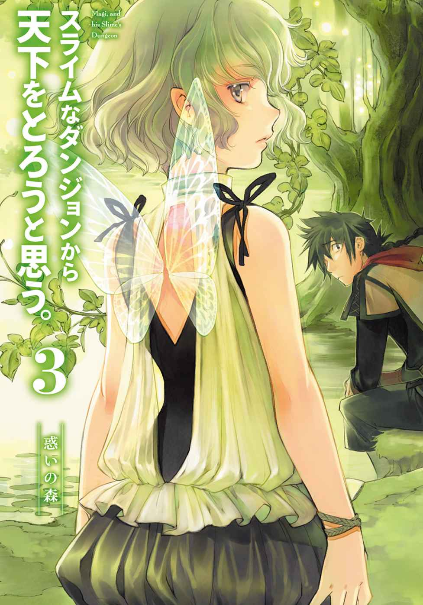
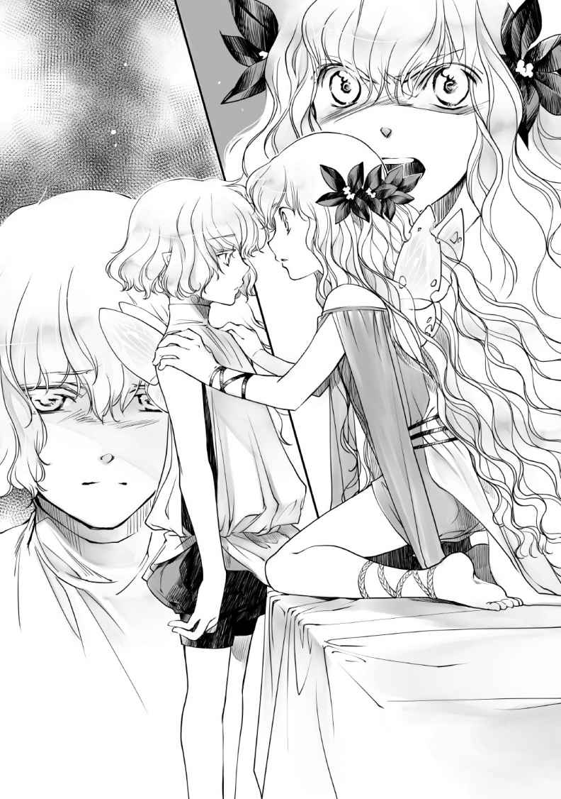

| スライムなダンジョンから天下をとろうと思う。 3 ～惑いの森 (アース・スターノベル) | |
| 再藤 | |
| (2015) | |

これまでのあらすじ
落ちこぼれの魔法使いマギ。彼は町から離れた洞窟の奥深く、冒険者の影に怯えながら暮らしていた。
だが、人型スライムの「スラ子」を創造したことでその生活が一変する。妖精のシィが仲間になり、またスラ子は湖の水精霊 を捕食することで精霊の力も手に入れてしまった。
順調な日々の中、洞窟に冒険者がやってきて、彼らとの戦いでスラ子が暴走。不定形故の不安定さから消滅しかけてしまう。その窮地も、シィが自分の羽をスラ子に分け与え一命を取り留めたのだった。
洞窟にきた冒険者の一人に、カーラという少女がいた。魔物の血をひき、狂暴化すると敵味方関係なく襲いかかってしまう彼女は、町の住民たちからひどく疎 まれていた。
そして、マギとカーラと町長の孫娘ルクレティアが遭遇する。貴族の血筋を引くというその令嬢は、自身も優秀な魔法使いであり、いずれ長を継ぐだろうと言われていた。ルクレティアはマギが金策として町の道具屋に卸していた〝妖精の鱗粉〟に目をつけ、メジハを発展させるためにマギへ協力を求めるが、マギはこれを拒否。敵対してしまう。
ルクレティアが洞窟の調査にやってくることを知ったマギは、そこで彼女を倒すことで決着をつけようとする。だが、その調査にはカーラも加わっていた。調査に協力したように見せかけながら、マギ達の存在を秘匿 しようとしたカーラだったが、ルクレティアはあっさりとそれを看破する。窮地に陥 ったカーラを助けようとマギ達が駆けつけ、マギ達、ルクレティア、狂暴化したカーラの三つ巴の戦いの末、マギ達はなんとかルクレティアを倒した。
正気に戻ったカーラに対して、マギは魔物として自分達と一緒に生きるように説得する。そして、スラ子がルクレティアを〝説得〟することで、町の人間が洞窟にやってこないよう協力させることにも成功する。新たに二人の仲間を得たことで、ようやく洞窟に平和が訪れたのだった。
プロローグ
目覚めはいつものように、そっと息を殺した控えめな気配に起こされた。
暗く、湿気て対流する洞窟内の空気にまぎれるように立ち尽くした妖精が、枕元からこちらを見つめている。その静かな目線に、
「......おはよう。シィ」
「......おはようございます」
にこりともしない挨拶もいつもの通りだ。
起き上がると、昨日の疲れが身体に残っている感がある。ぼんやりと鈍い意識のもやを飛ばそうと頭を振っていると、
──おおおおおおおおおおおん
山鳴りの音が鈍く伸びた。
ああ、もうそんな頃かと思いだす。
この洞窟で過ごして長い俺にはなじみ深い重低音に、目の前のシィが少し不安そうな表情を浮かべているのに気づいて、
「シィは、こんなに近くで聞くのは初めてだよな」
寡黙 な相手はこくりと頷いた。
「気にしなくていいぞ。ただの自然現象だ、すぐにいなくなる」
「いなく......？」
「ああ。どうせすぐ我慢できなくなる。昼くらいかな」
俺の説明に不思議そうに首をかしげて、けれど結局、それ以上はなにも言わない。
シィはとても無口だ。
静かな妖精という言葉は、そのなかに大きな矛盾をはらんでいる。
妖精というのは生まれながらの騒動者のことだ。歌って笑い、無邪気な悪戯 をしかけて人を煙に巻く。
妖精族もいわゆる〝魔物〟の一種で、人間とは決して友好的な間柄ではないが、森で誰かが行き倒れていたりすると気紛れに助けてみたりすることもあるので、絶対的に敵対しているというわけでもなかった。
この近くの森の奥に、その妖精達の泉がある。
そこにはたくさんの妖精が集まって群れをなしていて、連中は時々、人里にまで姿を見せては騒動を巻き起こして迷惑をかけていた。
たまに俺のところにもその無邪気な暴君たちは現れて、嵐のように暴れては帰っていくことがあったのだが──
そう言えば、最近あいつら来てないな。と、ふとそんなことを思い出した。
「......？」
じっとこちらを見つめる視線に、物思いから我に返る。
澄んだ瞳でこちらを見ている相手と目を合わせていると、俺のなかにふとした悪戯心が湧いてきてしまい、
「シィ」
ちょいちょいと手招きして近くに呼んでみる。
感情の乏しい表情を少し怪訝そうに近づいてくる、その背中に手を伸ばした。
「っ」
薄く伸びた羽に触れる。
最上質の綿を丁寧に解 して伸ばしたような繊細な感触。少し力を入れればそれだけで破れてしまいそうな蝶羽をなぞると、びくりと敏感な身体が震えるが、シィは逃げようとしない。薄い唇を結んで必死に声が漏れるのを抑えている。その隠された反応は、代わりに羽の表面に付着する鱗粉が仄 かに色づくことで顕 わだった。
それに気づいたシィが恥ずかしそうに目を伏せる。頰がわずかに赤らんでいるが、表情はあくまでなにもかもを堪えようとしたままだ。
......シィが泣いたり笑ったりしたところを、俺は見たことがなかった。
自分の考えもほとんど口に出さない。
シィが流暢に喋ったり感情を露わにするのはひどく稀なことで、それは例えば以前、スラ子が自分を見失いかけて暴走した、あの時くらいのものだった。
──変わりたい。そう言った。
いったいそれはどんな意味で口にした言葉だったのだろうと、そんなことを考えながら、しばらく声を堪えて耐えるシィの様子を見守っていると、
「お台所から出る使用済みの水とかけて、いたいけな女の子に破廉恥な行為を強要することと解きます」
声が響いた。
「そのこころはなんでしょう？」
「......下種 い」
「はい。おはようございます、マスター」
振り返った先には、柔らかな笑顔のスラ子が部屋の入り口に現れていた。
一章 アカデミーの使者
▽ １△
スラ子とシィ。そして、少し前からカーラも洞窟で暮らすようになり、それまで食卓に使っていたテーブルがさすがに手狭になってきた。
洞窟奥に隠された生活スペースにはまだいくらか余裕はあるが、もちろん無制限に広いわけでもない。少し前までは俺とスケル、あとはスライム達だけだったところにこの一月で三人も住人が増えたのだから、それも当然だった。
「いっそのこと、お引っ越ししてしまいますか？」
両手に朝食の皿を持って、台所からこちらへ歩いて来ながらスラ子が口を開いた。お手製のエプロン姿が大変可愛い。両手だけでは足らず、薄青い長髪のかたちを微妙に変化させたそれで皿を持ちながら、
「たとえば洞窟を出たすぐ近くに新居を建て直すとか！ そういうのも素敵だと思いますっ」
「新居なあ」
ルクレティアが町に戻ってからこの一週間、洞窟にやってくる冒険者もおらず、俺達はまったくの平和を享受していた。
ギルドへの口利きの影響がさっそく表れたのか、それとも十名以上を動員した調査隊が不名誉な形に終わったせいなのかはわからない。だが、町からの冒険者がこれからも訪れないのなら、洞窟の外にある湖のほとりに家を建てて、そこに全員で住むというのも不可能ではないかもしれない。
そうだなあ、とちょっと脳裏に思い浮かべてみる。
......スラ子が外で洗濯物を干して、カーラは町へ買い物に出かけて、シィは黙々と家のなかを掃除してくれている。以前の洞窟はそのままスライム達の飼育場所として活用すればいいし、そっちの世話はスケルに任せて、もちろん俺も心ゆくまでスライム達を愛でて──色々と心がなごむ妄想だったが、あくまで妄想だ。
俺達の住む洞窟とその目の前に広がる湖の周囲は、鬱蒼 と生い茂った森が囲んでいる。
こんなところに家を建てたりなんかしたら、いつ他の魔物から襲われるかわかったもんじゃない。壁や堀で囲いもせず、一軒家だなんてただの自殺行為だ。
その前に周辺を安全にしておく必要があるし──第一、そんな金がない。
俺達が妖精の鱗粉に代わる金策として準備している『妖精の傷薬』は、つい昨日ようやく試作品が完成したばかりだった。
もちろんまだ売りに出せる状態じゃない、あくまで試作品だ。いくらかはすでに臨床済みだったが、もっと経過を見てからじゃないととても売り物にはならないだろう。
「むう。それでしたら、洞窟のなかを広げてしまいます？」
「ここは天然洞窟だ。素人が掘削なんかしたらどうなるかわかんないぞ」
下手なことをすれば落盤だって起きかねない。
まあ、そこは専門の業者に頼めばいいだけだが、
「そういう専門の方々って、魔物の方々にもいるんでしょうか」
「アカデミーのサイドビジネスに、建築・改築請け負いますってのがあったな」
「......本当に手広くされているのですねー」
感心半分、呆れ半分といった口調でスラ子は頭を頷かせた。
「ま、それにも結局は費用がかかるんだけどな」
間抜けな結論に落ちをつけるように、おおおおおおおおん、と間延びする山鳴りの音。
スラ子が顎を持ち上げて、
「今朝からずっと続いてますけど、不思議な音ですね」
ああ、そうか。
スラ子もこれを聞くのは初めてになるのか。
「季節毎にあるもんだからな。慣れておいた方がいいぞ」
「山をくだる季節風、ということです？」
「いいや。腹の音だよ」
一瞬、スラ子が沈黙した。
ぱちくりと大きな瞳を瞬かせて、それから恐る恐る訊ねてくる。
「ええと。それはつまり、......ストロフライさんの？」
「そうだ」
俺は大真面目に頷いた。
竜は長く生きる生き物だ。
身体もでかい。必要とされる食料だって桁が違う。
「考えてみろ。この世界にいったいどれだけ竜がいるのかは誰も知らないが、あんな連中がまともに図体に見合うだけの量をバカスカ食ってたら、世界なんてすぐ滅ぶぞ」
あ、とスラ子は初めて思い至った表情で、
「そう言えば、そうですよね。ということは──」
「連中は成長するにつれて食料を必要としなくなるらしい。精霊的な存在になる、って言うべきか。エルダーなんて呼ばれる長命竜になると、なにも食べなくていいんだと」
もっとも、そんな連中はまず下界に関わってくることなんてない。俺だって余所から聞いた話だ。実際に会ったことはない。
「連中はそもそも食欲自体がほとんどないらしい。まともに食い散らかせば世界が終わるってわかってるのかもな。だが、若い竜はまだ完全にそれを抑えきれなくて、だからって俺達みたいな食習慣なんて持ってないから、腹が減ることにもなかなか気づかない」
「それで、このお腹の音ですか」
「そうだ。生理的な周期みたいなもんだ。上のお気楽黄金竜の場合はそれがだいたい半年に一度。極限まで空腹になってから腹の音を盛大に鳴らし始めて、最初は自分でもなんの音か気づかなくて、昼頃になってようやく思いついてどこかに飛んでいく」
「お食事に向かうわけですね」
ああ、と俺は頷いた。
「今日、世界のどこかで〝なにか〟が滅ぶ。被害が集落程度ですむか、町か、それとも国一つか。それは気分次第だけどな」
絶対に外れようのない予言を神妙に伝えると、さすがにスラ子も表情をひきつらせた。
「とんでもないお話です」
「実際、とんでもないぞ。この音が聞こえてるあいだは、人も、魔物も、全員が巣穴に閉じこもってぴくりともしないだろうよ。空腹の竜ってのはえらく機嫌が悪いからな。運悪く見つかれば、嬲 られて、玩ばれて、余計に腹を空かせたってことでますます相手を不機嫌にして、間違いなく悲惨な目に終わる。簡単に殺してもくれない。末代どころか先祖まで遡 って呪われるレベルだ」
「これ以上ないってくらい理不尽ですねー」
「空腹時のあれとは目も合わせちゃ駄目だ。絡まれたらそこで人生終了ってことだな」
まさに生きる天災。
この世界の頂点に立っているのは、そんな傍迷惑極まりない存在だ。
「竜さん、恐るべし......」
スラ子がしみじみと感想を述べる。
ふとこちらを凝視する視線に気づいた。びっくりしたような眼差しが俺を見つめている。
「どうした？ カーラ」
「いえ。あの、マスターって、竜と知り合いなんですか？」
つい最近、〝魔物〟になったばかりの女の子が、耳の横に伸びた髪を揺らしながら訊ねてくる。
この洞窟で過ごすようになってしばらく経つが、カーラの口調はずっと丁寧なままだ。というか前より他人行儀になっている気すらする。
それはともかく、相手の尊敬の眼差しに俺は気を良くして、
「ああ、まあ、そんな感じ──」
「マスターは、山頂に住んでらっしゃる竜さんの舎弟なんですっ」
わざと曖昧に答えようとしたのに、すかさずスラ子にばらされてしまった。
「おい、スラ子」
「違いましたっけ？」
「違いませんでした。......カーラもそのうち会うことがあると思うから、気をつけてくれ。いや、気をつけてもどうにもならないんだが、覚悟だけはしておいてくれ」
もちろん覚悟というのは、出会った次の瞬間、理不尽に人生が終了してしまう可能性についてだ。
はい、とカーラはやや緊張した面持ちで応えてから、にっこりと微笑んでみせる。
「でも、竜と知り合いで無事だなんて、それだけでも凄いですね」
ああ、カーラは素直だなあ。癒されるなあ。
「ということは、今日はお昼までわたし達も外には出られませんね。薬草の採取に行けたらって思っていたんですが」
最近は冒険者連中が洞窟にやって来ないから、俺達は昼夜問わず洞窟の外へ出かけられるようになっていた。もちろん、十分に出入りには気をつけてはいたが、
「それが賢明だな。今のストロフライに会ったら、相手が俺達だろうと関係ない。わかってる危険は初めから回避しておくべきだ」
「了解です。では、お出かけするのはお昼からということでっ」
スラ子が元気よく話をまとめたところで、今日の朝食が始まった。
昼頃になって、予想した通りに山鳴りの音はぴたりと途絶えた。
空腹の竜が憐 れな獲物を求めてどこかへと飛び去ったのを確認してから、俺達は外に出る準備を始めた。さあ出掛けるぞというところで邪魔が入る。──洞窟入り口に埋めた反応石から合図があった。
それは何者かがこの洞窟へやってきたことを意味している。
冒険者、ではない。
反応石から送られてきた長、単を組み合わせた信号は一種の符丁になっていて、偶然にそれが送られてくることはありえなかった。そして、その信号はこの洞窟奥の存在を知る町の人間──ルクレティアのものでもない。
──ということは。すぐに相手に見当がついて、舌打ちする。
後ろを振り返って、
「スラ子。客だ。俺が相手をするから、お前は奥に下がってろ」
スラ子がきょとんと瞬きした。
「どなたですか？ 初めてお会いする方なら、わたしもご挨拶を......」
「いいや、駄目だ」
相手の言葉を遮って、俺はきっぱりと首を横に振った。
「お前は、絶対に出てくるな。これは命令だ」
いつもは使わないような厳しい口調で言うと、スラ子ばかりかシィやカーラまで驚いて俺の方を見つめてくる。
「......わかりました」
なにやらただ事ではないことを察してくれたらしく、スラ子は素直に頷いた。
「あとで、理由を教えてくださいますか？」
「ああ。あとでちゃんと話すよ。悪い、今はそういうことで頼む」
「了解ですっ。シィ、カーラさん。よろしくお願いしますね」
「......はい」
「うん、わかった」
スラ子が別室に下がるのを待って、俺は物問いたげな視線を向けてくるシィとカーラを連れて隠し扉を出た。
二人への説明も後だ。
うっかりしていた。そろそろそういう時期とはいえ、こんなに急だとは。
どうやって誤魔化そうかと考えながら、洞窟へ出る。
灯りのない洞窟内は、耳をすませば地下水脈の流れる静かなせせらぎと、天井から落ちる水滴の音まで聞こえてきそうな沈黙が辺りを包んでいた。
静かに待つ。
やがて、その暗闇から浮かび上がるように現れたのは、周囲に溶け込むような雰囲気をもった妙齢の女性だった。
「こんにちは。お出迎えありがとうございます」
社交的な表情の中央にあるのは、獲物を捉えるというよりはむしろ絡みつくような不穏な眼差し。スラ子とは違う意味の不気味な妖艶さを身に纏ったその相手は、下半身がそっくり蛇の姿をかたどっている。
「定期査察に伺いました」
アカデミーの使いである有鱗有尾の女性が、そう告げて社交的に微笑んだ。
魔物アカデミー。
人間が魔物と称する、その雑多な生物集団に存在する、恐らくは唯一の意思共同体だ。
その組織が、「魔物」の範疇 に含まれる種族の多種多様さに比べるとひどく小さな規模に留まり続けているのには、その魔物という在り方自体が深く関わってきている。
魔物というのは元来、自分勝手な生き物だ。
自分が大事。自分のことが一番。味方と言えるのは身内だけ、場合によってはその身内とだって争いもする──と、これは人間だってそうだが。
たとえばあの竜に代表されるような圧倒的な存在が、好んで他と並び立とうとするなんてありえないし、森の民、賢人族とも呼ばれるエルフ達は筋金入りの孤立主義の徒だ。妖精連中はただ毎日が楽しければ満足だし、精霊は自らの管理する場所の魔素 が整っていればいい。ゴブリンやオークは誰かを襲い、孕ませることしか頭になく、もちろん、スライムのように知性がないものだって大勢いる。
そんな魔物達のなかでアカデミーに与する数は少なく、それはどこまでも〝非主流〟だった。
逆説的には、アカデミーに属する魔物は次のどちらかということになる。
自分が強者ではないという自覚がある者。
あるいは集団の強さを知り、それを積極的に活用しようとする者。
良く言えばそれは人間族という最大の敵性勢力、その脅威を心得ているということになるのだろうが、群れなければ戦うことも出来ない恥晒し、とそんな風に思う輩もいるわけで。
そのアカデミーから派遣された査察員である女性を連れて、俺達は生活スペースに戻った。客間代わりの食卓に案内して、腰を下ろす。すぐにスケルがお茶を持って来てくれた。
震える腕で持ってきたお茶を蛇人族の査察員が受け取って、
「ありがとうございます」
にこりと微笑んだ。かた、と骨を鳴らして応えたスケルを見送りながら、目を細める。
「スケルさんもお元気そうですね」
「ええ、まあ。そろそろ寿命が来そうなんで、ゆっくりさせてやろうと思ってます」
「そうですか。そうでしたね」
女性はわずかに眉をひそめて、しんみりとした息を吐いた。
「......スケルさんも、もう五年になるんですね」
スケルは、俺がこの洞窟に赴任してきた時に創った魔法生体だ。
なけなしの金をはたいて手に入れた作成キットで組み上げた、手製のスケルトン。俺自身の未熟さのせいでその出来は決していいとは言えなかったが、スケルはそれからずっと俺の傍にいてくれた。
今でこそスラ子やシィ、それにカーラがいてくれるが、ほんの一月ほど前まで、この洞窟には俺とスケルしかいなかったのだ。
暗い洞窟に二人きりで。たくさんのスライムに囲まれて籠もっていた俺に、物言わぬそのスケルトンは黙って付き合ってくれていた。
......そのことが、俺にとってどれだけ心強かったか。
「そう言えば、マギさん」
場に流れかけた空気をさりげなく変えるように、柔和な微笑を浮かべた女性が小首を傾げた。
「初めてお会いする方々がいらっしゃるのですけど、よければご紹介していただけませんか？」
「ああ、そうでした。すみません」
俺はこほんと咳をついて、テーブルから少し離れた場所の二人を近くに呼び寄せる。
「シィと、カーラです。二人とも、少し前からこの洞窟で一緒に暮らしてます」
「こ、こんにちはっ」
いつものように無表情でぺこりと頭を下げるシィの横で、カーラがひどく緊張した様子で挨拶する。初々しい挨拶を受けた蛇人族の女性が優しげに微笑んだ。
「可愛らしい方々ですね。......妖精のシィさん。それに、人間をお雇いになられたのですか？」
「彼女は、我々の身内になったばかりです。ウェアウルフの血を引いていて」
「それはそれは。同胞が増えることは嬉しいですね。私はエキドナです。アカデミーの所属で、以前からこの辺りの地域を担当させてもらっています。お二人とも、どうぞよろしくお願いしますね」
丁寧だが堅苦しさのない所作。その表情も含めて、ひどく手慣れた仕草だった。
仕事としてそれをしているのだから当然の技能ではある。
精霊に近い上半身と、蛇の下半身を持つ蛇人族には美形が多いことで知られているが、それは同時に彼女達の特性を示してもいた。つまり、その美貌を武器に獲物を捕らえ、食料や繁殖の糧 にもするという生態を。
「いえ、あの、こちらこそ。よろしくお願いしますっ」
他種族の同性にさえ魅力的に映るその美貌の冴えに、見惚れかけるようにしていたカーラがあわてて返事をする。
エキドナはくすりと微笑んで、改めて視線をこちらに戻した。
「しばらくご無沙汰していた間に、随分と様子が変わったみたいですね」
「まあ、色々とありまして」
「色々。それはぜひ詳しくお聞きしたいですわ」
一瞬、持ち上げたカップの向こう側から文字通りの蛇の眼がこちらを捉えた。
──いきなり来た。
「......妖精、シィは。近くで倒れていたのを拾ったのが縁で、一緒に住むことになりました。それからですね。カーラの件もあったりして、この一月はけっこうバタバタしてました」
顔面に愛想笑いをはりつかせて答える。
意図的にぼかしたこちらの回答に、吟味する時間を持たせるように花草茶 を傾けてから、蛇の美女が口を離した。
「なるほど」
納得というよりは保留を意味するような声。
「ここに来る途中、洞窟の魔渦が変わっていたのもなにか関係がありますか？」
もちろんそのことについては聞かれるだろう。
俺は応答が不自然にならないよう、必死に頭を働かせながら、
「二週間くらい前、町の人間と小競り合いがあったんです」
「小競り合い。まさか、戦われたのですか？」
女性が初めて表情を変えた。軽く目を瞠 って、素直な驚きを表している。
「あ。ごめんなさい。少しびっくりしてしまって」
相手の反応は、俺という相手の駄目っぷりを知っているからこそだった。なにせ、今まではどれだけ発破をかけられたところで、外からやってきた侵入者相手に引き籠もってばかりだったのだから。
俺は苦笑を浮かべて、
「戦うというか、相手が上手く罠に嵌まってくれたって感じですけど。シィと、それにカーラがいてくれたおかげでなんとか。それでまあ、最近は少し落ち着いてます」
「そうでしたか......」
ゆったりとした瞬きの後、理知的な輝きの眼差しがひたりと俺を見据えて、
「──素晴らしいです」
わざとらしいくらい、満面の笑みが花を咲かせた。
「人間どもに荒らされていたこの洞窟を、見事に奪い返したわけですね。おめでとうございます」
賞賛の言葉。だが、それを素直に受け取るわけにはいかなかった。
俺は慎重に頭を振って、
「ちょっと落ち着いているってだけですから。まだまだ、これからの経過を見てみないとなんとも言えません」
「確かに。しかし、それでも喜ばしいことです。マギさん、あなたが長いあいだ、苦しい思いをされてきたことは知っていますもの。アカデミーからもきっとよい評価があるでしょう」
「......ありがとうございます」
「本当に、自分のことのように嬉しいですよ」
正面に座る相手が向けてきている笑顔は、あくまで社交儀礼だ。そんなことはわかっているのに、ついついその表情に引き込まれそうになる。
俺は自分のお茶を手に取って一口して、魅了の笑みから逃れた。話題を変える。
「それにしても、今月はこっちに寄られるのがずいぶんと早かったですね。来週くらいかなと思ってました」
アカデミーの査察員が担当する場所は一ヵ所じゃない。たくさんの魔渦を担当して、定期的にそれらを訪問している。これまでの経験でいけば、この洞窟に査察が入るのはだいたい月末頃になるはずだった。
「すみません。少し別件が入って予定が変わってしまって。ご迷惑でした？」
「いえ。来週なら、もう少し様子を見た上で報告できたかなってだけです」
答えると、相手は微笑を含ませるように喉を鳴らして、
「そうですね。それはまた、来月の楽しみにさせていただこうかしら」
それに、と続ける。
「しばらくこちらに留まることになるかもしれませんし。近いうちに、またお伺いできると思います」
俺は顔をしかめた。
「なにかあったんですか？」
「ええ、まあ。まだなんとも言えないところなのですが......」
ちらりと切れ長の眼差しがこちらの顔を撫でてから、ついと隣に向かう。
「シィさん。あなたはこの森の奥にある、妖精の泉のご出身ですか？」
急に話を振られたシィが、びくりと肩を震わせた。不安そうな眼差しでこっちを見る。あわてて口を挟んだ。
「シィは、森で倒れてたんです。それ以外のことは、あんまり訊いてなくて」
「ああ、ごめんなさい。無理になにか事情を聞き出そうというわけではないんです。ただ、最近はあちこちで色々とあるみたいで」
「やっぱり、なにかあるんですね」
念を押すように俺が言うと、蛇の美女は微苦笑を浮かべて頷いた。
「正直に言うと、そうですね。まあ、我々というのは元々〝そういうモノ〟ではありますから、なにかある方が自然なのかもしれませんけれど......。そう言えばこの洞窟に入る前、湖の様子も以前とちょっと違っている雰囲気でしたが、マギさんはなにか御存じですか？」
「湖ですか？」
どきりと心臓が鳴るのを抑えて、平静を装って答える。
「......そう言えば、最近ウンディーネを見かけてない気がしますね。まあ、さっき言ったことでバタバタしてたんで、あんまり外にも出られてないんですけど。......なにか不味いことになりそうですか？」
蛇の眼が俺を見据えた。
じっと凝視。
しばらくして、静かに目線が外される。
「──いえ。精霊の方々というのは元々、我々の考えが及ぶ相手ではありませんからね。ただ、水の方は、特に場の管理にはうるさいはずなのに、少し自由にさせすぎているような気がしますけれど。私の考えすぎかもしれません」
「とりあえず、洞窟のノーミデスはいつも通りですね。そっちはついこの間、会いました」
「あの方はいつものんびりとされていますからね。今日もご挨拶したいところですが、またお昼寝中でしょうか」
表情に柔らかさを戻して、女性はティーカップをテーブルに戻した。
「御馳走様でした。今日はそろそろ失礼しますね」
「あ、はい。ご苦労様でした」
「上にはさっそく報告しておきます。現状では確かにもう少しの経過確認が必要でしょうが、必要ならこちらから支援、援助ということもあると思います。その件については、また追ってご連絡を入れますね」
「わざわざすみません」
「とんでもない」
ラミア族の美女は完璧に計算され尽くした微笑で、
「我々の命の源。その源泉である魔渦を人間どもから護れるかどうかなんですから、ご協力は惜しみません」
善意しか感じられない表情に、俺は黙って頭を下げた。
「そう言えば」
座るのではなく巻くように使っていた椅子から相手が離れ、それを先導して見送りに出る途中、いかにも今思いついたという様子で蛇の査察員が口を開いた。
「山上のお方は、ちょうどお食事の時期だったようですね」
「ええ。ついさっき腹の音が聞こえなくなったばっかりです。二、三日は戻らないでしょうね」
「そうですか......。今度こそ、ご挨拶をと思っていたのですけれど。残念です」
こればかりは本心からのものとしか聞こえない言葉と口調に、そうですね、と俺は乾いた笑みで応じる。
器用に下尾を左右に揺らしながら去っていく女性を送ってから洞窟の奥に戻ると、三人が俺を待ち構えていた。
とりあえず無事に事が済んだことにほっと息を吐いて、
「シィ、カーラ、いきなり悪かった。スラ子、説明もしないですまなかったな」
「いえ。それはいいんですけれど」
お客が来ていた間、奥に隠れていたスラ子が少し複雑そうな表情で、
「アカデミーの方だったんですね」
「ああ、そうだ。このあたりを担当してる査察員。アカデミー所属の蛇人族で、エキドナっていう相手だ」
「エキドナさん。わたしが会ってはマズい方なんです？」
「マズいというか、面倒っていうかな」
なんと表現すれば的確かを考えてから、
「......彼女、とても上昇志向が強いんだよ」
「上昇志向ですか？」
三人とも、あんまりぴんとこない表情だ。
俺は黙って頷き、テーブルに座って冷えた花草茶 を一口してから、説明を続ける。
「ああ。アカデミーってのも一応は組織だからな。命令を出す立場の奴もいれば、俺みたいな下っ端もいるわけだ。査察員っていうのはその中でまあ、下から数えた方が早いんだろうが、エキドナ、さっきの彼女は絶対に出世したいって考えてるらしくてな」
「出世。つまり権力ですよね。ルクレティアさんと似たタイプの方ということでしょうか」
近いが、違う。
「ルクレティアの場合は、生まれた時からの立場があるだろ？ 町の有力者の孫。それに貴族の血縁だとか。もちろん能力だってあるけどな。だけど、エキドナはそうじゃない。種族柄、外見は大したもんだし、能力だってあると思うが、あの女はその自分の力だけで上に登りつめようとしてる。叩き上げってやつか」
「苦労を重ねながら出世していかなくちゃならないタイプ、というわけですね」
「そうだ。ルクレティアがエリートなら、エキドナは非エリートだ。まあ、アカデミーからしてまず魔物のなかでは非主流だしな。集まってる連中だってやたら我が強いし、厄介な連中が多い。そんな中で上を目指すってんだから、」
「さぞ優秀なんでしょうね」
「優秀もそうだが、抜け目がない。えげつない。自分が上に行くチャンスをいつも虎視眈々と待ち構えて、絶対に見逃さない。一度、目をつけたら食らいついて放さない。そんなタイプだ。蛇の執念深さって言ったらそれまでだが」
「なるほどー」
頷いてから、スラ子はそのまま首を傾げてみせる。
「ええと、マスター。そのことが、わたしが顔を見せちゃいけないことと、どんな関係があるんでしょう？」
「スラ子。お前は俺が創った特別なスライムだ」
「はい」
スラ子は嬉しそうに頰を染めた。
「その術法は一応、俺のオリジナルってことになる。まあ正直、そんな大したもんじゃないんだけどな。凄いというよりかは呆れられるって類 のものだし──」
ふとそこで気づいて、念を押しておく。
「お前のことが凄くないなんて言ってないからな。勘違いするなよ」
「大丈夫です、マスター」
スラ子が俺の気遣いに苦笑してみせた。
確かに気を回しすぎだったかもしれない。こほん、と息をついて、
「......だが、どんなものだろうが研究は研究だし、成果は成果だ。研究者にとって自分の研究は命より大事で、誰彼かまわずになんて明かしたくはない。アカデミーに論文として出すとか、そういうことでもなければな」
ああ、とスラ子がこくこくと頷いた。
「それでわたしを見せないように、と」
「ああ。まあ、見せたからどうってわけじゃないかもしれないんだが。......エキドナは、色々と油断できない相手だからな」
「どういうところがです？」
質問に答えようとして開きかけた唇が乾いていることに気づいて、お茶を含む。
スラ子とシィ、そしてカーラ。それぞれ真剣な表情でこちらを見てくる三人に今さらながらに椅子に座るよう勧めてから、自分も残る一つに腰を落ち着けた。
ちょうどいい機会だ。
その辺りの事情を知らないシィやカーラもいることだし、一度しっかりと話しておいた方がいいだろう。
「ここのダンジョンは人間側と魔物側、どっちからも重要視されてない。このことはスラ子、お前には前に言ったことがあったよな？」
はい、とスラ子が頷く。
「マナの渦から生まれる魔物の数も強さも、あんまり大したことがないので、人間さん達も脅威に思わず、一方の魔物陣営からも重要視されていない。でしたよね」
「そうだ。魔物は自分達が生まれる源であるとされている〝マナの吹き溜まり〟を大事にしたい。そして、そんな厄介なものはできれば失くしてしまいたいってのが人間だ。ここの洞窟はせいぜいスライムが生まれるくらいで、魔物側が必死になるほどの価値はない。アカデミーの上層はそう判断してる。人間側だってわざわざ潰すほどでもない、だからわざと残して見習い用の鍛錬所として使ってたわけだ」
人間と魔物。どちらから見向きもされない場末のダンジョン。
だからこそ、俺は今まで引き籠もりながらも生き長らえることができていた。
「そういう扱われ方で、俺なんかにはかえって幸運だったんだけどな。だが、あの女は違う。エキドナは、自分の出世に役立つならどんなものでも利用する。この洞窟だって例外じゃない」
ん？とスラ子が頭を傾けると、スライムブルーの長髪も疑問形をかたどった。
「でも、この洞窟の魔渦は全然、濃くないんですよね。人間さんから主導権を奪ったところで、それでそんなに評価をされるとは思えないのですが」
その通りだ。
その程度ではアカデミーがエキドナを評価する理由にはならない。そして、エキドナもそれを承知している。
あの美貌の蛇が考えているのは、もっと別のものだった。
「あるだろう。この辺鄙 な洞窟に、たった一つだけ他と違うことが。──この山の上には、何がいる？」
まっすぐに立てられた人差し指を追うように三人が目線をあげる。その先にあるのは天井。そしてそのさらに上には、
「まさか」
スラ子が言葉を吞んだ。
俺はゆっくりと頷く。
「そうだ。あの女、エキドナはずっとストロフライに接触する機会を図ってる。この世界の頂点にいる生き物、その相手を自分の野心に利用しようとしてるんだ」
「竜を、利用する......」
耳にした言葉が幻聴の類ではないかを確かめるように、スラ子が繰り返した。
カーラとシィも声を失っている。カーラはストロフライとの面識を持たないが、たとえ直接会った経験がなくても、〝竜〟という単語だけで、それがどれだけとんでもないことかはわかるはずだ。
「そんなことが出来るんですかっ？」
ごくりと唾を飲み込んで訊ねてくる相手に、俺は爽やかに微笑んでみせる。
「もちろん。出来るわきゃない」
スラ子がかくんっと肩を落とした。
「なんですか、それ」
「前にも言っただろ。竜ってのは、災害だ。自然そのものだ。利用できるかも、なんて考えそのものがまず間違ってる。そういう発想ができる時点で、そいつはまともじゃあない」
つい少し前に俺達と対立した貴族の令嬢、メジハの町のルクレティアもそうだ。あの令嬢も、近くに棲む竜を指して『資源』として見るかのような台詞を言ってのけた。
「でも、エキドナさんはそうお考えなんですよね」
「ああ」
俺は苦々しく頷いて、
「だから厄介なんだ。あの女は」
この場末のダンジョンが、人間と魔物双方から積極的な介入をされていない理由。そのもう一つに、山頂の黄金竜の存在がある。
下手になにか大きな動きを見せて、もしもそれがこの山の頂 に君臨する相手の不興を買ってしまえば、その時点で滅ぼされてしまってもおかしくない。魔素 の吹き溜まりを巡って争いを起こしている二つの勢力にとって、竜という個体はそれ単体で目の前の敵以上に厄介な存在だった。
人間、魔物。そして竜。微妙なパワーバランスなんかじゃなく、ただ竜の圧倒的な一人勝ちがこの山、そして洞窟付近の現状だ。
竜という超越種族とその威風には、それだけの力がある。
誰も竜を敵になんかしたくはない。そうした怯みが、この土地に対するいずれかの勢力からの干渉も控えさせているのだった。
「アカデミーの本部も、この山の竜については徹底的に不干渉のスタンスだ。そりゃそうだよな。誰だって個人に喧嘩を売って組織ごと滅ぼされたくはない」
冗談のような話だが、それが比喩でもなんでもないから恐ろしい。
実際に、竜に滅ぼされた国の例をあげれば枚挙に暇 がないくらいだ。人間が竜を倒した、だなんていう眉唾物の話に比べたら、説得力も桁が違う。
竜殺しの人間や本物の竜の死骸なんて誰も実際に見たことはないが、逆に竜に滅ぼされた国や襲われた集落の跡地なんて至る所に見つかるのだから。
「エキドナさんも、もちろんそのことはご存じの上で？」
「そうだ。竜云々については完全にスタンドプレーだな。まあ、もしも竜を味方に引き入れるなんてことができたら、それこそ昇格どころの話じゃない。魔物の非主流として細々と存在してるだけのアカデミーが、一気に最大勢力に躍り出ることにだってなるわけだからな」
「ストロフライさんって、本当に凄い方なんですねー」
ちょっと想像が追いつかないのか、ぼんやりとした声でスラ子は息を吐いて、
「そのエキドナさんと、ストロフライさんが顔を合わせたことはないんです？」
「あるぞ。一回だけな」
おお、と瞳を輝かせる。
「どうだったんですか？ 無事に済んだということは、ストロフライさんも不快にはなられなかったということでしょうか」
「一目見て、化粧臭い！ で終わったな」
スラ子はなんともいえない微妙な表情を浮かべた。
「それは......。命があっただけマシ、なんでしょうか」
「そういうことだろうよ」
幸か不幸か、あの蛇人族の美女は黄金竜の眼には適 わなかったということだ。
それで諦めてくれたらよかったのだが、エキドナはそれからも事あるごとにストロフライと接触しようとしていて、一度なんか山を登ろうとしたところをストロフライの炎に焼かれかけたこともあった。
「よくご無事でしたね」
「隣にいた俺はご無事じゃなかったけどな」
「......焼かれたのです？」
「こんがりとな」
直撃もしていない熱線の余波だけで、余裕で死にかけた。
俺は肩をすくめる。
「まあ、そういうわけでエキドナは全然、諦めてない。竜のことも、それ以外もだ。自分の出世の為になると思えばどんどん口を出してくるし、もちろん口だけでも済まない」
「そのあたりは、まさにマスターの苦手なタイプですね」
「そうだ。出世争いやら権力闘争やらそういうのは、俺のいない場所でやってくれ」
結局はそれに尽きる。
人間と魔物の小競り合いや、それぞれの組織内でのドロドロとした権力闘争。そんなものには関わりたくもなかった。
俺にはスラ子やシィ、カーラ。そしてたくさんのスライム達が安全に過ごせる場所があればそれでいい。
「マスターがあの方を警戒する理由はわかりました」
スラ子は納得したように頷いて、
「そのエキドナさんですが、なにかこの近くで問題が起きているようなことを匂わせていらっしゃったんですよね」
「ああ、言ってたな。しばらくこのあたりに留まるみたいなことも言ってたから、どこかの調査でもするつもりなのかもな」
「洞窟前の湖のこともおっしゃってたみたいですけど、なにか関係あるんでしょうか」
「いや、それはないんじゃないか。なんとなくだが」
言うまでもなく、洞窟の湖から管理者の精霊が消えたのは目の前のスラ子が捕食したからだが、
「ただ、湖のマナバランスが乱れてきてるってのは、ちょっと考えないとな。ウンディーネは、目一杯、自分の場所を管理するタイプだったから放置状態になってその反動が出てるんだろうが......時間が経って次の管理者が生まれるまで、影響が周辺にまで波及してくるのが怖い」
「次の精霊さんが現れるまで、どのくらいかかるものなんでしょう」
「わからん。管理する精霊にも代替わりがあるって話は聞いたことがあるが、実際にはどういう手続きがあるのかなんて見当もつかないな。最悪、俺が死ぬまでずっと管理不在ってこともある」
「それはちょっと困ってしまいますねー」
ウンディーネを捕食した本人がそれを言うのかとは思ったが、ツッコまないでおこう。
「じゃあ、いっそのこと、マスターが管理されたらどうですか？」
「簡単に言うなよ」
俺は呆れてしまった。
「場の管理なんてどんな風にやればいいのかさっぱりわかんないし、それに、俺はもともと研究畑だ。自分の魔力を扱う才能なんて壊滅的だぞ」
うーん、と思案顔になったスラ子が腕を組む。
「まあ、湖のことはアカデミーとも相談してなんとかするさ。エキドナがなにか言ってくるかもしれないし、それからでいい。気になるのはエキドナがこの辺りに滞在する理由だな。なにをやらかすかわからないのが怖い。勝手に問題に巻き込んで、挙句の果てに上のお気楽黄金竜までそれに関わらせようとだってしかねない」
そんなことになれば、こっちの身の上が危ない。
あの蛇人族の美女が、個人的にどれだけ分不相応な野望を抱いた上で破滅しようが勝手だが、こっちに火の粉を飛ばしてくれるのだけは勘弁してほしかった。それが竜に関わる火の粉なら、それだけで山火事どころかこの辺り一帯が灰塵にだってなりかねない。
「こちらから危ないことに関わらない為にも、なにが起こってるのか。それとも起きようとしているのかという情報を仕入れておきたいところではありますね」
「と言っても、このあたりの魔物とは碌 に交流なんて持ってないからな、俺。妖精族は、」
ちらりとシィを見て、
「──難しいだろうし。様子見に徹しておく方が賢明かもだ。なにか動きがあれば、エキドナから連絡が入るだろ」
「そうですね。ちょっと後手後手になってしまいそうで怖いかもですが......」
スラ子は薄青い長髪を右に左に動かしてから、ぴょこんっと跳ねさせた。
「マスター、ルクレティアさんにお願いしてみるのはどうでしょう？」
「ルクレティア？」
「はい。人間さんには人間さん同士の繫がりがあるはずです。近くの集落や町からなにか情報を拾えるかもしれません。ルクレティアさんなら、ギルドにも顔が利きますし」
「ああ、なるほど。そうだな。じゃあ頼んでみるか」
俺の台詞を聞いてくすりと笑う。
「マスター。ルクレティアさんはマスターの使い魔さんなんですから、命令しちゃえばいいんですよ」
「そりゃそうなんだが、普通に主人より偉そうな相手だからな」
肩をすくめながら、しばらく会っていない相手の居丈高 な眼差しを思い出すだけで、今からげんなりとしてしまう俺だった。
「ようこそお越しくださいました。ご主人様」
メジハの町に向かい、その長宅を訊ねた俺は、一週間振りに会ったそこの令嬢から想像と欠片も違わない冷ややかな眼差しで迎えられた。
「本来ならば私からお伺いすべきところですのに、わざわざご足労をおかけして申し訳ありません」
「いや、別にいいさ。忙しいみたいだしな」
たしかに、町長の屋敷に着いてから相手がやって来るまで少し待たされはしたが、急に訪問したんだからそのくらいは当たり前だろう。
「お待たせしてすみません。丁度、町の方から相談が入っておりまして、そちらに顔を出しておりましたの。最近は、色々と祖父の手伝いをしておりまして。──それで、本日はどのようなご用件でしょうか。ご宿泊の予定でしたら、家の者に言って部屋を用意させますが」
「いや、そうじゃない。ちょっと頼みたいことがあって来たんだ」
ルクレティアは形の良い眉をわずかに持ち上げて、
「どうぞ、なんなりとご命令ください。私は貴方のしもべなのですから」
挑むような目つきで言ってくる台詞こそ丁寧だが、その一つ一つにはっきりとした棘が含まれていた。
俺は内心でうんざりと思いながら、
「......助かる。ええと、この近くで最近おかしなことが起こってないか、調べてみて欲しいんだ」
「おかしなことと言いますと、具体的にはどういったものかございますか？」
「悪い、わからん。別に何かはっきりしてるわけじゃないんだ。もし、そういう噂みたいな話でも引っかかることがあれば教えて欲しい。......なにか変なこと言ったか？」
俺は顔をしかめた。
こっちの言葉を聞いて意味ありげに眉をひそめていた金髪の令嬢が、
「いえ。少し間 が良すぎたので驚いただけです」
「間 ？」
「つい先ほどまで聞いていた町の方からの相談事で、まさにそういうお話があったばかりでしたので」
「へえ。どんな話だ？」
「森の様子がおかしい、という話です」
ルクレティアが言った。
「この町の近くにバサという小さな集落があります。一月ほど前、その集落に住んでいる若い男性が、狩りに出かけてそのまま帰って来なかったそうですわ」
「......それだけか？」
そのくらいなら、言っちゃなんだがよくある話だと思うが。
いいえ、と令嬢は続ける。
「その後、同じ集落の人々が付近を捜索しても見つからず──遺体や、遺品の類もです──今度は別の相手がまた行方知れずになり、再度、捜索隊が組まれてもやはりなんの手がかりもなし。そして今度は、その集落の人間と縁戚だったというこの町の男性が、やはり行方がわからなくなっています。もう一週間、戻らないとかで」
「一か月で三人も？ さすがにそれは、......ちょっと多いな」
「はい。その集落のものと、今回この町で起こった失踪に関連性があるかどうかは不明ですが、まったくの偶然とは考え難いでしょう」
「縁戚って言ったな。その辺りの事情でなにか、周囲と問題を起こしてたとかそういう話があったりはしないのか？」
隣町なら親戚付き合いのある家も多いだろうし、そういう付き合いがあればその分、ややこしいトラブルも起きるもんだ。誤解や怨恨、夜逃げだとかもあり得る。
ルクレティアが豪奢な金髪を振った。
「この町で失踪した男性については、私は何度か顔を合わせたことがある程度で詳しく存じ上げておりません。しかし、祖父や町の方に聞く限り、特にそうした問題は起きていなかったようです。もちろん、それだけでなにもなかったと判断するわけには参りませんが──二人がいなくなったというバサの集落とも、昔から仲良くさせてもらっているそうで」
「場所は？ 近くっていうと、どのあたりの集落なんだ？ その、」
「バサですわ。ここから森沿いに北へ向かった集落です。歩いて二日程と聞いています」
メジハとバサ。
聞いた限り、バサというのはメジハよりよほど小さな集落のようだが、同じ森に接しているという点でメジハと共通している。
......森は魔物の住処だ。そこには大勢の、危険な魔物が徘徊している。
その近隣で生活していれば、人ひとりがいなくなるくらいのことは言ってみれば日常茶飯事だろうが、それが立て続けに起こるとなると確かに事件性を疑いたくはなる。
ふと、脳裏に蛇の姿がちらついた。
「......一人目の失踪は、森のなかで姿を消したんだったな。二人目と三人目もそうなのか？」
「そこまではまだ状況がわかっておりませんわ、ご主人様」
俺はふむ、と顎に手を当てた。
三人の行方不明者。今の段階ではこれらがそれぞれ関係ある事件かどうかは断定できないが、気になる話ではあった。
「相談を受けたって言ってたよな。メジハはそれについてなにか動くのか？」
「まだ寄合での正式な決定というわけではありませんが、ギルドを経由して捜索隊を出す予定です。バサの方で一度、失敗しているので、まずはその辺りの情報を収集してからになりますが、数日中には何人かの冒険者を送り出すことになると思われます」
三人目の失踪者が出てから一週間。もしもその相手がまだ生存している可能性を考えるなら、数日という準備期間は決して短い日数ではない。
そして当然のように、日数がかかればかかるほど生存の見込みは薄くなる。
つまり、この場合は行方不明者の救出というよりは、むしろ今後同じようなことが起きないようにするための原因究明という意味合いが強いということだろう。
俺は頷いた。
「わかった。その情報がまとまったら、こっちにも回してもらっていいか」
「かしこまりました。それと併せて、他にもおかしなことがないか人を使いますわ。近辺の情報収集も兼ねて聞き込めば、不審に思われることもないでしょう」
ルクレティアはこちらがして欲しいと思うことについて、当然のように先手を打って提案してくる。こういうところはさすがの才媛だったが、
「他にご指示はございますか、ご主人様」
ただ、その挑みかかるような目つきだけは本当にどうにかして欲しい。
「いや。とりあえずそれだけだ」
「かしこまりました」
あまり居心地のいい雰囲気でもない。用件だけ告げて逃げるように部屋から出ようとした背後から、声。
「──本当に、お泊りにはならないのですか？」
俺は肩越しに振り返って、相手の言葉の意味を図ろうとするが、鋭い眼差しからはなにも読み取れない。
「町の外の人間が入り浸っていたら、いい噂は立たないだろう？」
「貴方様は私の恩人です。祖父をはじめ、町の人々にはそういうことになっております」
「......だから？」
「なんでもありません」
顔をしかめて忌々しそうに、ルクレティアは吐き捨てた。
「......明日、状況の報告にそちらをお伺いしますわ」
怒った口調で言われ、追い出されるように外へ出る。
くすくすと耳元に声。
なにがおかしかったのか、姿を消して俺の護衛についてきてくれていたスラ子がすぐ近くで微笑を漏らしていた。
スラ子のことで色々と考えなければいけないことは多かったが、最近はそれに加えて新しい考え事が増えた。
カーラとルクレティアのことだ。
先日の一件で「魔物」に属することになった二人だが、その立場も成り行きもまるで違う。
人狼族の血をひき、メジハの町であまり良い目に遭っていなかったカーラ。
彼女は故郷の家族のためにお金を稼ごうと冒険者を目指していたのだが、理由あって〝魔物〟に堕ちた。
こちらから誘いをかけたとはいえ、その意思はあくまでカーラ自身のものだ。
町から洞窟に越して来たカーラはいわば住み込みで働いてくれているわけで、形式としては俺がそれを雇用した形。もちろん給金も払うことにしている。......薄給だが。
一方のルクレティアは、メジハの町長を務める相手の孫娘だ。
ゆくゆくは誰か配偶者と共に町を治めることが約束されていて、さらには片親は貴族の家柄でもあるらしい。
彼女はその次期権力者としての立場に目をつけられ、スラ子から十日近くの「説得」を受けた末に〝魔物〟に堕とされた。
その胸には自分から差し出した従属の呪印があって、それが彼女を縛っている。つまりルクレティアは強制的にこちらに服従しているのに過ぎず、本人の意思とは関係ない。
ほとんど対局と言っていいほど二人の立場は違う。
それに加えて、カーラとルクレティアは以前から町では良好な関係ではなかった。
というより、ルクレティアがカーラを嫌っていたらしいのだが、それはカーラに流れる魔物の血のことがあるようだ。
──少し前、メジハの町を人狼が襲い、それによってルクレティアの両親が犠牲になった。
もちろん、それはカーラが悪い訳じゃない。彼女が望んでそうした血をひいたわけでも、ない。
だが、事実としてカーラには人狼の血が流れている。それは彼女の頭髪の一部と、それに〝狂暴化 〟という特徴で明らかだった。
そのことが原因で、カーラはメジハでひどく疎まれてきていた。そして、ルクレティアからも嫌われている──カーラはそういう風に感じているようだ。
恐らく、二人は今までは町でもお互いに相手を避けていたのだろう。
生きていればどうしたって相容れない間柄というのは存在するもんだ。生理的なものや、経験的なもの。理由は様々だが、そういう相手が存在するなら、距離をとって近寄らないというのは一つの正解だろう。
だが、人生というものは往々にして、そういう苦手な相手とこそ付き合わなければいけない状況も多い。
今の二人がまさにそれだ。
なんの因果か、気まずい者同士が同じ場所で顔を合わせることになった。それも一方は雇われた者として、もう一方は〝使い魔〟なんていう身分として、だ。
しかも後者の方が、今までは町で圧倒的に立場が上だったのだから──普通に考えれば、これはなにをしなくても悶着が起きそうだと誰もが予想できるだろう。
それでも、この一週間は特に問題はなかった。
カーラは町から洞窟への引っ越しの準備と実際の転居で忙しくしていて、ルクレティアは町の方にずっといて、こちらへは顔を出さなかったからだ。
だが、明日はルクレティアが頼まれ事の報告にやってくる。そこで久しぶりに二人が顔を合わせてどうなることか、俺はそれがとてつもなく不安だった。
「マスターは心配性ですねー」
とは、そう俺から相談を受けたスラ子の言葉。
その表情が目の前の事態をなにか楽しんでいるようにも見えて、俺は軽く睨んでやる。
「お前は知らないかもしれないけどな。女同士の戦いは怖いんだぞ」
「なにか嫌な思い出でもあるんです？」
う、と身を引いて、
「......アカデミーにだって派閥やなんやらはあったからな」
詳細はノーコメントだ。色々とトラウマが想起されてしまう。
ふむ、とスラ子が顎に手を当てて、
「個人同士の関わりですから大勢の思惑が重なるよりは単純、というわけにはいかないかもですね。その分、根が深いかもしれませんし」
悟ったような物言いに顔をしかめる。
「他人事みたいに言うな」
「マスターが心配されることではありませんよ」
スラ子は笑顔のままだった。
「マスターは超然としていてくださればいいんです。カーラさんとルクレティアさん、どちらもマスターが、マスターなんですから」
そんな風に出来れば苦労はない。
ため息をついて、俺は明日のことを考えて憂鬱な気分を味わった。
▽ ２△
予感は見事に的中した。......まったく嬉しくないが。
翌日の午後、ルクレティアが町からやってきたのはちょうど昼食頃の時間だった。
お供は連れていない。どういう理由をつけて町から抜け出したのだろうと思いながら、
「まだなら一緒にどうだ？」
「けっこうですわ。来る前に済ませてありますので」
食事の誘いを断った令嬢がテーブルにつく。
ちょうど向かい合わせになったカーラとルクレティアの目が合って、カーラが気まずそうにそれを逸らした。ルクレティアは平然としたままだ。
「護衛なしで来たのか？ よく平気だったな」
「一応、洞窟の追加調査という名目です」
「たった一人でか」
ルクレティアは先日の洞窟調査で、同行していた冒険者達から酷い目に遭わされてしまった──という話になっているはずだ。気が触れたようになってしまったルクレティアを見てあれだけ取り乱していたメジハの町長が、そんな危ない真似を許すだろうか。
「一人ではありません。書類の上ではそうなっています」
俺の疑問にルクレティアはそう答えた。
「書類？」
「最近、ギルドの仕事を私の方で祖父から引き継いでおりますの。祖父は、あまりこの仕事に私を関わらせたくないようでしたが......むしろなにかに精励した方が気分も優れるかもしれない、ということで納得してもらっています」
「そういや、あの連中はどうなった？ 洞窟に連れて来た冒険者達がいただろう」
「あの方々なら、すでに町にはおりません」
「追放か？」
「似たようなものです。詳しくお聞きになりますか？」
言いながら、うっすらと微笑んでみせる。凄味のある表情にぞっとするものを覚えて、俺は頭を振った。
「遠慮しとく」
「ご主人様はお優しいこと」
その台詞は明らかに馬鹿にしたものだったが、
「ふふー。そうなんです、マスターはとっても優しいんですっ」
得意げにスラ子が口を挟んでくる。
言いながら俺の腕に絡んで来る不定形へ、ルクレティアが鋭い一瞥を向ける。令嬢の視線にははっきりとした敵意が剝き出しだったが、スラ子は気にもしない。
憎々しげに視線を引き剝がした令嬢が、
「......ともかく、なんら生産性をもたらさなかった一部の方々がギルドからいなくなったお陰で、私も動きやすくなりました。ただの酒浸りの癖に、周囲への影響だけはありましたからね。これからは、町のギルドも多少はまともにすることが出来ます」
「そりゃよかった。頑張ってくれ」
ルクレティアがギルドを掌握してくれれば、この洞窟に冒険者がやってくることはこれからも無くなるだろう。それを思えば、もう少し熱のこもった言葉を送ってもよかったが、なんとなくそんな気分にもなれなかった。
「お任せ下さい。ああ、それから。......カーラさん」
「──なに？」
急に名前を呼ばれたカーラが硬い声で応える。
「カーラさんのお名前をお借りしましたが、よろしかったでしょうか」
「ボクの名前？」
「はい。この洞窟に来るのに、ギルドへ偽の依頼を手配したのです。前回の調査の尻拭いという名目ですが、さすがに私一人では周囲に怪しまれると思いましたので、カーラさんも同行ということにしたのです。貴女も前回の関係者ですからね」
カーラは答えず、困惑したようにこちらを見た。
俺は頷いて、
「別にいいんじゃないか。偽の依頼の、書類上の都合ってだけだろう」
そこで気づいた。
「──待てよ。ルクレティア、書類の決裁をお前がやってるんなら、ギルドに登録するのにもお前の了承があればいけたりするのか？」
「可能ですわ。祖父を通じて寄合で了承をとることにはなりますが、ほとんど形式だけのものです」
「なら、カーラがギルドに登録も出来たりするんじゃないかっ」
「可能です。カーラさんが望まれるのでしたら、すぐにそのようにいたしますけれど」
おお、と俺はカーラを見て、あれっと思った。
以前から冒険者としてギルドに登録をしたがっていたはずのカーラが、あまり嬉しそうに見えない。それどころか、くっきりした眉を眉間に寄せた短髪の少女はどこか浮かない表情だった。
「カーラ？」
「......ボクは、もう魔物ですから」
俺はあわてて首を振った。
「いや。別に魔物だからって冒険者としてギルドに登録しちゃいけないってわけじゃないと思うぞ。町のギルドをルクレティアが取り仕切るなら、問題にもならないだろうし」
情けないが、俺からカーラにそうたくさん給料を払えるわけでもない。
ここで住み込みで働きながら、時間がある時はギルドの仕事もやる方が稼げるはずだ。カーラは生まれ故郷に仕送りをしたがっていたから、そっちの方が断然いい。
だが、カーラはなにか考え込むようにしてから、ちらりとルクレティアを見て、目線を落として。
「少し、考えさせてください」
そう言った。
ちょっと意外だったが、本人が乗り気じゃないのに無理強いしても仕方がない。俺はこの話を一旦、置いておくことにして、
「わかった。それじゃあ、ルクレティア。昨日の話について聞かせてくれ」
「かしこまりました。......と言っても、周辺についての聞き込みは昨日今日ではほとんど進展はありません。現時点では、今朝までに上がってきた情報の整理と、寄合で決まったことの二点についてご報告いたします」
そう前置きをしてから、令嬢は説明を始めた。
「いなくなった町人の安否はやはり不明のままです。家族にバサへ行くという言葉を残して既に十日。バサに出掛けたきり、数日たっても戻らないということで様子を見に行って欲しいという依頼がギルドに入りまして、今回の事態が判明しました」
「ああ。もう誰かバサには行ってることは行ってるわけか」
「病気や、その他の何らかの理由で足止めを食っているだけという可能性もありましたので。その確認のため、使いとして出た冒険者がバサの集落に赴いたところ、その方──フリオさんと言いますが、フリオさんは確かにバサを訪れ、その後で行方知れずとなったそうです。森のなかに入ったか、あるいはこの町へ帰る途中でなにかに巻き込まれたのでしょう」
「野盗とか魔物に襲われただけかもしれないしな」
森に限らず、集落の外には魔物がうろついている。運の悪い旅人がうっかり魔物に出遭ってしまうこともあるだろう。
「その可能性もあります。しかしながら、それまでに二名の行方不明者が出ていること、その方々と知人だったフリオさんが彼らの失踪を知ってバサに向かったことを考えると、この失踪がただの偶然ではなく、なんらかの事件に巻き込まれたと見る方が自然ではあります」
「事件なら、これからもまだ続くかもしれないんですね」
スラ子の言葉にルクレティアは首肯して、
「その通りです。これがただの偶然であれば不幸なことで終わりますし、事がバサだけで起こっているなら他人事で済みます。しかし、自ら出向いた結果とはいえメジハの人間も巻き込まれてしまったなら、そうはいきません。行方不明者の捜索と、なにより事態の解明をすべしというのが昨日の寄合会の流れでした」
「ギルドに依頼が入るのか？」
「はい。バサまで赴いた上での事態の確認と、事件としての発展性の有無の判断。先日、バサまで向かってもらった依頼ではフリオさんの安否を確認することが主眼でしたから聞き込みも通り一遍でしたが、今回は特に後者が優先事項となります」
いわゆる「冒険者」は集落にとっての自衛力だ。
魔物に対抗するだけでなく、周辺で奇妙なことがあった時にその調査や確認に駆り出される機会も多い。今回もそうした依頼が入ること自体はおかしくなかったが、
「えらく話が早いな」
偏見かもしれないが、田舎の寄合なんてもう少しのんびりしたものだと思っていた。
ルクレティアが肩をすくめて、
「前回、この洞窟への調査が上手くいきませんでしたので」
短く言った言葉に俺は苦笑した。
なんのことはない。これも権力固めの一環というわけだ。
ここの洞窟で起きたスライムの異常発生、それを自分の町での発言権を高めるための足掛かりにしようとして、目の前の令嬢はそれに失敗した。
失敗の責任は彼女が連れたごろつき冒険者達の狼藉 のせいという始末になったが、ルクレティアが功績を得られなかったことは変わらない。
その代わりとして、今回の失踪事件に白羽の矢が立ったわけだ。
田舎町の寄合にしては初動が早いのも、ルクレティアがそういう方向に話を誘導したからに違いなかった。
「けど、大丈夫なのか？ 事件性があるのかもはっきりしちゃいないんだ。本当にただの偶然だったり、なにか起きてても解決できそうにないことだったりで調査が上手くいかないこともあるんじゃないか」
「依頼の目的は〝解明〟です。解決ではありません。問題の有無についての調査が主題ですから、失敗しようがありません。まず私の主導で物事を進ませることが第一だったのです」
「町の連中への牽制も兼ねてか？」
「否定は致しませんわ」
王都から戻ってきたばかりの若い娘。最近の奇行に対する噂や、それへの不安と反発。
小さな田舎町でもきっと色々とあるんだろう。
その中でどうやってルクレティアが自分の権力を握ろうとしてくれたって別にかまいやしない。好きにしてくれ、と俺は頷いて、
「他に、今の段階でなにかわかってることは」
「特にございません。ご指示通り、周辺の情報を集めるように人を出しておりますが、そちらについてはもうしばらく日数が必要でしょう」
ひたりと眼差しがこちらを見る。
「こちらからのご報告は以上ですが、この件で私からご主人様にお願いがあります」
「お願い？」
「はい。先程の調査依頼ですが、よろしければご主人様方のお力を貸していただけませんでしょうか」
俺は眉をひそめた。
「俺達にバサへ調査に行けってことか？」
「なにか気になることがおありのようですので、実際にお調べになってみるのもよいかと思いまして。お引き受けいただければ、少しではありますがギルドから報酬もご用意できます」
報酬。
それを聞いてわずかに気持ちが揺らぐのを感じた。
妖精の鱗粉を使った有効な金策が確立していない以上、金の問題は俺達にとって死活問題だ。
来月にはまた山頂の黄金竜へのみかじめ料も用意しないといけない。
いざとなればルクレティアに頼んで町の金庫からどうにかしてもらうことも出来るかもしれないが、メジハだってそう裕福な町ではないし、そんなことをして問題になっても馬鹿馬鹿しい。
その点、ルクレティアから斡旋された依頼を受けて報酬をもらうというのなら、少なくとも他から見て問題にはなりにくいだろう。
あとはプライドの問題だ。なんというか、魔物としての。
まあ、俺個人はまったく問題ない。
だが──
目線を少し下げたまま黙っているカーラの様子をちらと見て、考える。
その場合、立場的にカーラに窓口になってもらうことになるだろう。しかし、そのカーラは今さら冒険者として活動するのに躊躇いがある様子だ。
「......ちょっと考えさせてくれ。これからの予定のこともある。もちろん、その間に他の候補者がいたらそっちを優先してくれてかまわない」
報酬というのは魅力的だが、それだけで飛びつくわけにもいかない。
──そもそも、ルクレティアがそれを提案してきた目的が不明だ。
ルクレティアは俺に従属している。
しかしそれは使い魔の呪印による強制的なものだ。スラ子は、ルクレティアは俺を虜にすることが目的だろうと言っていたが、今回の話にもなにか裏があるのかもしれなかった。
「かしこまりました。それでは、お考えがまとまり次第ご連絡くださいませ」
「わかった。他にあるか？ ないなら、今日は戻っていいぞ」
「いいえ、ございません」
席を立ちかけたルクレティアだったが、
「──一つ、ありました」
部屋から出る前に振り返り、口を開いた。
「ご主人様にお聞きしたいことがあるのですが、よろしいでしょうか」
「なんだ？」
ちらりと視線をカーラに向けて、
「カーラさんはご主人様の情人でいらっしゃるのですか？」
......いきなりなにを言いだすんだ、この女は。
突然の質問に驚くのも忘れてしまった俺に代わって、カーラがものの見事に慌ててくれた。顔中を真っ赤にして、
「な、なにをいきなり。言いだすんですかっ」
「違うのですか？」
「別に。ボクは、そんな──」
狼狽 えながら視線で助けを求められる。
「それがなにかお前と関係あるのか？」
顔をしかめて俺が言うと、ルクレティアは真顔のまま、
「自分の仕える主人の嗜好を確認しておきたいと思っただけですわ。男色か、少児趣味か。それとももっとアブノーマルな相手にでなければ奮わないということでしたら、私にもそれなりに覚悟というものが必要になるでしょうから」
どんな覚悟だ、それは。
「──ルクレティアさん」
言外にアブノーマルな相手と名指しされた人型のスライムが静かに口を開いた。
「......なんでしょう」
十日間もスラ子に攻め抜かれたのだから、その時の記憶が蘇っていてもおかしくはないというのに、そんな感情はおくびにもださない態度で応えるルクレティアに、スラ子ははっきりと告げた。
「マスターは少児趣味ではありません。少児もイケるだけです！」
「おい黙れ」
スラ子が首を傾げる。
「違いましたか、マスター」
「違いません──なわけあるか！ 勝手に人を変態にするな！」
「でも、マスターはシィを立派な女にしてくださったじゃないですかー」
「その言い方は止めろっ。だからそれは言葉の綾であって──シィ、なんか物凄く生々しいから、お前まで顔を赤らめるのは止めてくれ！」
寡黙な妖精が無言のまま頰を染めている。

誓って言うが、俺はシィにそんなアレなことはしていない。いや、妖精にとっての大事な性分化、それを手伝ったことは確かだが、
「マスターがそんな人だったなんて......」
「下種ですわね」
ふと見ると、カーラとルクレティアがけだものを見るような眼差しでこっちを見ていた。
「違う！ 俺はただ、シィの頼み事を聞いて──」
「女にしたんですよね？ わざわざ相手に言わせた上で、それをいいことに自分の劣情をあどけもない相手にぶつけるなんて、さすがマスター。いえ、ゲスターですっ」
「さっきからなんなんだお前、いちいち解釈に悪意がありすぎだろうが!? 」
摑みかかる勢いで止めるが、もはやカーラとルクレティアの眼差しは氷点下に迫る勢いだった。
これは不味い。
ルクレティアはともかく、カーラはせっかく純粋な好意を向けてくれていたというのに。
なにか。なにか逆転の一手はないか......っ？
「──シィ、お前。何歳だっ？」
シィは小さく首を傾げて。
答えた。
「......だいたい、三十くらい。です」
............。
「せえええええええええええええええええええええふ！」
俺は大声を張り上げた。
その場にいる女達に堂々と勝ち誇る。
「俺より全然年上！ まったく問題なし！」
「妖精の年齢を人間とおなじ年数で計算してどうするんですか、マスター」
呆れ顔で言うスラ子に同意するように、他の二人も冷たい眼差しのまま首を頷かせた。
「茶番はともかくとして」
ルクレティアが言った。
「おい、茶番とか言うな。俺の大事な外聞に関わる話だぞ」
「もともと底辺に等しいものでしょうし、問題ないのではございませんかしら」
しれっと酷いことを言いやがる。
「そんなことは──。そんなこと、そんな......」
「いい歳して泣いちゃダメです、マスター。もっと自分に自信を持ってくださいっ。ファイトですっ」
「うるさい、こんな碌 でもない流れにしたのはどこのどいつだっ！」
無責任に拳を握って応援してくるスラ子の隣から、シィが手を伸ばして頭を撫でてきてくれる。
優しさが身に沁みた。
そしてカーラとルクレティアの冷たい視線が心に沁みた。
「妖精を手籠めにするとは、主ながら見下げ果てた所業。私に〝妖精の鱗粉〟を手に入れたやり方を教えていただけないのも道理ですわね」
俺はほとんど涙目でルクレティアを睨んで、
「うるさい。言っておくが、同じことをやろうとしたって無駄だからな。シィが俺達に協力してくれるようになったのは単なる偶然だ」
シィがどうしてここに居つくことになったのかは、俺にだってよくわからない。
妖精の集落から出て森を彷徨 っていたのとなにか関係があるのだろうが、妖精の鱗粉を利用した産業を、などと考えていたルクレティアがそのシィを見て安易に真似をしようとしても困る。
ルクレティアは嘲るように鼻を鳴らして、
「わかっています。そんな一か八かの乱行に町の破滅を賭けようなどとは露も思いませんわ」
下手に手を出せば、怒った妖精達から逆襲に遭うことくらいはわかっているらしい。......だからといって、ルクレティアが諦めるとは思わなかったが。
ちらとシィを見る眼差しにきなくさいものを感じて、釘を刺しておく。
「シィにあんまり変な目を向けるなよ」
「貴方様の視線よりはだいぶ健全なつもりですが」
あ。これ、この先ずっと言われるヤツだ。
俺はがっくりと肩を落として、
「もうわかったから、用がないなら帰れよな。帰れ、帰れ」
邪険に手を振ると、ルクレティアは心外だとばかりに眉をひそめてみせた。
「随分と酷いおっしゃりようですわね」
「お前、自分の言い草にはナチュラルに気づいてなさそうだな」
「なんのことでしょう。率直に思うがままを申し上げているだけですが」
口の端を吊り上げる。
「──それとも、私の言葉までを縛りたいとおっしゃるのでしたなら、この胸元に向かってそうご命じになればよろしいのでは？」
豊満な胸を張るようにした挑発的な物言いに、俺は苦虫を嚙み潰してしまう。
俺の器量をはかるようにたっぷりと間を置いてから、ルクレティアは勝ち誇った顔で続けた。
「けっこう。では、これからも思うがままにさせていただきますわ。ご主人様」
そろそろ本気でうんざりしてきて、俺は頭を振った。
「もういいから帰れよ」
「そう追い払うようにされなくともよろしいでしょう。なにか入用のものはございませんか？ 町の金庫を空にするような真似はできませんが、ある程度なら都合もつきます」
ふと自分の目の前のテーブルに視線を下げて、
「......五人が顔を並べるにはいかにも手狭ですわね。もっとましな卓はございませんの？」
「急に人が増えたんだ。仕方ないだろ」
ついこの間まで一人用でも十分だったんだ。今あるテーブルでも広すぎたくらいだ。
「新しいものを用意させますわ。私の主があまりに貧相な生活をなされていても困ります。他には......スラ子さんにお聞きするべきですわね。なにか困ったことはございませんか？」
訊ねられたスラ子がふむ、と顎に手を当てて、
「そうですねぇ。保管が利かないのがちょっと困ってます。ここ、湿気が多いんですよ」
「食材ですか？ それとも研究素材かなにか？」
「んー。両方です」
「いくつかやり方はあるかと思いますが......。少し、家のなかを拝見させていただいてもよろしいかしら」
スラ子がちらりと俺を見て、
「マスター、ルクレティアさんをご案内してもいいですか？ そう言えば、なかを見てもらうのは初めてですし」
「......好きにしてくれ」
それ以外、俺にはなんの言葉もありはしなかった。
洞窟の奥に隠された居住空間を案内されたルクレティアは、一部屋を見る度に顔をしかめ、それはそう広くない家のなかを見終わるまで続いた。
「信じられません。これが人間の住む場所ですか」
怒りを飛び越えて絶望したような表情で頭を振り、ルクレティアが大袈裟に嘆いた。美貌に刻まれた皺は険しい程になっている。
特に許せなかったのは家のなかに寝台が一つしかなかったことらしく、スラ子やシィだけでなくカーラまで毛布を敷いて地べたに雑魚寝を強いられていることに眦 を吊り上げて、
「雇用者には雇用した相手に対する責任があるはずですわ」
不当労働を糾弾する慈善グループのような口振りでそう言った。
「しょうがないだろ。ベッドなんて町から運んで来たらさすがに目立つし。そのうちなんとかしようとは思ってたんだ」
言いながら、そのことは自分でも申し訳なく思っていたから、反論する声にも勢いがなくなる。
「やりようはいくらでもあるはずでしょう。つまらない言い訳はなさらないでください」
ぴしゃりと言って、ルクレティアが考え込むように沈黙する。
「......けっこう。運搬手段はこちらでなにか考えます。先程、スラ子さんから聞いたものも含めて、すぐに手配いたします」
まあ、やってくれるなら助かるが。
俺は肩をすくめるだけでなにも言わなかったが、
「──ボクは」
それまで黙っていたカーラが口を開いた。
「ボクは別に、ベッドなんかいりません」
真っ直ぐにルクレティアを見て、告げる。
その大きな瞳には敵意ではないが、固い意思のような光がある。
「カーラ？」
俺の呼びかけに応えず、
「あなたに施 しを受ける理由、ありませんから」
ゆっくりとカーラに目線を向けるルクレティア。
二人の間に冷ややかな気配が生まれた。
カーラとルクレティア、外見も違えば立場も異なる二人が無言で視線を交わし合う。
──うわ、始まった。
生きた心地もしない俺は慌ててスラ子を見るが、薄青い髪をした不定形はにこにことして口を挟む気配はなかった。その腕に抱かれたシィはただ不思議そうに二人を見つめている。
「貴女に命令される謂れはございませんわ、カーラさん。そうでしょう？」
周囲に流れる気配に勝るとも劣らない口調でルクレティアが言った。
「私に命令できるのはご主人様だけですわ。必要か不必要かを決めるのも、ご主人様のみ」
それに、と意地悪い笑みを形作って、
「別にそのベッドは貴女が使うだけとも限りませんし」
「どういう意味ですかっ」
「言葉通りです。解釈はお好きになさればよいでしょう」
眉を吊り上げたカーラが食ってかかるが、あくまで悠然とルクレティアが受け流す。
うーん、口じゃあルクレティアが優勢っぽい。
などと他人事のように見守っている場合じゃない。俺はあわてて口を挟んだ。
「ルクレティア、ベッドの件はよろしく頼む」
「マスター！」
「いいんだ。カーラ、しっかり休ませられてないのは俺が至らないからだ。カーラに身体を壊されたりなんかしたらこっちが困る」
魔物見習いの少女はぎゅっと拳を握り込んで、
「......わかり、ました」
悔しそうに唇を嚙んで沈黙する。
「それではご主人様、私はこちらで失礼させていただきます。またなにか御用がありましたらお声掛けください」
「ああ。新しいことがわかったら報告頼む」
「かしこまりました」
得意げな一瞥をカーラに向け、ルクレティアは町に戻っていった。
「カーラ」
「......すみませんでした。部屋に、戻ります」
カーラも背中を向けて去っていく。
消沈した様子の小柄な後ろ姿を見送りながら、俺は深々とため息をついた。
その夜のこと。
「マスター。どうされたんです？」
自室で考え事に耽 っていた俺に、しどけなく寄り掛かってきたスラ子が耳元で囁いた。
先程まで〝食事〟をしていたばかりの声にはどこか気怠げな満足さが含まれていて、いつも以上に艶めかしい。
べったりと押しつけるように、背中に体重をかけてくる相手に好きにさせながら、答えた。
「カーラのことでちょっとな」
「お部屋ですか？ 確かに、いつまでもマスターの部屋にお邪魔するわけにもいきませんね」
ふふー、とスラ子が笑う。
今まで、スラ子が魔力補充の行為をするときは、洞窟の生活空間でもっとも広い場所、スラ子が生まれた場所である（名ばかりの）研究室が使われていた。
研究室というよりはスラ子とシィの部屋みたいな扱いだったのだが、カーラもこの洞窟にやってくることになり、とりあえずそこに荷物を運んで寝泊まりしてもらっている。
部屋の広さ的にはそれでも不足ないのだが、問題はあった。
スラ子とシィがアレなことをしているのをカーラに見られてしまうのだ。
スラ子は特に気にならないらしいが、シィの方がそれを恥ずかしがった為、スラ子とシィは毎晩、わざわざ俺の部屋でそれをするようになっていた。
はっきり言って、嫌がらせかなにかとしか思えない。
すぐ近くで嬌声やら絡み合う気配やらを見せつけられて、冷静に物事を考えることなんて出来るわけがない──と思っていたのだが、人間、慣れというのは恐ろしいもので案外なんとかなっている。あるいはこれも鍛え抜かれたぼっち力の恩恵か。
「ああ、それもあるな。やっぱり個室にした方がいいよな」
「マスターのスライム部屋には手を付けないとして......。物置部屋にしている場所を、なんとか片づけてしまいますか？」
この洞窟に余っている部屋は多くない。
カーラの部屋を用意するとなると、実際それくらいしか方法はなかった。
「そうだな。それしかないか。......お前とシィは個室じゃなくていいのか？」
順番で言えばカーラより先にその二人ということになるが、
「わたしはかまいません。シィは──今はちょっと返事できないみたいですけれど。多分、一緒で大丈夫だと思います」
スラ子からさんざん魔力を吸収されたシィは今、ベッドの上でぐったりとしている。気を失っているのかもしれなかった。
「いつものことだが、ちょっとやりすぎじゃないか」
「そんなこと。シィは、マスターの前だから余計に感じてしまっているだけです」
返答に困ることを言わないでくれ。
「シィ、見られてとっても悦んでるんですよ？」
「だから反応に困るようなことを言うなと。......カーラの部屋もだが、昼間のことだよ。考えてたのは」
「昼間？ ルクレティアさんとのことです？」
ああ、と俺は苦く頷いて、
「なにか起きるんじゃないかと思ったら、案の定だ。しかもカーラの方から突っかかっていくなんてな」
カーラはとてもいい子だ。
素直だし、明るいし、気も利く。
そのカーラがあそこまで頑 なな態度をとることは意外だった。
ルクレティアがベッドを運んでくるというのは突っぱねた。その後で一応は承知してくれたが、不満に思っている態度はわかりやすすぎる程わかる。
「まあ、この間は嬲り殺しにされかかったわけだしな。恨み辛みだってあるんだろうが」
俺が言うと、スラ子はくすくすと笑った。
「なんだよ」
「マスター。カーラさんとルクレティアさんがいがみ合っているのは、そんなことが理由ではないと思いますよ？」
「あれ、違うのか」
恐らくですが、と頷いて、
「お二人は立場を争っているんでしょう」
「立場？」
「はい。同じ時期にお仲間になりましたから、言ってみれば同期の間柄です。色々とお互いに思うこともあるのではないでしょうか」
「同期って言ってもな。カーラとルクレティアじゃ立場が違うはずだぞ。カーラはこっちが金を払って雇ってるんだし、ルクレティアに至っては呪印の強制力が全部じゃないか」
カーラはいつここを出て行くのも自由だが、ルクレティアにはそれが許されない。魔素 の鎖に縛られたひどく不自由なものだ。
「女同士で言う〝立場〟は、そうしたものではありません」
世界の真理を告げるような口調でスラ子が言った。
「女として上にいるのがどちらか、そういうことです。もちろんそれを計る為の対象は──マスターです」
つまりですね、と楽しげに続ける。
「あのお二人は、どちらがマスターからより寵愛を受けるのか。それが気になっているんですよ」
「なんだそりゃ。馬鹿馬鹿しい」
思わず本音が出てしまっていた。
「そうですか？ マスターも、カーラさんのお気持ちにはお気づきですよね。それに、ルクレティアさんはマスターを虜にすることで自分の自由を勝ち取りたいとお考えのはずです。お互いにお互いを好ましく思わなくても不思議はありません。それを意識しているかどうかは別ですが。そこに、以前からのいざこざも拍車をかけて......今のような関係になってしまっているんだと思います」
穏やかに並べられたスラ子の主張に、俺は顔をしかめて考え込んで。唸った。
「......わからん。争うならお前やシィだっている。シィはともかく、そういう意識はお前にこそ向けられるべきなんじゃないのか？」
カーラはスラ子やシィと仲良くしているし、スラ子に酷いことをされたルクレティアだって内心はともかく、表面上はまだ普通に接している。
今のところ、はっきりとした確執じみた気配があるのはあの二人のあいだだけだ。
「もちろん。わたしに対して思うところもあるはずです。それはそれとして、まず身近な問題から手をつけよう、といったところでしょうか。それにやっぱり、同じような時期に、というのが大きいのではないでしょうか」
そこでスラ子は妖艶に俺の耳元に近づいて、ふふー、と息を吹きかけてきた。
「あれだけのお二人に両側から引っ張られて、男冥利に尽きます？」
「なにが冥利だ」
俺は苦く答える。
女同士の争いなんてこっちの胃がもたなくなるから止めて欲しい。
「だいたい、俺にそんな器量なんてあるもんか。スラ子、お前だけで十分だ。シィだっている」
二人の責任をとるだけでも、俺なんかの容量はいい加減に限界だっていうのに。
「マスターらしいと思います」
スラ子は微笑んで、
「マスターのお考えはそれとして、そういうものだという前提を踏まえてお二人の言動を観察なさってみてください。どちらも懸命に、囚われているんです。なんだか微笑ましく思えませんか？」
......スラ子の台詞にはまるで同意できなかったが、一つだけわかった。
それは、目の前のこの不定形な生き物が、いがみあう二人の人間の心情を理解しながら、自分とはまったく異なるものとしてそれを見ているということだ。
それがスラ子の言った〝女としての立場〟からのものなのか、あるいは生物としての存在の違い。その差なのか。
そのことが、酷く俺は気になった。
「どちらもマスターが飼われている人間です。どうぞ如何様にでもなさってください。嫉妬の炎に身を焦がして、堕ちる様子を見守るというのも、面白いかもしれませんよ？」
耳元に囁かれる甘く濡れた声は、相変わらず無垢な邪気に満ちていた。
▽ ３△
翌日の朝食の卓で、俺達はこれからの予定について話し合った。
「これからと言うと、昨日、ルクレティアさんがおっしゃっていたことです？ わたし達に調査に出向いて欲しいっていう」
「それもある」
ちらりとカーラの様子を窺う。今朝、起きて挨拶した時には普通に返してくれたカーラだったが、ルクレティアの名前が出るとわずかに眉をひそめていた。
そのカーラが俺からの視線に気づいて、そっと目線を外す。
......とりあえず、今は考えないことにしておこう。
「ええと、俺達がやるべきことは大きく分けて二つだ。一つは、情報収集。エキドナがなにを調べに来てるのか、それが俺達を巻き込むことにならないかどうか。せっかく洞窟のことがなんとかなりそうなんだから、平和は崩したくない。まずこれが一つ目」
スライム達が穏やかに暮らせる場所が確保できたなら満足だ。俺はここにスライム達のパラダイスをつくるのだ。
はい、とスラ子が手を挙げた。
「もう一つは、『妖精の傷薬』ですねっ」
「そうだ。もうちょっと大きく言えば、金策だな。あと半月もすればストロフライにまたみかじめ料を払わなくちゃならない。妖精の鱗粉がメジハで売れない以上、俺達はなんとしても『妖精の傷薬』を完成させないと駄目だ。それか、もう一つの手段もあることはあるんだが......」
「どんな手段なんです？」
小首を傾げる不定形に頷いて、
「妖精の鱗粉を、そのまま売る方法を考える。具体的にはギーツの街だな。領主が治めてるあそこまで行けば、メジハとは人も物も集まる量の桁が違うから需要だってそれなりにあるはずだ。今すぐ出れば、行って戻って来てもストロフライがやってくるまでに間に合う」
「ギーツの街。大きな街っ。ちょっと面白そうではありますねー」
行くと決まったなら、もちろんついてくるつもりなのだろう。スラ子が心惹かれたような表情で言った。
まあ、あそこまで大きな街なら亜人の類を見かけることもあるから、メジハの町よりは厄介事にはならないかもしれない。それでもやっぱり、スラ子を連れて歩くというのは覚悟がいるだろうが。
「ただ、いきなり見ず知らずのやつが妖精の鱗粉なんて貴重品を売りに行っても、ぼろくそに買い叩かれるだけで終わるかもしれない。最悪、買取拒否だってあるかもな。何日もかけた挙句に無駄足だったなんてことを考えたら、けっこうな博打ではある」
安全に買い取ってくれるのはやはり伝手があるところしかない。俺にとってはアカデミーがその数少ない場所だったが、アカデミーはギーツの街よりさらに遠い。往復するだけで一月はかかってしまう。
「なかなか難しいですねえ」
「まあ、まだ今の段階じゃあんまり長く洞窟を留守にするのも怖い。ギーツへの遠出はまた今度ってことにしておいた方がいいかもしれないが──」
言いながら、ふと俺は視界にひっかかりを覚えて口を閉じた。
それぞれの表情でこちらの話を聞いてくれているなかにある、微妙な違和感。シィの様子がおかしかった。
シィが会話に参加しないことだけならいつものことだ。ただ、いつもなら発言はしなくてもじっと耳を傾けてこっちの会話を聞いているのに、今はどこか心ここにあらずというような表情だった。
それに気づいたスラ子が、自分の腕のなかに収まっている妖精を上から覗き込んで、
「シィ、どうかしました？」
問いかけに、はっと我に返ってふるふると頭を振る。
「なにか気になることがあるなら言ってくれていいんだぞ」
俺が言うと、シィはわずかに眉をひそめるようにして。長い沈黙のあとに、ぽつりと呟いた。
「──森の、様子が」
森？
「少し。気になって......」
それだけを囁くと、俯いてしまう。
なにか悪いことを言ってしまったようなシィの態度に、俺は顔をしかめてスラ子を見た。スラ子もわからないといった表情でこっちを見返してくる。
「森って。すぐそこの森か？」
あ、と思いついた。
「シィ。お前、妖精の泉のことが気になってるんじゃないか？」
シィは俯いたまま答えない。
この森の奥にある、妖精達の住処。
そこから飛び出して来た妖精がシィだ。理由はわからない。森のなかをふらふらと彷徨って、気を失っていたのを俺達に見つかり、それからなんやかんやがあって今に至る。
シィが一緒に暮らすようになってからそろそろ半月が経つから、里心でもついたのかもしれない。
だが、今さらシィがいない生活なんて考えられなかった。
スラ子に必要な魔力補充のためにはシィの協力が不可欠だし、もちろんそればかりじゃなく──浮かび上がりかけた思いを振り払うように頭を振って、
「......戻りたいのか？」
俺は訊ねた。
シィは黙って頭を振る。顔を上げないまま、その様子は自分の本心を隠そうとしているようにも思えた。
俺はため息をついて、
「シィ、なにかあるんなら言ってくれ。......お前にいなくなられるのは困るけど、そんな風に元気がないのも困るんだ。ええと、なんて言ったらいいのか」
そんなことを言える立場じゃないことはわかっていたが。上手く相手に伝わるよう自分の気持ちを表現することも出来ずに、俺は頭をかいた。
「そうですよ、シィ。マスターは小心者だから、そういうのなんでも気になっちゃうんです。シィに嫌われたのかと思うだけで夜も眠れなくなっちゃうんですから、心配させないようにしてあげましょう？」
スラ子がフォローしてくれたが、
「なんだろうな。俺なりにちょっといいこと言ってみようとしたつもりだったんだが、どうしてお前はそう茶化してくれるんだ？」
「ふふー。マスターがきっと恥ずかしいだろうなあと思って気を利かせてみましたっ」
「ありがとう。嬉しくて涙が出て来た」
もう少し主人を立ててくれてもいいだろうと思うが、黙っておく。
俺とスラ子のやり取りを聞いたシィが、ちらと顔を上げた。俺、スラ子と交互に見て、さんざん悩む様子を見せてから、
「......昨日、聞いた話のこと、です」
遠慮がちに語り始める。
「このあたりの森は、私達の影響が強いですから。なにか関係があるかも、って......」
「妖精族にか？」
こくりとシィは頷いた。
確かに、妖精の泉がある森の奥を中心に、このあたり一帯はそこの妖精族の影響下にある。縄張りという程のものではないが、なにか変わったことが起きていることに彼らが関わっている可能性はあった。
「森に隣接する集落で人がいなくなっていることに妖精が、か。まあ、ありえないことじゃないだろうが」
人間族と妖精族は積極的に敵対しているわけでもないが、逆に友好的でもない。
森に迷い込んだ人間を気まぐれに助けることだってあるが、逆にもっと森の奥へ、奥へと誘い込んで生きて戻れなくするって話もあったりする。
「エキドナさんがこの辺りを調べているということは、魔物に関係することなのでしょうし。そちらも関わってきているかもしれませんね」
よしよしとシィの頭を撫でながら、スラ子が言った。
「ああ、確かに。エキドナもそういうことを言ってたな。......ちょっと気になるな」
「マスター、どうされますか？」
スラ子が期待に満ちた眼差しを向けてくる。ほとんど答えをわかってるような目線に俺は顔をしかめながら、
「調べてみるしかないだろう」
別にシィがどうこうというわけじゃなかった。いや、全くないわけでもないけれど。
「この辺りのことなら俺達にだって他人事じゃないからな」
「素直じゃありませんねー」
「黙れスラ子」
「ふふー」
にこにこと嬉しそうに、胸にシィを抱いたまま左右に揺れる不定形の生き物から目線を外して、俺はもう一人の同居人に顔を向けた。
「カーラ、そういうことでもいいか？」
「はい、大丈夫です。......調査に行くんですよね」
答えながら、やや浮かない顔でいる理由にすぐに思い至って、ああ、と手を振る。
「ルクレティアからの話とは別件だ。カーラがギルドに登録したくないっていうなら、無理にそんなことする必要はないさ」
「いえ」
覚悟を固めた眼差しがこっちを見据えた。
「マスターがそうしろって言うなら、やります」
「でも、嫌なんだろ？」
確かめると、素直な性格が災いしてカーラは黙り込んでしまう。
「じゃあ、なしだ。無理やりなんて嫌だからな。そんなことしたら気になって眠れなくなる。俺は気が小さいんだ」
「物凄く情けないことを堂々と告白しますねー」
「お前が言ったネタにのっかったのにその返しはどうなんだ、おい」
からかってくるスラ子に応える俺。それをカーラが複雑そうに見つめてきている。目線があうと、カーラから気まずそうに逸らされた。
なんだろう。
とりあえず、ルクレティアとの確執は相当に根が深そうだ。......昨日、スラ子から聞いた話はともかくとして。
いずれ調査に出掛けることとして、まずはルクレティアからの新しい情報を待つということで、話はまとまったのだった。
カーラのことやルクレティアのこと。シィのこと。
それにもちろん、スラ子のことも。
なんだか最近は色々と考えなければならないことが増えて頭が痛いが、ようするに誰かと関わるってことはそういうことなんだろう。
それを煩わしく思うのなら、今までのようにずっと孤独でいればいい。
俺はそうじゃない道を選んだ。
場末のダンジョンの奥で、ただひたすらに引き籠もるのはもう止めたのだ。
きっかけはスラ子を創ったこと。そしてシィと出会った。カーラとも知り合って、ルクレティアとの間に悶着も起こして。
今までの数年間分を合わせたのと同じくらい、この半月の間に色々なことが立て続けに起こっている。
それはとても喜ぶべきことで、それを面倒くさい、もう嫌だ──なんてもちろん思わない。
ただ、それまで洞窟に閉じこもっていた身分としては、急激な環境の変化に身体と心がついていかないというのも正直な感想で、疲労気味の精神を癒してくれる存在は必要だった。
そして俺にとってのそれはまさしく一つでしかありえないわけで、
「ああ、スライムはかわいいスライムはかわいいなあ、ほとんど皆このあいだの戦いで殉職してしまったが、それでもやっぱりお前達はかわいい。新顔も増えたし、これからまたよろしくな。スラっ太、お前は先輩なんだからみんなのことを頼むぞ」
今日も今日とて、夜になって人の部屋にやってきたスラ子とシィの痴態を見せつけられるのに耐えられず、俺はスライムの飼育部屋に逃げ込んでいた。
どんな誘惑にも揺るがない、荒れ狂うリビドーの調和を会得したかもしれないなんて昨日は思っていたが、そんなのは全くの勘違いだったらしい。
俺の隣にはロートルスケルトンのスケルがいて、自分の部屋を追い出された主人を哀れむようにお茶を差し出してくれている。
「......ありがとう」
一口したお茶は、決して美味くはない。
作成キットから組み立てたスケルトンは言葉を喋れず、手先も器用じゃない。
お茶の淹れ方もスラ子の方がよほど上手なのだが、その美味しくないお茶には不思議と愛着があった。
なんと言っても、俺がこの洞窟に来てから一番つきあいの長い間柄になるのだから。些細なことなんてどうでもいい。
「スケル。お前にも悪いな。いきなり騒がしくなっちゃってさ」
今まで俺とスケルだけで静かだった洞窟が、スラ子が生まれてから噓みたいに華やかだった。
物言わぬ相手がそのことをどう思っているか、俺には確かめる術 がない。とりあえず不満に思っていた場合にと謝ってみると、スケルはかたかたと骨を鳴らしてそれに応えた。
「ん。まあ、悪くはないよな。今まで暗かったもんな、うち」
かたた、とまた応える。
別に会話が成立しているわけではない。適当に答えてるだけだ。独り言をいうのとたいして変わらない、ぼっち独特の癖みたいなもんだ。
「まあ、今までお前には無理させてきたもんな。......これからはゆっくりしてくれよな」
普通の生き物がそうであるように、魔法生体であるスケルトンも永久には生きられない。
作り方や創り手の腕でも違うが、俺が買ったような安物の作成キットじゃ、そろそろ稼働限界も近いはずだった。
以前、ヤクザな黄金竜に（俺が居留守をしたせいで）洞窟に閉じ込められた時、脱出のためにかなり無理をしてくれたということもある。
長年連れ添った相手がいなくなるのは悲しいことだ。
もちろん生きている以上、別れはなんにだってやってくる。それは人間でも魔物でも変わらない。
見ればあちこちがボロボロになって、今にも朽ちてしまいそうな骨接ぎの相手を見て、
「重い物は、もう持つなよ。ぽっきりイっちまうぞ。冗談で言ってるんじゃないからな」
かかか、と骨が打ち合わされる。その打音が、なんだか笑っているように聞こえてなんだか目元が潤みかけた。
「──マスター？」
声に振り返ると、扉のところにカーラが立っている。
「ああ、起きてたのか。悪い、うるさかった？」
一人芝居じみたやりとりが聞かれていたかと思うとちょっと恥ずかしい。
あっさりした寝間着姿に着替えたカーラの方も恥ずかしそうに、
「いえ、ちょっと通りがかっただけです。マスターこそ、まだ起きてたんですね」
「ああ、うん。スライムを見て癒されにな」
「ボクも、一緒していいですか？」
「カーラもスライムで癒されるか？ もちろんいいとも。ようこそ、めくるめくスライムの世界へ」
同好の士ができるなんてこんなに嬉しいことはない。
俺が場所を空けると、カーラは小さく微笑んで部屋に入って来た。隣に座り込んだカーラに、スケルが新しくお茶を渡す。
「ありがとうございます」
「カーラはスケルと話したことはあるんだっけ？ 話せるわけじゃないけど」
「はい。こっちに引っ越して来た時、手伝ってくれました」
「そっか、まあ仲良くしてやってくれ。俺がこの洞窟にやってきた時から一緒にいる古株なんだ」
「はい、よろしくお願いします。スケルさん」
かか、という骨の音が返事をした。
「そう言えば、カーラはどうして敬語なんだ？ スラ子と話す時みたいにくだけてくれていいのに。俺にだってそんな丁寧な言葉遣いなんていらないし」
「そうですか？ でも、ボクはここじゃ一番の新入りですし......それに、なんだか慣れちゃったみたいで」
「いや、カーラが好きなようにしてくれればどっちだっていいんだけどな。ああ、そうだ。部屋のことは、もう少し待ってくれ。どこかを空けて個室をつくろうと思うから」
あわててカーラが手を振る。
「そんなっ。わざわざ用意してもらわなくっても平気です！」
「でも、スラ子やシィと一緒だと困る時だってあるだろ。ほら、目のやり場的に」
カーラも一度はその場に居合わせたことがあるはずのことについて遠回しに言うと、カーラは耳まで真っ赤にさせてから、
「それは。そう、ですけど......」
正直な反応で大変よろしい。
「物置を片付ければなんとかなると思うんだ。......スケル、お前は重いのを持つのは駄目だからな」
「スケルさん、どこか悪いんですか？」
「悪いって言うか、そろそろ寿命なんだ。身体のあちこちにボロが出てきてて」
よく見れば節々の動きもぎこちない相手を、カーラはじっと真剣に見つめてなにか考え込むようにしてから、
「マスター。スケルさんって、家のお仕事をやってるんですよね」
「ああ、スライムの世話とかを任せてる」
「それじゃ、そのなかで力仕事があったら、ボクに手伝わせてもらえませんか」
「そりゃまたどうして」
俺に訊ねられたカーラは、そっと膝を抱えて、
「......ちょっと、不安で」
「不安？」
「ボク、ここにいてもいいのかなって」
突然の台詞に、びっくりしてしまう。
「誰かにそんなこと言われたのか？」
ルクレティアか。......まさかスラ子じゃないだろうな。
違うんです、とカーラは頭を振って、
「マスターに誘われて、魔物になるって決めて。でも、本当に自分がここにいていいのかなあって。だから、なにか手伝えることがあれば手伝いたいんです」
あ、と慌ててスケルを見て、
「スケルさんのお仕事をとろうとか、そういうのじゃないんです。邪魔したりもしないから、だから」
「いや、それは大丈夫だと思うが。な、スケル」
訊ねられた相手はかたかたと骨を鳴らした。
「そうですか？」
「ああ。ガタが来てるからしんどい作業だってあるだろうし、手伝ってもらうのはむしろ助かるはずだ」
ただ、とカーラを見て、戸惑いながら俺は続けた。
「......別に、ここにいていいのかとか、そんなのは考える必要ないんだけどな。カーラはこっちから誘って、雇ってるんだから。スラ子やシィだって同じように思ってるさ」
「そうだとは、思ってるんですけど」
困ったように笑って、カーラは膝に顎をのせた。
思い詰めた表情でじっと黙り込んでしまう。
......カーラは「魔物」になったばかりだ。
今まで生きてきた場所と大きく環境が変われば、誰だって不安になって当たり前だ。
それをフォローするのは新しい環境の、周囲にいる相手であるべきで、つまりは俺だろう。
だが、歳の離れた相手をどう元気づければいいのかがわからない。
そんな会話スキルもない。
──言葉じゃなくて行動で、安心させてあげればいいんですよ。
近くにいないはずのスラ子の囁きが聞こえた気がして、俺は渋面になった。
「なあ、カーラ」
「はい？」
「えーと。......悩んでることがあれば、言ってくれ。なんでも相談には乗るから」
脳裏のスラ子におもいっきり、盛大なため息をつかれた。
「ありがとうございます」
はにかむように微笑んだカーラが、なにかを迷うような素振りを見せてから、
「それじゃあ。ちょっとご相談、いいでしょうか」
おお。言ってみるもんだな。
「もちろん。なんでも来いっ」
誰かから相談を受けるのなんて、もしかしなくても数年振りかもしれない。ちょっと語尾が張り切ってしまう。
「今日のお昼に話があった、調査のことなんですけど」
「調査？ ああ、バサの奴か。ルクレティアの言ってた。そのことなら別に無理する必要は──」
「違うんです」
カーラが頭を振る。
「そうじゃなくて、......調べてみたいなあって。思って」
「あれ、そうなのか？」
昼間の様子じゃ、あんまり乗り気じゃないみたいに思えたが。
「......冒険者として、っていうのは。ちょっとどうだろうって思ってます」
「ルクレティアがいるから？」
俺が訊ねると、カーラは苦笑を浮かべた。
「そうじゃないんです。ルクレティアさんとのこととは別で。──だって、魔物になるって決めたのに。それで、今さら冒険者もやるだなんて、それってなんだか図々しく思えちゃって。......中途半端じゃないかなって」
魔物というのは〝生き方〟のことだ。そして、冒険者とはもちろん〝職業〟だろう。
この両者は決して相容れないものではないと俺なんかには思えるのだが、どうやらカーラには自分なりのこだわりがあるらしい。......こだわりというよりは、けじめみたいなものか。
なにかを思い悩むようにしていたカーラが、ぽつりと口を開いた。
「......ボク、メジハに来る前にちょっとバサにいたことがあるんです」
「へえ、そうなのか」
初耳だった。
「はい。ボクの生まれた場所、バサからもっと北に行った先にある小さな集落なんですけど。故郷を出て、最初に着いたのがバサだったんです」
「ああ。それじゃ、心配だな。いなくなったのが知ってる相手かもしれないし」
だから今日の昼間、思い詰めたような顔になっていたのか。てっきり、ルクレティアとのことが尾を引いてるのだとばかり思ってた。
「はい。そのことが心配で。なにか出来ることがあればって思うんですけど。だから、......ルクレティアさんが言ってた、調査のこともラッキーかなって思ったりもして。けど、そんな自分の都合だけで冒険者としてやるとか、やらないとか。それこそ図々しいなって」
「なるほど......」
カーラの苦悩、その一端を理解して俺は息を吐いた。
カーラが〝魔物〟と〝冒険者〟の両立に悩む気持ちは、俺にはよくわからない。だが、そのカーラがバサの調査で思い悩む理由はよくわかる気がした。
顔見知りの相手が行方知れずになったかもしれず、できればバサに行って安否を確かめたい。しかし、そのためにルクレティアからの申し出に便乗するような形になるのは、悪い気がするという──というより、自分に対しての言い訳になってしまうのが嫌なんだろう。
気にしない相手なら気にしないことだろうが、つまりは真面目なのだ。真面目で、不器用だ。
そういう不器用さには共感が持てたから、俺はうーんと頭を捻って、
「わかった。じゃあ、こうしよう」
ぽんと手を打った。
「バサの調査に行こう」
「でも、」
「まあまあ。調査には行くけど、それは冒険者としてじゃない。シィが、森の様子が気になるって言ってただろ？ そのことを調べようって話にはなってたじゃないか。だったら、そのついでにバサの集落に寄っても無駄にはならない。もちろん、ギルドの依頼云々とは関係なしに」
「でも──それじゃ、報酬がもらえなくなっちゃいます」
ルクレティアの依頼を受けずにこっちで勝手に行くわけだから、そうなる。
「別にいいさ。......とまでは格好良く言えないんだけど。まあ、なんとかなる」
我が家の家計簿はスラ子がきっちりと管理している。前回、妖精の鱗粉を売った残金であとどのくらい生活ができるか、あとで相談してみようと思いながら、
「元々、スラ子やシィを連れていくってなったら、ルクレティアからの依頼は受けづらいと思ってたんだ。二人の外見のこともあるし、妖精族のこととかで別行動もしなくちゃならないしな。それに、そういう形ならカーラも気にしないでバサに行けるだろ？」
「それは、そうですけど」
ただ働きになってしまうことを気にしているらしい。苦悩するような表情のカーラに、俺はできるだけなんでもない様子で、
「いいんだって。あ、でも」
ふと顔をしかめてみせる。
「なんですか？」
「......しばらくご飯が質素になるかもしれないけど、それは勘弁してくれ」
きょとんとしたカーラが、くすっと笑った。
それから泣きそうな顔になって、深々と頭をさげる。
「──ありがとうございます！」
「よせって。できるだけ気持ちよく働いてもらいたいってだけなんだから」
感謝されることに慣れてないから、ぶっきらぼうな返事になりながら、俺は内心でほっと安堵の息を吐いていた。
よかった。ちょっとはカーラの力になれただろうか。
脳裏にスラ子を思い浮かべてみると、薄青髪の不定形がうーんと小難しい顔で腕を組んでから、さっと出した判定には「なんとか及第点」と書かれてあった。......ちょっと採点が厳しすぎやしないか。
とにかく。
これで少しはカーラが安眠できるならなによりだ。
ちらと様子を見ると、カーラは膝を抱えたまま目の前のスライム達を眺めている。その表情にはどこかほっとした様子と、まだ未解決のなにかが揺蕩 うように揺らいでいた。
......まあ、いきなり全てを解決とはいかないか。
焦ったところで仕方がない。ちょっとずつ、紐解くように事態が改善していけばいいなあと考えながら、
「カーラってさ。不器用だよな。俺も人のことは言えないんだけど」
「......はい」
結局、遅くまで俺とカーラとスケルトンの三人で黙ってスライム達を鑑賞して、その日の夜は更けていった。
二章 調査へＧＯ
▽ １△
「ご主人！」
まったく唐突にこちらに呼び掛けてきたのは、見覚えのない相手だった。
白く透き通った──透き通りすぎている肌色。
同じ色の髪がやたら長くて、しかも伸ばしているというより単に伸びたまま放置しているようになっている。前髪もちょっと伸びすぎて、顔の右半分にバッサリとかかってしまっていた。
片方だけ露わになった、おっとりとした灰色の垂れ目がこっちを見て、
「ご主人っ」
どうもさっきから俺のことを言っているらしいが、そんな呼び方をしてくる相手にはまるで覚えがなかったので、
「それはもしかして、俺のことなのか？」
「ご主人に決まってるっすよ！」
にんまりとした、ひどく人懐っこい表情。
まさかこの歳で物忘れが始まってしまったのかとじっと凝視して思い出してみるが、やっぱりこんな相手は知り合いにはいない。過去にも、現在にもだ。
「えーと。初めて会う相手にそんな呼ばれ方をする理由はないと思うんだが」
「なに言ってんですか。あっしですよ！ スケルです！」
......スケル？
「スケルって。──スケルトンの？ あの壊れかけのスケルか？」
「ですですっ。ご主人が碌 にテクもありゃしない指先で震えながら組み立ててくれた、あのスケルっすよ！」
なにか今、男として非常に不快なことを言われた気がしたが、俺はそれ以上の衝撃を受けて目を見開いて、
「スケル、お前──女の子だったのか」
なんで喋ってるんだとか、そもそも髪とか身体とかどうしたんだとかいうそんなことよりも、そっちの方がびっくりだった。しかも普通に可愛い。
「なに言ってんです、そんなの骨格見れば一発でしょうよ」
「わかるか、んなもん。こちとら別に骨マニアってわけじゃないんだ。いや、小柄だなってのは思ってたけど。......いったい全体どうしたんだよ。可愛いじゃないか」
「ほんとっすか？ へへ、嬉しいですね」
照れたように鼻の頭をかいて、
「実は昨晩、ついにお迎えが来ちまったんですがね。そこでもっとご主人と一緒にいたいなーっ、なんて思ったら、なんかこんな感じで復☆ 活できちゃいまして」
「えらく簡単だな、復活」
「いやいや、これもあっしのご主人への愛あっての賜物っすよ」
「マジか。愛って凄いな」
「はいな。愛は無敵、素敵、強敵！ですぜ」
「最後のはちょっと違わないか」
「狂的の方かもしれませんねっ」
「もっといらんわ」
そういう風になりそうな相手を身近に知ってるから、余計のこと止めて欲しい。
「しかし、そうか。スケルは女の子だったのか......」
もう何年もの付き合いになる相手だが、衝撃の事実だ。
いや、そもそもスケルトンに男も女もないだろう、なんて当たり前のツッコミは俺の頭には微塵も思いつきはせず、
「となると、スケルなんて名前はちょっとあれだったかもなあ」
俺は自分の不覚を呻いた。
「いやあ、ご主人のセンスだと『スケ子』なんてつけられそうでそれはそれで悶絶もんですがね」
「失敬な。そんな名前にしたりするか」
「おや、そうでしたか」
「ああ。それだとスラ子と紛らわしくなっちゃうからな」
「そこでご自分のセンスには一抹の疑問も覚えないあたり、さすがっすね！」
満面の笑みでなんか言ってくるが、気にしない。
「そうだな。──スカリー、なんてのはどうだ？」
「激しく微妙っすねえ」
かなりいい名前だと思ったんだが。
「まあ、名前なんてどうでもよろしい。そんなことより──」
白すぎる少女が、すすす、と俺に近づいてきて、
「ご主人」
「なんだ？ スケル」
今まで長く過ごしてきて一言も会話ができなかった相手とこうやって話せていることが感慨深くて、俺はちょっと優しい気分になっていた。
「あっしもこうして復☆ 活できたわけですが」
「ああ。嬉しいな。その☆ をなんとかしてくれるともっと嬉しくなるな」
俺のなかの優しい気分を台無しにしてくれそうなくらい、なんかこうイラッとくるモンがある。
「了解しました。それでですよ。こんなふうに身体を持てたからには、体験したいことだってたくさんあるわけです」
「まあ、そうだろうな」
スケルトンは食事もしないし、水も飲まない。
いったいどうしてスケルがこんなことになったのかはさっぱりわからないが、身体がある以上、これからはそういうものも必要になってくるだろう。
「よしわかった。みなまで言うな。まずは美味い食事だな。お前には今まで頑張ってもらってきたし、少しは金にも余裕がある。なんかいい肉と酒でも買ってきて、お祝いしよう」
うちの家計を握っているのはスラ子だが、スラ子もスケルの復活（？）のお祝いくらい、ちょっと贅沢するのは許してくれるだろう。
「ご主人、ご主人、」
「なんだよ。ああ見えてスラ子は無駄遣いには厳しいんだ。上手い言い訳を考えるからちょっと待て。最終的には土下座も辞さない」
「いえ、そんな全力でプライドを捨て去ってまでしていただかなくても結構ですが」
「なに言ってんだ。お祝いだぞっ。全力で祝わないでどうする。他人を祝って、ついでに自分も久々にいいモンを食う機会に恵まれるんだ。これぞウィン・ウィンってやつだ」
「他人のお祝いをダシにしようってあたりが、とんでもなくコスイっすね。......祝ってもらえるのは嬉しいんですが、もっと別のことでも構わないってことで」
ぴたりと身体をすり寄せてくる。スラ子よりは控えめな、しかし十分に柔らかいなにかが腕に触れた。
「......別のって言うのは、つまり」
「ふふ、それを聞くのは野暮ってもんでしょう。肉の悦びってやつで」
──どうして、こう。俺の周りにはこういうのしかいないんだろう。
「なに言ってんですかい。あっしを創ったのはご主人ですよ。つまりこれはご主人の内心にある潜在的な願望ってやつに他なりません」
どこかの誰かが言ったようなことを言いやがる。
「つまり、ご主人はむっつりスケベ！」
「むっつりでなにが悪い」
「別に悪くなんかございません。むっつりだろうがなんだろうが、がっつりと味わっていただければいいだけのこと」
おっとりした眼差しのまま、やたら好色そうに笑ったスケルが顔を近づけた。
「ご主人。どうかお情けをくださいな」
囁きながら、細く長い指先が扇情的に顔半分にかかった髪をかきあげてみせる。
そこにあったのは肉の色だった。
周辺がそぎ落とされた眼窩 と、それを象る白い固形。なかには虚無。
「──骨まで愛して？」
「ゾンビじゃねえか！」
思わず起き上がって叫んだ目の前に、びっくりした顔があった。
少し前に性分化を迎えたばかりの幼さの残る表情が、突然の大声に身を竦めて固まっている。
あれ、と周囲を見回してみる。
自分の部屋。自分の洞窟。自分のベッドの上だった。もちろん、全身真っ白けの、元スケルトンのゾンビ少女なんているわけがない。
「夢か」
なんて夢を見てるんだ、俺は。
思わず頭を抱えていると、
「......嫌な夢、ですか？」
心配そうにシィに訊ねられる。
「ああ。いや、嫌な夢っていうか──判断が難しいな。とりあえず、わけがわからなくはあった」
女の子になったスケルが迫ってくるという。
夢を見るシステムについては色々と考えられているが、そのなかで俗説として知られている一つについて俺は深刻に思わざるを得なかった。
夢はその人物の願望を表すという。
......つまりあれか。欲求不満なのか、俺は。
そっと頭に柔らかい感触をおぼえて目線を持ち上げると、シィが頭を撫でてくれていた。
顔をしかめる。
自分より幼い相手からこういうことをされるのは妙にむずがゆいというか、いやシィは俺より年上ではあるらしいのだけれども、だがしかし──
「──私も。夢、見ました」
ぽつりと呟かれる声に気づく。
シィは辛そうだった。
「......嫌な夢か？」
訊ねると、聞き取れないくらいの小さな声で、はい、とシィは頷く。
俺は黙ってシィを招き寄せて、ふわふわの銀髪を撫でた。
胸元に収まって、最初は身体を固くしていたシィが、徐々にその緊張を解いていく。ふう、とため息のようにも安堵のそれともとれる息を吐いた。
うん。やっぱりこっちだな。
小さな相手に心配されて撫でられるより、撫でてやる方がいい。
だがこれは決して性的な意味ではなく、いわば生物が根源的に持ち合わせている一種の父性的な行為に他ならないのであって、
「────」
無言のプレッシャーに、はっと顔を上げる。
扉のところに笑顔のスラ子と困惑した表情のカーラが立っていて、なにか言いたげにこちらを見つめていた。
「それはきっと欲求不満ですねっ」
今朝、俺が見た夢の解釈について、スラ子はあっさりとそう断言した。
「そうだとしても仕方ないだろうな。なにせ毎晩、お前らが部屋に来てるんだから。そうならない方がおかしい」
スラ子の用意してくれたサラダを突っつきながらじろりと半眼を向けると、スラ子はスラ子で不満そうに唇を尖らせていて、
「ですから、昨日はマスターもご一緒にどうですかってお誘いしたじゃありませんか」
「お茶会かなにかみたいに言うなっ。お前はどうしてそう、俺をダークなサイドに引き込もうとするんだ」
「ふふー。だってシィもその方が喜びますから」
スラ子の台詞にふと見ると、シィとカーラの二人は顔を真っ赤にしている。
当然の反応だ。みんながみんなスラ子みたいだったら、とても俺の気がもたない。というか朝っぱらから話すようなことでもなかった。俺は反省して、
「まあいい。今日はルクレティアから報告が来る予定になってる。昨日言った調査に向かうのはそれを聞いてからだな。その前に、待ってる間、全員でカーラの部屋の準備をするぞ」
「わかりましたっ」
「はい。ありがとうございますっ」
声は二つ。声のない返事も二つ。
卓についたシィの奥、給仕のように控えてかたかたと骨を鳴らしているもう一人を見やって、
「スケルには重たいものは持たせられないから、なるべく気をつけてやってくれ」
別に変な夢を見た罪悪感ってわけではないけれど。
やっぱりスケルには少しでも長く生きて欲しいよなというのは、俺の自然な気持ちだった。
朝食をすませて、俺達はさっそく物置部屋の片付けを始めた。
俺がこの洞窟に来たのはもう五年も昔になる。偏見かもしれないが、男の一人暮らしで掃除なんてまともにやるはずがなかった。
スラ子達がやってくるまでそういう細かいことをしてくれていたのがスケルだったのだが、物置というのはとりあえず要らない物を突っ込んでおく用途の場所だと俺は思っていて、当然の結果としてそこは酷い有様に成り果ててしまっていた。
以前、スラ子が生まれてすぐに家のなかの備蓄や在庫を確認しようとした時も、すぐの対処は不可能と脇においていた、言ってみれば我が家のブラックボックス。
扉を開けてその惨状を改めて確認したスラ子が神妙な表情で、
「なんでしょう。人一人くらい死体で出てきそうな感じですね......」
その隣ではカーラが困ったように苦笑いしている。
「さすがに死体なんかを放り込む趣味はないが、二、三年前の食料くらい出てくるかもしれん」
「こんな湿気ばかりのところで、なんということを......恐ろしいものがでてくる前に、魔法で片付けちゃった方がよかったりはしませんか？」
「こんな洞窟で焚き上げでもやるつもりか？ ......使えるものだってあるかもしれないから、一応確認しときたいんだ。アカデミーの会報とかもかなり溜まってるだろうし」
「それって、また読むことはありそうなんです？」
「たまにスライム特集やってたりするからな。そのうちそこの記事だけ切り抜きしようと思ってたんだよ。ほんと、そのうちやるつもりだったんだって」
言い訳がましい俺に対して、スラ子はジト目。ため息をついてから、──よし、と気合を入れた。
「わかりました。じゃあ、一気にやっちゃいましょうっ」
......。
............。
「ままま、マスター！ 黒くて速い！ あれはいったいなんですか!? 」
「知らん！ あんなもん見たことないぞ！ でかいし速い！ ええい、化け物かっ」
「シィ、気をつけて！ ばっちいから触っちゃダメですよ！ ああ、カーラさん、こんなところで泡を吹いて倒れないでっ。スケルさん、一旦さがって介抱してあげてくださいっ。撤退！ 撤退ー！」
「ぐあああああああ。なんだこのネバネバはああああああ」
「きゃー！ マスター！ マスター！」
阿鼻叫喚の大掃除が終わるまでには、半日以上がかかってしまっていた。
昼下がり。
ようやく封印されし物置部屋の掃除に一段落がついた頃、ルクレティアが洞窟に顔を見せた。
「皆さん、お疲れのご様子ですわね」
「ちょっと......ついさっきまで、日常に潜む闇との死闘がな」
まさか自分の家のなかにあんな魔界が潜んでいるなんて思ってもみなかった。放置駄目、絶対。
「そうですか」
金髪の令嬢は特に興味もなさそうに頷いて、
「周辺を探らせていた者が先程戻って参りましたので、そのご報告に上がったのですが。日を改めた方がよろしいですかしら」
「いや、大丈夫だ。聞かせてくれ」
掃除の疲労──肉体的というよりは精神的な負担が大きかったようだ──でシィやカーラは休んでしまっているから、二人には後から話すことにしよう。
「では申し上げます。確かにここ最近、この近隣で魔物の動きがおかしいようです」
「具体的には？」
「魔物による襲撃が多発しています。散発的なものであればいつものことではありますが、バサなどでは複数のゴブリンの群れが集落のすぐ近くまで頻繁にやってきており、酷く農作物が荒らされてしまっているそうです。あちらはギルドも小さく、自衛のための冒険者も少ないですから、苦労しているそうです」
「なら、人がいなくなったってのもそのゴブリンの仕業か？」
ゴブリンというのはこの世界にけっこうな数で分布している魔物の一種で、カテゴリーとしては低級に位置する。
特別な能力を持たず、魔力も乏しい。一匹一匹の脅威は決して高くないからこその「低級」という位置づけだが、それは必ずしも脅威そのものが小さいことを意味しなかった。
ゴブリンの知能は高くないが、社会性のある魔物だ。
好戦的で、同時に臆病でもある。拠点を持たず、群れをつくって放浪して、少数を襲い、繁殖力が高い。そしてここがなにより肝心なところで、連中ははっきりと人間と敵対している種族だった。
世界中で人間種族がこうむる被害で、もっとも大きな損害を与えているのが小鬼族──ゴブリン達による略奪、襲撃のはずだ。ごく稀に起こるドラゴンの気まぐれで一国が滅びるより、毎日世界中のどこかでゴブリン達に襲われる総数の方が実数としては多くなる。
そういう意味では、人間にとってもっとも近しい厄害がゴブリンという存在だった。
「確かに、失踪の原因がゴブリンによる襲撃によるものだという可能性はあります。しかし、別の疑問にも行き当たります。つまりは」
「そのゴブリン達がどうして活発化してるか、ってことだな」
「はい。ゴブリンは森林域を塒 とする種族です。もちろん、そこから出て来て集落に害をなすこともありますが、その頻度が上がっているという事態には彼らの縄張りでなにかが起きているということが予想されます」
「森の異変、か」
──森の様子が気になると言っていたシィの言葉を思い出して、息を吐く。
どうやら、シィの予感はどんぴしゃで当たっているらしかった。
「......わかった。助かった、ルクレティア。ちょっとこっちでも調べてみることにする」
ルクレティアが長く伸びた金髪を揺らして、
「それでは、私からのお願いをお引き受けいただけるのでしょうか」
「ああ、いや、悪いがそれはパスだ。調査には他の冒険者も参加することになるだろう？ こっちはスラ子やシィも同行することになるから、そういう連中と一緒じゃ色々とやり辛い」
こちらを見る冷ややかな眼差しに不満の色を見て取って、肩をすくめる。
「そう睨むなよ。こっちで調べてわかったことは後で伝える。その内容を、そっちが町の報告にどう使ってくれようが構わない。これなら文句ないだろ」
「実質的には調査をしていただくのに、報酬は必要ないと？ それはまた、随分とお人がよろしいのですね」
令嬢の口元に冷笑が浮かんだ。
こっちの思惑なんてあっさり見透かしていそうな表情に嫌になりながら、
「文句があるか？」
「とんでもございません」
ルクレティアは答えて、瞬き一つ分、思案する間を置いてから、
「それでは、このようにいたしましょう。ご主人様方が調査へ赴く際には、私が同行させていただきます」
「お前が？」
「はい。私であればスラ子さんやシィさんのことは存じておりますから、遠慮される理由は不要のはず。同行は私のみで、他にメジハからの冒険者は連れて参りません」
「そりゃつまり、あれか？ 俺達だけで行かせたら、後からどんな適当な報告をされるか信用ならないってことか？」
「まさか。私はご主人様を心から信用しておりますわ」
ルクレティアは言う。アカデミーの査察員エキドナの言葉とどっちが社交的過ぎるか、ちょっと判断が難しい台詞だった。
「しかしながら私といたしましても調査を薦めた手前、自分一人が屋敷でぬくぬくとしているわけには参りません」
「いや、別にそんなこと気にしないでくれても......」
「──なにより、私はご主人様のしもべですのよ。主人に同行する理由にそれ以上が必要ですか？」
くす、とスラ子が笑った。
「さすがルクレティアさん。一発でマスターの言い訳を封殺しちゃいましたね」
「笑い事か」
俺は背後の不定形を睨みつけてから、渋々と頷く。
「......わかった。だが、俺達が行くのは別にメジハの為じゃない。一緒に来るのは勝手だが、そっちの調査を手伝う理由もない。それでもいいか」
少し迷ってから付け足した。
「もちろん、俺や俺の仲間に不利益を与える真似は許さない。──これは、命令だ」
深々と腰を折った令嬢が挑戦的な上目遣いを向けた。
「この呪印に誓って。承りましたわ、ご主人様。同行をお許しくださいまして感謝いたします」
「出発は明日だ。午前のうちに出ておきたいから、それまでに準備してやってきてくれ。帰っていい」
「はい。それでは失礼いたします」
嫌味なくらい優雅な挙動で身を翻し、去っていく。
豪奢な後ろ姿が見えなくなってから、俺は隣に控えるスラ子を見た。
「どう思う」
「ルクレティアさんの立場からすれば、前回の洞窟調査に続いて良くない結果に終わるわけにはいかないんだと思います。我々を利用したいという気持ちは理解できます。ルクレティアさんに失脚してもらってはこちらも困ってしまいますし、問題ないのではないでしょうか」
スラ子の感想はいたって冷静なものだった。
「あいつがなにか企ててる可能性は？」
「どうでしょう。胸元の呪印がある限り、直接的な可能性は低いと思いますが......」
少し考えるように薄青い長髪を揺らして、
「ただ、マスター。あの使い魔の従属魔法ですが、必要性があってのことだと思いますが、意図的に柔軟な部分があります」
「柔軟？」
「はい。杓子定規ではなくて、解釈に幅があるんです。実際に、わたしがルクレティアさんに試して気づいたことですけれど」
なにをどう試したのかは聞かない方がいいのだろうか。いいのだろう。
「ルクレティアさんがマスターから『喋るな』と命令された場合、基本的にはその命令に従って行動するはずです。けれど、その命令が必ずしも守られない場合があるんです」
「そうなのか？」
「はい。例えば、マスターの身に直接的な危機が及ぶ場合です。ルクレティアさんが声に出して警告しなければマスターの命が危ない時、『喋るな』という命令は一時的に無視されます。なにより、主の命こそが優先されるからです」
「なるほど」
「こういった解釈の柔軟性は、基本的には長所のはずです。ゴーレムのような無機魔法生体には不可能な、柔軟な応用が可能だということですから。けれど、問題もあります」
「どういう問題なんだ」
「命令と解釈の間に齟齬 が生じる可能性があります。少しでも解釈に余地がある場合、それをどう判断するかはルクレティアさんの価値観と、そこから導き出される優先順位に拠ります。その結果、必ずしもマスターが思った通りの結果にならないかもしれません」
少し考えてから、俺はスラ子の言いたいことを理解した。
命令の解釈と優先順位の齟齬。
当たり前だが、俺とルクレティアはまったく別の人格だ。同じ言葉に対しても、それをどう捉えるかは相手によって違う。ルクレティアが命令を守ったつもりでも、俺にとっては守られていない。そういう場合も起こり得るという話だ。
それを無くすためには、微塵もそうした誤解が生じないよう、徹底的に物事に対する考え方や知識、価値観をすり合わせておかなければならない。
そして、実際にはそんなことはとても不可能だろう。
「スラ子。お前の言いたいことは、命令の出し方に気をつけろって話か？」
「はい。ただし、一般命令におけるある程度の曖昧さは、むしろ臨機応変の対応には必要だと思いますので......すみません。一応、お伝えしておくべきかと思ったんです」
「ああ。いや、ありがとう。気をつける」
ルクレティアは呪いから自由になる機会を窺 っているはずだ。
俺が下手な命令を出したせいでそういう事態になることだって十分にありえる。スラ子が言いたいのはそういうことだろう。
「あえて曖昧な命令の方が好ましい場合も、限定的で確実な命令が必要とされる場合もあるかと思います。そのことだけ、心に留めておいてください」
「......一応、気をつける」
ややこしいが、自分の命に係わることだからそうも言っていられない。
「とにかく。明日の早いうちに出発だ。シィとカーラもそれまでに復活してくれてるといいんだけどな」
「ふふー」
スラ子が抱きついてきた。
「なんだよ。やけに嬉しそうだな」
「それはもうっ。メジハの町以外だと初めてのお出かけですし！」
「ピクニックみたいな言い方だな」
「ピクニック！」
「いや、調査だからな。......カーラの様子を見てくる。お前は、シィの方を頼む」
「了解ですっ」
廊下を歩きながら、ああそうだと俺はスラ子に振り返った。
「シィには気をつけてやってくれ。今朝、嫌な夢を見たって言ってた。なにか思い詰めてるかもしれない。森のこともあるしな」
「了解しました。それじゃあ、今日は特に優しくしてあげちゃいますっ」
「......シィも今日は疲れてるんだから、あんまり無茶させるなよ」
「ふふー。マスターもご一緒にいかがですか？」
耳元で妖艶に囁いてくるのには、もちろん全力で無視する。
もともと持久力に自信があるわけでもない。明日から遠出をするというのに、貴重な体力を消耗していいわけがなかった。
▽ ２△
翌日、ルクレティアが現れたのはまだ朝方の時間帯だった。
今から森の中を歩くって言うのに、その恰好はいつもの高そうな衣装のままだ。それどころか手荷物の類 すら持っていないが、一人ではなかった。正確にはそれは人でもなく、
「............」
無言の巨体が高くからこちらを見下ろしている。
ゴーレム。岩や礫 を組み合わせ、魔力で括って創りだされた魔法生体の従者をルクレティアは伴っていた。
俺からの視線に気づいて、
「荷物持ちの雑用に必要かと思いましたので、用意しておきました」
「......一応、聞くけど。お前が創ったんだよな」
「ええ。先程、即席で創りましたのですぐに砕けてしまいますが。行って帰るくらいの間はもつでしょう」
ゴーレムを創るのはスケルトンを創るのと手順こそ似たようなものだが、質量が大きい分、重さもあって難易度が違う。
前回、洞窟での戦闘では五体ものゴーレムをその場で創り上げ、同時に操作してみせていた相手だ。今さら一体のゴーレムを見たくらいで驚きはしなかったが、
「なんでしょう。ご主人様」
さも片手間にやってみましたという澄ました表情が、えらく感じが悪い。いや、それが僻 みじみた感情だってことはよく自覚していたが。
「魔法生体系が得意なのか？」
と俺が訊ねると、
「別に得手という程でもありませんが、それが何か」
なんて平然と応えてきやがる。
「......いや、なんでもないです。すみません」
駄目だ。この女と話していたらそのうち立ち直れなくなりそうだ。
これだからエリート様は。とぶつぶつと俺が呟いていると、
「どうでもよろしいですが、卑屈な殿方は嫌われましてよ」
背中にぐさりと追い打ちが刺さった。
空を見上げる。
天気はよく晴れていた。
──引き籠もろうかな、とちょっと思った。
「マスター、準備できましたーっ」
いじけかけた気分のまま振り返ると、そこにはそんな俺の気分なんて吹き飛ばしてくれそうなくらい、にこにこと上機嫌のスラ子とシィが立っている。
スラ子はいつもの格好に遠出用の羽織をまとって、大きめのバッグを肩から提げている。背中に羽のあるシィは、邪魔にならないよう小さめのポーチを抱えていた。それらはどれもスラ子が昨日、夜なべをして用意したものだ。その隣にいるカーラは、こちらは手慣れた旅装姿で、使い込んだ感のある道具袋を背負っていた。
シィもカーラも緊張気味の面持ちで、だからこそスラ子の舞い上がるような表情が際立っている。
「テンション高いな」
「それはもう。なんと言ってもピクニックですからっ」
「だから違うだろうと」
半眼でツッコミを入れながら、スラ子の浮かれっぷりを見ていると落ちこみかけていたのが馬鹿みたいに思えて、俺は頭をかいた。
「──それじゃ、行くか。とりあえず目的地はバサだな」
「はいっ。れっつお出かけ！ スケルさん、お留守番お願いします。お土産持って帰りますねっ」
やっぱりなにか勘違いしてるんじゃないかと思いつつ、俺も古参のスケルトンの方を振り返って、
「じゃあな、スケル──」
言いかけた瞬間、奇妙な感覚が俺の胸をよぎった。
口をつぐむ。
不意に飛来したその不可解な気分がなにを意味するのかわからず、戸惑いながら目の前の相手を見つめた。
かた、とスケルトンが首を傾げてくる。
「マスター？ どうしたんですか？」
「いや、──なんでもない。......うん。じゃあ、行ってくる」
かたた、とスケルトンが骨を鳴らした。
ぎこちなく骨の腕を持ち上げて、手を振ってくる。
森に向かって歩き出して、少しもしないうちに俺は後ろを振り返った。
まだ視界に見える洞窟の前で、まだスケルが手を振ったままこちらを見送っている。それに向かって、大きく手を振り返した。
感情なんてでないはずのスケルの表情。その遠くに佇む様子が、ひどく寂しそうに見えてしまったからだった。
バサの集落までは、メジハを出て森をぐるりと迂回するように向かって二日というところ。
森を突っ切れば直線距離としては一日もかからないが、それなりに整備された道を行くのと森のなかを行くのでは労力も必要な時間もまるで違う。
そもそもが、森のなかでは〝まっすぐ進む〟ことなんてほとんど不可能だ。
悪路は迂回しなければいけないし、方角に迷うことだってある。魔物達に襲われる危険性だって考えないといけない。こっちが魔物だからって襲われない理由があるはずがなかった。
その上で俺達が森を通る道を選んだのは、シィがそれを望んだからだ。──森の様子が、見たいです。
「......こんなことでしたらもっと小さなサイズにしましたのに」
前の方を歩くルクレティアが不満そうにそう零している。
荷物持ちに使役しているゴーレムだが、明らかに踏破性はよくない。ゴーレムは不平を言うのは創造主に任せて、自分は寡黙なまま木々の生い茂るなかを黙って先導してくれていた。
「森を通る予定がおありなら、事前に教えておいていただいてもよろしかったのではありませんかしら」
「別に聞かれなかったからな。こっちだって、お前があんなのを用意してくるなんて知らなかったんだ」
「あら。別に聞かれませんでしたわ、ご主人様」
皮肉っぽく言い返されて、肩をすくめる。このくらいの応答にならいちいち腹が立たないくらいには、もう相手の言動にも慣れてはきていた。
......それでもやっぱり、イラっとはくるが。
警戒しているとはいえ、あまり森の奥まった場所にまで行ってしまうと怖いので、俺達は入り込まないよう森の外から適度な距離を計りながら進んでいた。
まあ、万が一に方向がわからなくなってもシィがいる。空から方角を確認してもらえるから、遭難だなんて事態にはならないだろうが。
そのシィは、さっきからあちこちに忙しく視線を配っている。その様子は、久しぶりに訪れた森の様子を懐かしんでいるというよりは、もっと切迫した、自分の知るものと目の前のそれとの相違点を確かめているような挙動だった。
あるいは。──なにかに怯えているような表情にも見えた。
俺もシィに倣 って、改めて周囲を見回してみる。
......森のなかはひっそりと静まり返っている。
〝森〟は人間の領域外の象徴だ。
狩猟や採集で人間が足を踏み入れることはある。しかし、そこには多くの動物や魔物がたくさんいて、決して人間が管理しきれていない。
昼だというのに薄暗い、森の奥からなにかの音が遠くに響いた。
獣か魔物の遠吠え。
風もないのに木々がざわめく。
いや、きっと上のほうで吹いているんだろう。けれど、それはもしかすると妖精達の悪戯 かもしれなかったし、精霊の歌声かもしれない。
人間の理解が及ばない。人間の常識の外にあるモノ。
──色濃く充満する、魔の気配。
不気味さを醸し出す、そうした雰囲気をつくりだしているのが半ば自分自身の弱気であることを自覚しつつ、俺はふと隣を歩くカーラの表情に気づいた。
元冒険者志望らしく、こうした移動には慣れている様子のカーラは出がけ前から表情が硬かったけれど、今ではもっと酷くなっていた。ほとんど青ざめてさえ見える顔色を心配して、
「大丈夫か？」
声をかけると、無理に浮かべた笑顔が応えてくる。
「すみません。大丈夫です」
「やっぱり、知り合いのことが心配か？」
「......ですね。無事でいてくれたら、いいんですけど」
会話は特に続かない。
昨晩のように少しは気分がほぐれてくれることを期待して、俺はなんとか次の言葉を探してみた。
「ええと。カーラ、バサに住んでたんだよな」
「あ、はい。と言っても──」
表情に苦いものが浮かぶ。
「ボクが居たの、ほんのちょっとですけど。集落の人にもあんまり良く思われてませんでしたし」
他人との意思疎通が苦手な俺でも、それ以上の言葉を聞かずとも理解した。
──不味い部分に触れてしまった。
カーラはウェアウルフの血をひいていて、そのことでメジハで疎まれていた。
そのカーラが、メジハ以外の集落で似たような目に遭っていたかもしれないことを、どうして想像できなかったのか。
自分のオツムのお粗末さに頭を抱えたくなりながら、必死に次の台詞を探そうとするが──なにも思い浮かばない。数年来、洞窟に引き籠もっていただけの男の限界だった。
俺の表情に気づいたカーラが弱々しく微笑んで、
「ボクなら平気です。気遣ってくれて、ありがとうございます」
「......いや。うん、悪い」
そんなことしか言えやしない自分に嫌気が差す。
先頭を歩くのは寡黙なゴーレム。その後に不満げなルクレティアが続き、少し離れた場所では不安そうに歩くシィ。その隣にいるスラ子こそ上機嫌だが、最後尾のカーラも表情が沈んでいる。
初めての遠出は、そんな風に不安しか覚えない旅立ちになってしまった。
結局、一度も魔物の襲撃を受けることもなく、俺達は目的地まで無事に辿り着くことが出来た。
バサの集落。
いったいどこからどこまでが村で、どこからが町になるのか。そうした正確な定義や線引きを俺は知らないが、そこは誰もが想像する「集落」から恐らく半歩も踏み出していないような場所だった。
森からすぐ近く。小川の側に拓けた狭い土地に、二十戸ばかりの家屋が密集している。
ほとんど小屋と言ってもいいくらいの建物が肩身の狭そうに集まっている様子は、まるで羊の群れが狼に怯えて集まっているようで、周辺には外敵避けの柵が一応は囲ってあるが、堀はない。ちょっと知恵のある魔物相手には、ほとんどなんの防壁にもならなそうだった。
本当に、よくある集落の一つ、といった感じだ。
この世界に無数にあって、そして無数に失われていく小さな営みの一個。
そこにただ一件だけある宿屋──見た目はただの民家と差はない──を訪れ、部屋をとって荷物を置き、俺達はさっそく集落の長に会いに向かった。
というか、ルクレティアについていっただけだが。
情報収集は大切だ。ともかく話を聞いておいて損はないだろう。
同行としてスラ子とシィも一緒に、姿を消してついてきてもらっていた。ルクレティアのゴーレムは、さすがに宿の外で待機させておいたが。
「初めまして。バサの長をしております」
そう名乗った集落の長は、メジハで町長をしているルクレティアの祖父よりさらに水分のなさそうな見かけの老人だった。ほとんど瞼が落ち切った眼差しが俺の隣にいるカーラの姿を捉えてそこで止まり、一瞬、しかめるように細められた。
「メジハからやって参りました、ルクレティアと申します」
自然に洗練された所作で応じる。貴族そのものの美貌と雰囲気を持つ金髪の令嬢は、自分達がメジハのギルドに入った調査依頼でやって来たことを長に告げた。
既に一度、メジハからは冒険者がバサに来ているはずだ。そこで大体の話はあったのだろう。長は訳知り顔で頷いて、
「聞いております。この度のことでは、そちらにまでご迷惑をおかけしてしまって......。フリオには、うちの者が家を建て直す時にも手伝いに来てもらったことがあります。本当に気持ちのいい男でした」
バサの長が使う口調は、ほとんど話の相手を故人と捉えているようだった。
まあ仕方ない。
集団をつくって、囲いの中でこそ安心して暮らせるのが人間族だ。そこからはぐれてしまったら普通は無事には済まない。一月前にいなくなった二人についても同じように考えているのだろう。
「フリオさんの安否は、メジハでも多くの者が心配しております。また、バサの集落でいなくなってしまったお二人についても同様に。ご心中、お察しいたしますわ」
「そのように言っていただけるだけでありがたいお話です。アルバロ、カミラの二人もそのように思っていることでしょう」
「アルバロさん達が──？」
カーラが呻くように囁いた。
それを聞き咎めたらしい長がちらりと視線を向けて、
「......失礼。ご一緒にいるのは冒険者の方々ですかな？」
その語尾に、わずかに不快そうな気配が混じっている。
「ええ、そうですが」
俺が口を開くより先に令嬢が応えていた。
「なにかございまして？」
「いえ、なんでもありません」
言いながら、口調には滲むような不審さが拭いきれていない。俺の隣で、カーラがそっと拳を握りしめるのがわかった。
ルクレティアはそうした相手の反応を完全に無視するように、
「長。先程お伝えした通り、私達は調査のために参りました。よろしければ、少々お話をお聞かせいただけますか？」
「それは。ええ、もちろん構いませんが......」
カーラの方をちらちらと見ながら、引っ掛かりのある口調で言ってくる相手にルクレティアは微笑のまま、
「ありがとうございます。この集落からお二人がいなくなったのは、一月前ということで聞いておりますけれど、それは森のなかでということでよろしいのでしょうか？」
「はい、アルバロは腕の良い猟師でした。それが、早朝に森の水場にまで狩りに行くといってそれきり。夜になっても戻らないということで、次の日、集落の男達で周辺を探索しましたが、弓も、矢も、何一つ見つかりませんでした」
「このような質問をお許しください。──血の跡も、ですか？」
長は苦い表情で頷いた。
「はい。襲われた形跡はなかったのです。......その三日後のことでしたか。カミラがいなくなってしまったのは」
「そのお二人のご関係は、」
「夫婦です。とても仲の良い二人でした。アルバロがいなくなって、カミラはひどく消沈してしまっておりましてな。部屋に閉じこもり、そのままふらりといなくなってしまったのです。まるで、アルバロの後を追うように」
「その時にも、周辺は探されたのですね」
「もちろんです。もしやと思い、近くの集落や町にも連絡を入れました。しかし、やはりなにも見つからず......。そればかりか、二人がいなくなったことを知って駆けつけてくれたフリオまでいなくなってしまうという。本当に、申し訳ないことと思っております」
「長が謝られるようなことではありませんでしょう」
令嬢の口からでた優しげな声に、俺は思わず耳を疑った。
「今まで、同じようなことはあったのでしょうか」
「......ここは小さな集落ですのでな」
老いた長はなにかを諦めた表情で首を振った。
「若者が去ることも、一家がある晩、消えるようにいなくなってしまうこともあります」
一家どころか、このくらいの大きさの集落なら、魔物の襲撃を受けて一晩で滅んでしまうことだってあるはずだ。
「最近、ゴブリンが度々に出没しているというお話でしたわね」
「ええ、もう何日も連続して農作物がやられております。幸い、集落の者にはまだ被害は出ておりませんが......。このままではとても、領主様に納める物は収穫できそうにありません。防ごうにも、集落に残っているのは女子どもや老人ばかりで、襲われないよう身を隠すので精一杯なのです」
「ギーツの領主様には、ご連絡はお入れになっていますか？」
はい、と長は頷いて、
「使いを出しましたが、いまだに返事は返って参りません。使いの男も戻らず......あるいは、途中で魔物か野盗かにやられてしまったやも。あれは、この集落に残った数少ない若者の一人だったのですが」
「そうでしたか」
気落ちした様子の老人を慰めるように微笑む。
ひどく人当たりの良いその表情を見て、俺は今度は目を疑った。......さっきからこれはどういうあれだ。俺は夢でも見ているのか。
「どうぞお気を落とさず。領主様へは、私達からもご連絡を入れておきましょう。税についても、なんとか寛大な処置をと。いざという時はメジハにある蓄えから用立てることも出来るよう、私から祖父にお願いしておきます。申し遅れましたが、私の祖父はメジハで長役をしておりますの」
「なんと、それは」
長の皺垂れた眼が驚愕に見開いた。
「まさかメジハの町長殿のお身内でいらっしゃったとは。なんとありがたいお言葉か......」
それまでの表情を一変させて、すがりつくように手を握る。それに対するルクレティアは宗教画に出てくるモチーフの精霊のような慈しみ深い表情で、
「とんでもございません。バサの皆様にはいつもよくしていただいていると、祖父から聞いております。今回の件についても祖父は大変に心を痛めておりまして、私に調査と、可能な限りの助力をと申し付かっております。微力ではありますが、精一杯お力にならせてください」
「なんという......。ありがとうございます。ありがとうございます」
ついには手に取ったルクレティアへ拝み出そうとするような勢いの長に、あくまで優しげに微笑みながら、ちらりと令嬢がこちらに視線を送ってくる。
その視線の意味を正しく理解したから、俺は渋面になった。
援助と協力をちらつかせたルクレティアの言動で、バサの長はすっかり協力的になってしまっている。俺達からどんなことを聞かれても喜んで答えてくれるだろう。
ルクレティアがいなければ、こうまで見事に物事は進まなかったに違いない。
それでいてルクレティアの表情には、自分の功績を誇るような傲慢さは一切なかった。むしろその結果に対するこちらの反応を確かめるような醒めた眼差しを受けて、俺には顔をしかめる以外の反応を示しようがない。
そんな俺の心情まで見透かしたように、満足げな微笑を閃かせたルクレティアが視線を長へと戻す。
「明日から、早速この辺りを調査してみようと思います」
「おお、さようですか」
「はい。それでお聞きしたいのですが、なにか最近、この辺りで不思議なことはございませんでしたかしら。魔物がよく見られるという以外に、なにか調査の参考になることでもあれば助かるのですけれど」
「不思議なことですか......」
深い皺を重ねるようにして考え込む相手に、
「集落に伝わる御伽話ですとか、そういったものでもかまいませんわ」
「御伽話。ああ、それでしたら──」
盛んに首を捻っていた集落の長が、大きく首を頷かせた。
「アルバロが姿を消した泉。あの辺りでは昔から、悪戯者の妖精が見かけられていましてな。森のもっと奥にあるという妖精の住処へ連れ去ってしまうことがあるから気をつけるようにと、幼い者にはよく言い聞かせていたものです」
妖精の拐 かし。
実際の事例はともかくとして、そういう噂話はけっこう広く知られている。
全員が人間でいう子どもくらいの身長で、いつも楽しく騒いで暮らす妖精という魔物。彼らは陽気に日々を過ごし、生きる上でなんの苦悩も持っていない。
彼らは森に迷った子どもがいると、自分達とほとんど変わらないその相手を自分達の住処へと誘い、そのまま拐かしてしまう──まあ、言ってしまえば子どもを怖がらせるためのよくある怪談話だ。
「その類の話ですと、拐かす対象が大人というのが少し異なりますわね。自分達と似た子どもではなく、大人を攫う意味が妖精にあるか......そもそも、彼らの思考そのものが容易く理解できるものではないでしょうけれど」
宿に帰りながら長から聞いた話について検討を始める──前に、気になることがあった。
「それより、いいのか？ さっき援助がどうとか言ってたよな。この集落から領主に納める税を援助する話だなんて、一人で決めていいような話じゃないだろ」
町長の身内だからって、いくらなんでも越権行為にも程があるはずだ。
「問題ございません」
だが、俺の疑問に平然とルクレティアは答えた。
「既にその件については寄合で話を通してあります。費用の試算も、この集落程度の規模の肩代わりなら、決して難しくはありません。それでバサからの恩が買えるとなれば安い買い物です」
「へえ。......いや、ちょっと待て」
さらりと話された内容に看過できない違和感を摑んで、
「今、〝話は通ってる〟って言わなかったか？ さっき長に伝えてた話と違うじゃないか。なんだよ、私からお願いしておきますって」
あの言い方じゃ、これから帰って相談するという風にしか伝わらない。
「物は言い様というやつですわ」
素知らぬ顔のルクレティアに代わり、くすくすと虚空からスラ子の声が補足した。
「これでルクレティアさんは、バサの長さんにご自分の顔と、恩を売ったことになるわけですね」
「そういうことにもなりますわね」
それでようやく理解する。
つまり、元から決まっていた援助話をさも自分の尽力でそうさせたように相手に伝えたわけか。
俺は愕然として、
「詐欺じゃねえか！」
「失礼なことをおっしゃらないでください」
むっとした表情でルクレティアが言った。
「実際、私から祖父を通して寄合に話を挙げたのは間違いありません。少しばかり言い方を恣意的にさせていただいただけです。政治というものです」
「知るかっ」
「まあまあ。それでバサの皆さんが協力的にもなってくれることですし」
とりなすようにスラ子。
まあ、そりゃそうだが。
なんとなく釈然としないものを感じながら、俺はシィの姿を探して、すぐに今はスラ子と一緒に見えなくなっていることを思い出した。
それを目敏く察したわけではないだろうが、
「いずれにしても、森の妖精方が関わっているのかどうか、手っ取り早いのはシィさんにお聞きすることではございませんかしら」
どこかから息を吞む気配が届いた。
しばらく反応を待ってみるが、シィからの返答はない。
ルクレティアから責めるような眼差しを受けて、俺は頭を振った。その拍子にカーラの顔が視界をよぎる。
長の家を出てからずっと、彼女は思い詰めた表情で黙り込んでいた。
ひとまず、森への調査は明日、日が昇ってからということにしてその日は早く休むことになり。
夕食を終えて風呂を浴び、部屋に戻る途中の廊下で、外に出掛けようとしているルクレティアとばったり出くわした。
「......夜逃げでもするのか？」
「何故、どこから、どのようにして私が逃げ出さなければならないのですか」
不機嫌そうに令嬢が眉をひそめる。
「今夜もゴブリンがやってくるかもしれません。こちらの集落には現在、碌な自警団もない有様のようですし、見張りにつかせていただこうと思っただけです」
「......なんでお前がそんなことする必要があるんだ？」
らしくもない台詞に思えたので、素直な疑問だったのだが、それを聞いたルクレティアは馬鹿にするような表情で、
「当然でしょう。この集落に無くなられては、せっかく売った恩が台無しになります」
あまりに清々した言い方に、俺は思わず吹きだしてしまった。
別に「集落の人達のことを思って」なんて言葉を期待したわけではなかったが、ルクレティアの台詞は徹頭徹尾、自分にとっての利益しか考えていない。
自分が将来、権力を握るために町の周辺勢力にも顔を売っておきたい。
その勢力に滅んでもらっても困る。
だから助ける。
一晩、徹夜してでも。
ひどく自分勝手な理由で、それが実際にバサの集落にとって役立つことも間違いない。
ゴブリンは狡猾だが、同時に用心深い連中だ。
集落に十分な戦力があるとわかれば、少なくとも以降の襲撃に際して慎重にはなる。
ルクレティアが常駐して集落を守ることはできないが、バサの人々がなにかの手段を講じる時間を稼ぐくらいは出来るだろう。
「ご安心ください。明日の調査には私も同行させていただきます。一晩程度、睡眠をとらなかったくらいでご迷惑をおかけするような真似はいたしませんわ」
「ああ、そりゃそうだが」
それでは、と言って通り過ぎようとする相手の服の端を、俺は黙って後ろから捕まえた。
嫌そうに振り返った令嬢が、
「......なんのお戯れでしょう。夜伽のご命令でしたなら、違う機会にお願いしたいのですが」
「アホか。一人で一晩するより、交代でやった方がいいだろ」
俺の言いたいことを察して、形の良い眉を歪める。
「失礼ですが、先程の台詞をそのままお返しいたしますわ。いったい何故、そのようなことをご主人様がされる必要がありますか」
「そりゃ、お前だって大切な戦力だからな。明日、寝不足でふらつかれたりしたらこっちが困る」
「ですから、そのような真似はいたしません。ご主人様の年齢ですと明日がお辛いでしょう」
「なにがだ!? 俺はまだ二十四だ！」
「私は十七ですが」
相手の口から飛びだしてきた数字にぎょっとする。
「え、噓だろ」
「こんなことで噓を申し上げてどうなります。......なんですかその顔は」
「いや、ともかく。これは命令だ！」
俺が言うと、ぴたりと口を閉ざして、
ルクレティアはふ、と笑う。
「命令とあらば仕方ありませんわね。お礼は申し上げません」
「当たり前だ。命令なんだからな」
「かしこまりました。それでは、今回は我儘で横暴なご主人様の顔を立ててさしあげますわ」
小馬鹿にしたように口元を吊り上げた。
それは相も変わらず可愛げの欠片もなくて。ただし、不思議とそれまでで一番、愛嬌のあるようにも思える表情だった。
それから三交代制で俺達は夜番の見張りについた。
まず、ルクレティアとゴーレム。次にスラ子とシィ。最後が俺とカーラ。
組み合わせは戦力バランスを考えたもので、たとえば俺が一人で見張りをしていても何かあった時に対処できない可能性が高い。
「マスター」
スラ子の声に起こされる。
「......ん。もう時間か」
「はい。お休みのところすみません」
「いや、──なにかあったか？」
「ルクレティアさんが一度、ゴブリンさんを追い払ったそうです。それからは落ち着いてます」
「ああ、ありがとう。......カーラは？」
「先に声をおかけして、準備してもらってます」
「了解」
むくりと身体を起こすが、ちょっとしんどい。
中抜きの見張り時間は担当から外してもらったし、早めに横になったから睡眠時間もいつもとそんなには違わないはずだが、もともと朝の早起きなんて魔物の習慣にはない。そんなにすぐには意識がはっきりとはしてくれなかった。
「ふふー」
スラ子が抱きついてくるが、それに抵抗する気力も湧かない。
「なんだよ」
「お疲れのご様子なので、パワー注入ですっ」
「そりゃありがたい......」
べったりくっついてくるスラ子を引きずりながらベッドから起き上がり、顔を洗って廊下に出た。
「おはよう、カーラ」
「あ、マスター。おはようございます」
挨拶を返してくるカーラには寝起きの気配なんて微塵もない。......というか、カーラ、ちゃんと寝たのか？
そのまま建物の外に出ようとする俺達の後ろからスラ子もついてくるので、俺は訊ねた。
「あれ。お前は休まないのか？」
「はいっ。わたしにはあんまり睡眠自体は必要ありませんから」
スラ子はスライム核をベースにした魔法生体だ。睡眠は体力回復の手段というより、無駄な魔力の消耗を抑えるという意味合いが強い。
それに、と声を抑えて続けた。
「さっき、シィから相談がありました。マスターにお話ししたいことがあるって言ってました」
まだ夜明けの遠い暗闇に、淡い輝きがかすかに瞬いている。
呼吸に合わせて静かに上下する背中の羽から鱗粉を零しながら、シィは一人で立ち尽くしていた。
「シィ。お待たせです」
スラ子が声をかけるとびくりと肩を震わせ、ほっとした様子で駆け寄って来る。スラ子の服の裾にしがみつくようにして摑む妖精の頭を、不定形がいい子いい子するように撫でた。
「ふふー」
「おはよう、シィ。お疲れさん」
「......おはよう、ございます」
周りが暗いせいか、いつも以上に声が沈んで聞こえる。
俺はちらりとスラ子と視線をかわして、
「シィ。俺達に話があるんだって？」
俺とスラ子、カーラから視線を向けられて、小柄な妖精は俯くように目線を伏せて、
「......妖精族について、です」
か細い声で、そう囁くように言った。
「森の奥に住む、妖精の群れ。今回のこと、には、それが関係あると思います」
それはまあ、正直に言ってしまえば予想はしていたことだったから、俺は無言で話の先を促す。
「この森の奥の、泉にいる妖精の、群れは。......今、巣分けの時期なんです」
「巣分け？」
なんだか聞いた覚えがあるような、ないような。
「それって、ええと。あれか。蜂とかが群れを二つに分けるっていう？」
「多分、同じだと......思います。妖精族は、一つの群れで長く過ごしますけど。......数が増えてくると、新しい女王を決めて。それで群れが二つに分かれるんです」
「妖精の女王か」
「はい。女王は、妖精達の指導者で。一度、女王になったら、ずっとそれが続きます」
「ほんとに女王蜂みたいだな」
妖精達の群れが実際にどういう体制になっているかという話はあまり知られていない。群れを指導する立場の存在がいるというのは聞いたことがあったが、
「その巣分けの時期になると、なにかあるのか？」
「巣分けのやり方は、決まっていて。......新しい女王は。まだ性分化をしてない、若い妖精達のなかから選ばれるんです。それで、」
ぎゅっと唇を嚙み締めた。
「女王は。言いました。──このなかで一番〝大人〟な妖精が、新しい女王だって」
「そりゃまた、」
随分とアバウトというか、抽象的な基準じゃないだろうか。
「誰が一番、大人かなんて、どうやって比べるんでしょう。背比べでもするんです？」
シィはふるふると頭を振って、
「──殺し合え、って。言われました」
一瞬。
自分の耳を疑って、俺は繰り返した。
「殺し？ ......え？ 殺し合うって言ったのか、今。妖精同士で、殺しあうだって？」
シィは黙って頷く。
俺もカーラも、さすがに絶句した。スラ子だけは平然としていたが、それでもわずかに眉をひそめている。
「それは、──なんというか。えらくバイオレンスだなっ」
「そういう問題ですか、マスター」
「いやでも、もっとこう、妖精って無邪気っていうか。子どもっぽいほんわかみたいなさ。そういうイメージあるだろ。てっきり、女王決めもそんな感じじゃないかと思ったんだが。......そういう決め方は、よくあるのか？」
シィはこくりと頷いて、
「でも、私は嫌で。──怖くて。でも、他のみんなはそうじゃなくて。だから、私は......群れから、逃げだしました」
──それで。
半月前、俺とスラ子に出会ったのか。
森のなかを彷徨 っていて、俺達に捕まった。スラ子は、シィがどうも帰りたくないみたいだと言っていたけれど、確かにその通りだったのだ。
シィには逃げる場所がなかった。だって、逃げて来たのだから。
「......仲間と殺し合うのなんて。嫌です」
悲しそうにシィは言った。
そう言えば、今までは森の奥から妖精達が洞窟に遊びに来ることがあったのが、最近は全然その姿を見せていない。
気まぐれな連中のことだ。そんなこともあるかと簡単に考えていたが、自分達の群れにとって大切な催し物が始まって忙しいのなら、それにも納得できる。
だが、それにしたって──
「シィ。その巣分けの時期のあれこれってのは、半月もかかるもんなのか？」
「......普通は。だいたい、十日くらいのはず、です」
十日、つまり一週間だ。
俺達とシィが出会った頃にそれが始まったとすれば、もう二週間になる。二倍以上っていうのはまあ、なにかあったと考える方が自然だろう。
シィが森の様子を気にしていたのは、この辺りのことか。
「......シィ。もしもその〝巣分け〟が長引いているとして。妖精の群れでなにが起こってそうか、わかるか？」
俺が訊ねると、シィは首を横に振る。
「......わかりません。私、ずっと。逃げてて」
群れから逃げ出して洞窟に隠れていた、そんな自分を責めるような声だった。
「マスター、どうされますか？」
スラ子がこちらを見る。
俺は顔をしかめた。
「どうって言われてもな。......妖精族の問題は、妖精族の連中で済ませるべき話だ。他の種族の揉め事に顔を突っ込むなんて、物好きってレベルじゃない」
妖精族はこの辺り一帯に広がる森でかなり強い勢力を持っている。
そんな相手に下手な介入なんてしたら、どんなしっぺ返しをくらうかわからない。
妖精という種族は、見た目以上に強力だ。悪戯程度で終わることが多いから深刻な脅威として認識されることは少ないが、一度敵と認定した相手には群れの総力で反抗、攻撃する。
俺達みたいな人間と魔物の狭間に引っ掛かってるような隙間勢力なんて、たちまちに滅ぼされてしまいかねない。
平穏を求めるなら、手を出さないに限る。それが一番だ。
そこで俺は俯いているシィを見て、その小さな拳が身体の横で握りしめられたまま、震えているのに気づいて、
「──だから、ようするに。シィ次第だろ」
呻くように言うしかなかった。
「ふふー！」
スラ子に抱きつかれる。
「ええい、放せ。やめろ」
「シィ。マスターのお言葉は聞いたでしょう？ シィはどうしたいですか？」
スラ子に促されて、シィがおずおずとこちらを見上げて、
「......私、変わりたい。です」
言った。
ああ、と俺は天を仰ぐ。
これ か。
少し前にスラ子が暴走して、シィが自分の羽を差し出して助けようとしてくれた時に聞かされた台詞。
自分も変わりたいと、そう言った。そのシィが、いったいなにから変わりたがったのか。
──群れから逃げ出した、そんな自分から変わりたい。
そして、その願いを聞いて、シィの性分化を決定づけた相手がここにいる。
つまり。
俺には、──責任がある。
「男として」
震える声で、口を開いた。
くすりと笑ったスラ子が、
「男として？」
「──男ってのはなあ、責任があるんだよ。馬鹿野郎っ」
「顔が泣きそうになってますよ、マスター」
「うるさいっ。......シィ、自分の群れがどうなってるか知りたいんだな？」
はい、とシィは頷いた。
「悪いが、妖精族の問題をどうこう出来るような力は俺にはないぞ。行ったところで即、殺されるだけかもしれない。群れから逃げ出したお前だけじゃなくて、俺達も一緒にだ」
一瞬、躊躇してから。はい、とシィは頷く。
俺はため息を吐いて、
「なら。決まりだ」
最悪、俺達まで巻き込む覚悟があった上でそれを望むなら、答えは一つだ。
「......明日、妖精の泉に向かおう。多分、最近のこの辺りの異変にも関わりがあるだろうしな」
「ルクレティアさん、驚かれるかもしれませんね」
「別に一緒に来てもらわなくてもいいさ。あいつはあいつで、ギルドの調査依頼で来てるんだからな」
肩をすくめて、ふと見るとカーラの表情が曇っている。
「カーラ？」
「──あ、なんでもないですっ。明日、森ですね。わかりました！」
答える表情が必要以上に懸命に見えて、俺はなにかの違和感を覚えたのだが、その正体に気づく前にスラ子の鋭い声が意識を引き戻した。
「──マスター」
顔を上げて。気づく。
いつの間にか、濃い暗闇にいくつもの灯りがともっている。
俺達が見張りのために用意した焚火じゃない。月明かりを反射する獣の双眸、その輝きなんかでも、もちろんない。
それは、もっと明確な敵意の表れだった。
たくさんのゴブリン達が集落を囲って、その手に握った松明が醜悪な姿を無数に闇夜へと照らし出していた。
「シィ、空から松明の数をかぞえろ！ カーラは急いでルクレティアを起こしてきてくれ！」
ぞっとする気分を抑え込みながら、指示を出す。
「すみません、マスター！ ルクレティアさんのところにはマスターに行ってきていただいてもいいですかっ」
スラ子が言った。
「なんで俺だ!? 」
「ぶっちゃけ、マスターが一番、戦力になりません！」
「なるほど！」
的確過ぎて反論のしようがない。
「わかった。戻ってくるまで牽制しといてくれっ。前にはまだ出るなよ！」
「了解ですっ」
「はい！」
「わかり、ました──」
空に駆け上がるシィの羽ばたきの軌跡を横目に、俺は急いで宿屋へと向かう。
まさか本当にゴブリンが大挙して襲ってくるとは。
しかも連中、見えた範囲だけでもちょっと農作物を荒らそうだなんて数じゃなかった。もっと本格的な、それこそ集落ごと潰そうっていうような襲撃だぞ。あれは。
「ルクレティア！ 起き──」
「ファイア」
扉を蹴り破るように部屋のなかに転がり込んだ瞬間、目の前に炎が舞った。
「熱っつう!? 」
「......こんな場所で夜這いとはさすがの下種さですわ、ご主人様。別に貴方のような殿方に、女をお抱きになる際のエレガントさまでは求めておりませんけれど」
「アホか！」
俺は炙 られかけた鼻の頭を涙目で押さえながら、
「ゴブリンだ！ 大勢いる、早く来いっ！」
「──かしこまりました。少々お待ちください」
落ち着き払った口調で令嬢が寝台から起き上がる。
見張りにあたって、全員がすぐに行動できるように服装は整えて眠るようになっていたはずだが、
「なんで肌着なんだよ！」
「私、寝る時はいつもこうですの」
やたら値のはりそうな薄生地の下着姿で平然と、ルクレティアは側にかけられた外套を羽織った。
「さ、参りましょう」
「外套の下に肌着とか、ただの露出狂じゃないか」
「......なにかおっしゃいましたか、ご主人様」
ルクレティアの声に静かな、しかしはっきりとした怒りが滲んだ。
「なんでもありません」
「けっこう。上に立つ者なら、くれぐれも吐かれる言葉にはお気をつけくださいませ」
なんでそんなに怒ってるんだろう。怖い。
と文句を言う根性なんてもちろんないので、黙ったまま外に出る。
俺が開けた扉からルクレティアも続く。堂々とした態度で令嬢が出たのを確認して、扉を閉めた。気分はほとんどお姫様の先導を務める従者みたいなものだった。
「起きなさい」
ルクレティアが命じると、建物の横に待機していたゴーレムがむくりと起き上がる。
一応言っておくと、ゴーレムを外に置いたままにしておいたのは魔法生体差別ではない。単純に、建物の床が抜けそうだったからだ。
「敵の数はどの程度ですか」
「わからん。今、シィに上から松明の数をかぞえてもらってる。が、多い。ただ荒らしに来たとかじゃないぞ、あれは」
「そうですか。先程、私が散々に追い回してあげたので、仕返しにやって来たのかもしれませんわね」
「......いったい何をやったんだよ」
「二、三匹ほど、こんがりと全身を丸焦げにしてさし上げただけです。森のなかにまだお仲間がいたようなので、焼き上がったものはゴーレムに命じてその近くに投げ込ませておきました」
思わず、その場に足を止めかけてしまい、俺は相手を見た。
「完全にお前のせいじゃねえか！ なに挑発なんてしてんだよっ!? 」
「いつ襲ってくるかわからないのなら、襲わせればよろしい。まんまと挑発に乗ってくれたのなら、むしろ好都合というものですわ」
──ああ、駄目だ。こいつ。
とことん自分勝手すぎる。他人の迷惑とか度外視どころか、毛ほどの価値すら認めてない。
「ですから、お礼は申し上げませんとお伝えしておいたでしょう」
そうかいそうかい。
ちょっと手伝ってやろうとか柄にもないことを言った俺が馬鹿だったよ。
「......俺達だけで手に負えなくなったらどうするつもりだったんだ」
「ご安心ください。ゴブリンの駆除なら、少し前にも経験したばかりですので。それに──」
「それに？」
「なにかあっても、ご主人様のことは私が必ず護ってさしあげますわ」
冷ややかなだけでなく華やかさを伴った宣言に、俺はそれ以上なにを言う気にもなれず、黙って頭を振ってスラ子達の下へと急いだ。
合流はすぐに出来た。
スラ子とカーラの二人はさっきまでいた見張り場所から下がり、建物の陰に隠れるように身を屈めていた。
「マスター。弓矢を持ってる相手がいます！」
「わかった、絶対に顔を出すなよ。──ルクレティア」
「かしこまりました」
皆まで言わずとも承知したルクレティアが手を差し向けると、ゴーレムがのっしのっしと歩き出す。
「ライト」
その頭部に灯りの魔法が撃ち込まれて、ぺかーと明るく輝きだした。
暗闇にはっきりと目立ち始めたゴーレムに向かって周囲から奇声と、なにか鋭く空を切る音が響く。弓矢の音。
「......弓の数は、そう多くはなさそうか？」
「そのようですわね」
「──マスター」
囁くような声と共に、シィがすぐ目の前に降りて来た。
「どうだ？」
「灯りの数だけで、十くらい。森にはもっといるかも、です」
「多いな。どうする？」
ゴブリンの全員が松明を持っているわけではないだろうし、仮にそうだとしたって二倍差近い数になる。
ちらりとスラ子を窺うと、スラ子はあっさりと、
「ルクレティアさんはどうお考えです？」
「......よろしいのですか？」
指名を受けたことを少し意外そうに、ルクレティアが言った。スラ子は悠然と、
「こういった集団戦には、わたし達の誰も慣れていません。ルクレティアさんにはなにかお考えはありますか？」
令嬢の視線がこちらを向くのに、俺も頷いてみせる。
「意見を聞くだけだ。言ってみろ」
「かしこまりました」
ルクレティアは一瞬も考え込まなかった。
「では。相手の数は多いですが、所詮は烏合の衆です。野良ゴブリンの集団に統制のとれた行動などあるはずもなし、いくらかの数を減らせばすぐに撤退するでしょう。問題は、」
「弓ですね。暗闇の向こうから射られたら、こちらには相手の場所もわかりません」
「その通りですわ」
スラ子の言葉に頷いて、
「こちらの基本行動はゴーレムを盾にして、遠距離から魔法で数を減らす。気をつけるべきは弓の射手のみです。シィさん、上空から弓矢持ちの敵を見つけて無力化するか、それが不可能ならこちらに位置を教えていただけますか。私とスラ子さんでその敵から優先的に撃破。その後、他のゴブリンへ。敵が退き始めたらあまり深追いしない程に掃討、という形でいかがでしょう」
誰も異論を言う者はいない。
俺も文句はなかったが、
「俺はどうしたらいい？」
「呼吸だけしておいてください」
「............」
いや、いいんだけどさ。
「ボクは？」
カーラが緊張した声で訊ねた。
「......カーラさんには、ご主人様の護衛をお願いできますかしら」
二人の視線が絡み合う。
「──わかった」
カーラが頷いてくれたのに、俺の方がほっと肩を撫で下ろしていた。
「敵の攻撃はあくまでゴーレムに集中させるようにいたしましょう。シィさんは上空から敵情把握。私とスラ子さんで主攻、カーラさんが護衛と予備戦力。以上が私の作戦になりますが、いかがでしょうか」
俺はスラ子を見た。
「問題ないと思います」
なら決定だ。
視界のなかで一瞬、ルクレティアが嘲るように口元を歪めたのがわかったが、俺はそれを無視した。口を開く。
「みんな、怪我するなよ。シィ、空にだって弓矢が飛んでくるかもしれないから、気をつけるようにな」
建物の陰に隠れればいい俺達と違って、空には隠れるところがない。
シィがこくりと頷いた。
周囲では、ゴブリン達の上げる奇声がいよいよ激しさを増している。
頭を輝かせるゴーレムに近寄って、がつんがつんと手にした棍棒で一撃を加え始めているのも何匹かいた。
「よし。──行ってこい、お前達」
『行って来ます！』
それぞれの返事を残して、三人が即座に散った。
「......ファイアサークル！」
ルクレティアの魔法が地面に円形の光跡を描き、ついで円柱の炎となってゴーレムとすぐその側のゴブリン数匹を燃え上がらせた。
ゴーレムは火傷しないとはいえ、自分の使役している相手ごとなんて酷いことをするもんだ。
「──っ！ っ!? 」
ゴブリン達の殺気が魔法の使い手を探すが、もちろん魔法を唱えてそのままそこにとどまっているはずがない。
ルクレティアの姿を探しているゴブリン達の耳に、別方向からの声が響く。
「アイスランス！」
斜めに飛来した氷の槍がゴブリンを串刺しにした。
断末魔の叫び。
味方の死を悲しみ嘆く、あるいは怒りの声。
......しかし、ゴブリンの叫び声ってのはいつ聞いても耳に響くもんだ。
アカデミーではゴブリン語の講義もあったが、俺は履修してなかったので何を言っているかは理解できない。怨嗟の言葉なんて理解できない方が幸せだろうけれど。
仲間が立て続けにやられたせいか、それともルクレティアの行いが余程、腹に据えかねたのか、ゴブリン達は単純な力攻めでさらにゴーレムへと殺到する。
スラ子とルクレティアが巧みに物陰から攻撃しているから、どうしたって敵の注意はゴーレムに向かう。手にした得物を振り上げてゴーレムの耐久を削りにこようとする、そこを狙ってスラ子とルクレティアの魔法が容赦なく打ち倒していく。
ゴブリンの怖さはまず以 て数による暴力だが、今回のようにそれがただの各個撃破になっている状況なら恐ろしくはない。
危険なのはスラ子やルクレティアの攻撃だけでは追いつかない程、大量のゴブリンが一斉に殺到するいわゆる飽和攻撃だが、その心配もどうやらなさそうだ。
さっきから、弓矢が飛び交う音も収まっている。シィが上手くやってくれているのだろう。
──これなら、なんとかなるか。
戦場から距離をとった建物の陰からこっそり状況を確かめながら、俺はほっと安堵の息を吐いた。
横を窺うと、身を寄せるようにしたカーラの肩が震えている。
「カーラ、大丈夫か？」
「......はい。すみません、ちょっと緊張して」
少し離れた場所の篝火 の灯りを受けた表情が、ひどく強張っている。
武者震いってやつだろうか。いや、それにしたって顔色が悪すぎる。ついさっきも感じた違和感に、俺は今度こそそれを見過ごせずに、じっと短髪の少女を凝視した。
「マスター？」
「いや。いざという時には、頼むな。俺は一対一じゃあゴブリンにだって負けるかもしれない。カーラが頼みだ」
俺が言うと、
「はい。任せてください」
カーラは硬い表情で微笑んだ。
......これでよかっただろうか。とりあえず、声色だけでも少しは良くなったようには思えたが、
「集落の人達、出てこないですね」
俺から視線を外したカーラが囁いた。
「ああ。なかには起きてる人間もいるかもしれないけど、出て来られてもな。家のなかでじっとしてくれた方がこっちも助かる」
流れ弾の危険があるし、スラ子やシィの姿を見られても面倒なことになる。
そう思いながら、なんとはなしに集落の様子を窺ってみて、
「！」
ぎょっと身を竦めた。
スラ子達がゴブリンの集団を迎撃しているのとまったくの正反対、森ではない側にある小屋の前の深い闇に、濃くなにかの人影が見える。
人影。確かにそれは人型だった。
ただし、ほとんど小屋そのものと同じくらいの大きさの。
「マスター。あれって......」
カーラの声がわずかに震えている。
それを聞きながら、信じたくない気分で俺は吐き捨てた。
「トロルだって？ なんでこんな時に」
近くに灯りがないから、はっきりとした姿は黙視できないが、間違いない。
毛むくじゃらの巨人。
怪力で、肉食。ほとんど単体で生活して、人や獣、他の魔物さえ襲ってあちこちを放浪する中級の魔物。それがトロルだ。
知性はゴブリンよりも低いくらいだが、それでもカテゴリーが〝中級〟に位置されるのは単純に、その驚異的な戦闘能力が要因だった。
人間の、大の大人の二倍近い高さから振り下ろされる一撃をまともに受けて、無事で済む理由がない。
そして、それと同じくらい厄介なのがトロルの再生能力だ。
多少の傷くらい瞬く間に癒えてしまうその異常な細胞の活性性と、その再生に力を使うために常に腹を減らしていて、いくらでも獲物を求める凶暴性。
当然、話し合いなんて出来る相手じゃない。
まず間違いなく、出会いたくない魔物でトップ５に入る魔物だろう。
そのトロルがどうしてこんなところにいる？
ゴブリン達と連係をとっての襲撃？ まさか、そんなことがありえるはずがない。だったらただの偶然だっていうのも、ふざけた話だった。
そんなことより、今はとにかくあの恐ろしい魔物をどうするか考えないと──
トロルが目の前の家屋に手を伸ばした。
少し力を入れただけで、ぐらりと家全体が傾ぐ。メキメキと支柱が軋んで、なかから住人の悲鳴が上がった。
「マスター！」
カーラの声を聞きながら、背後の戦況を確認する。
スラ子やルクレティアが戦っている声は続いていた。まだゴブリン達は退いていない。今の状況で三人からの援護は期待できない。
「あいつの相手は、俺達しかいないらしい。......いけるか？」
カーラは瞬間、躊躇 うような様子を見せて、しかしすぐに頷いた。
「はいっ」
そうか。いけちゃうのか。
まっすぐに俺を見つめる眼差しに、怖いから放っておこうとも言い出せず、俺は顔をしかめて内側から湧き上がる自分の弱気を抑えつけた。
──少なくとも、後ろで繰り広げられている戦闘の優勢が決定的になるまでの間、俺とカーラの二人でトロルの気を引きつけておかなくちゃならない。
そんなことが俺に出来るだろうか。
無理だ。少なくとも、一人じゃ。
そして目の前には、まるで俺のことを信頼しきった眼差しでこちらを見つめている少女の瞳があった。
そこに拭いきれない不安の色を見て取って、
「行こう。......悪い、前衛は頼んでいいか」
「わかりましたっ」
なにかを振り払うように、カーラは大きく頷いた。
「ライト！」
大きく声を張り上げて、魔法の白灯を打ち出す。
声の目的はもちろんトロルの気を引くため。それと、スラ子達にこちらの緊急事態を告げるためのものだった。
生み出された魔法の灯りがトロルの上空に漂い、直下の魔物の姿を顕わにする。
「────」
うるさそうに唸り声を上げた、その容貌に息を吞んだ。
ほとんど裸の巨体。
日中なら緑色のはずのその全身は、今は闇が滲んだように暗く落ち込んでいる。
手にはなにも持っていない。だが、その両腕を振り回されるだけでこちらには容易に致命傷になり得る。
「......カーラ、俺達の目的は時間稼ぎだ。集落に被害がでないよう相手の注意を引きつけながら、スラ子達の援護を待つ」
拳が武器のカーラは、近距離でしか戦えない。
そしてそれでトロルを相手にするなんていうのは、少し前まで駆け出しの冒険者をやっていたような女の子にはあまりに荷が勝ちすぎる。
「絶対に無茶はしない。いいな」
「......はい、マスター」
硬い返事を残して、カーラがゆっくりとトロルに近づいていく。
俺は黙ったまま、もう一つの灯りを空へと高く打ち出した。緊急事態を知らせる意味の光源を、二つ。これでスラ子達にはどの程度の事態かというのは伝わるはず。
続いて、腰から吊り下げた袋から小さな包みを取り出す。
それは前回、洞窟での攻防戦でも使った、シィの鱗粉入りの投げ物だった。
高い魔素 を秘めたその結晶粉の詰め物が、使いようによっては戦闘でも非常に役に立つのは実証済みだ。
俺の魔法力は弱い。泣きたくなるくらい弱い。
こんな小細工でもなければ、トロル相手に注意を引くことだって満足には出来やしないだろう。
身構える俺の前方では、じりじりとカーラがトロルとの距離を詰めている。
感情の窺えない眼差しでそれを見ていたトロルが、のそりと、それまで手をかけていた家屋から離れて、
「──！」
咆哮と共に、右腕を振りかぶった。
まだ遠い。
普通の相手なら拳が届くはずがない間合い。
だが、
「避けろ！」
俺が叫ぶまでもなく、カーラは既に動いていた。
十分すぎる距離を計って後方に飛ぶ。
「くっ......」
そのほとんど寸前を、トロルの太い腕が降り抜けていった。ぶおん、と聞くだけで身の毛がよだつ音が鳴り渡る。
やっぱり、あの腕はやばい。
スピードはさすがに鈍重だが、あの巨体だと間合いを計るのだって簡単じゃない。
──それなら、
「カーラ！ 下がれ！」
呼びながら、手に持った小さな袋をトロルに投げつける。
大きく弧を描いて、ぺしん、とまったくのダメージ無しで剛毛に覆われた巨体にぶつかった瞬間、
「ファイア！」
爆発が起きた。
前回カーラにやったように、払われて中身が四散していたわけではない。包みのなかに凝縮していた状態での着火に、激しい燃焼反応がトロルを襲う。
炎と爆風。それから膨張した轟音に、トロルの体勢が崩れた。
そこを突くようにカーラが駆ける。
「カーラ!? 」
「やああああああああ！」
気合の雄叫び。
勢いよく踏み出された足運びに体重を乗せて、流れるように打ち出された拳が正確にトロルの脇腹に突き刺さって、
「────」
トロルの巨体はびくりともしなかった。
尋常でない魔物が、小柄なカーラの姿を傲然 と見下ろす。
やばい！
「カーラ、下がれ！」
だが、カーラが後方に退こうとする前に、振り払われた豪腕がカーラの華奢な身体を吹き飛ばしていた。
「！」
馬車に撥ねられたように吹き飛ばされて、カーラはそのまま動かない。
慌てて俺は駆け寄ろうとして、
「来ないで！」
鋭い言葉に、その場に縫い止められた。代わりに叫ぶ。
「なら下がれ！ カーラ、牽制だけでいいんだ！」
カーラとトロルとじゃ相性が悪すぎる。
俺達に出来る最善手は、トロルとの適正な距離を保ったまましつこく注意を引き続けることだ。トロルみたいな相手には遠距離から魔法で対応するのが一番いい。だから今は、スラ子やルクレティアが来てくれるのを待つべきだった。
だが、
「来ないで、ください......」
立ち上がったカーラが、こちらを振り返らないまま、まるで声すら届いていないように呟く。
その足元はふらふらとおぼつかない。
意識だって朦朧としているのかもしれない。声だって。
「マスター。こな、いで──」
ざわりと肌が総毛だった。
いったいなんだと自分を訝 しんで、すぐに思い知る。
ここからは背中しか見えない、その小さな後ろ姿から放たれる気配に既視感のようなものを覚えて、俺は息を吞んだ。
さっきまでふらつくようだったカーラは、今はもうその場にしっかりと立っている。
力を蓄えるように身体を縮めている。
いや、よく見ればカーラは自分の身体を抱いて、小刻みに震えていた。まるで、自分自身を抑え込むように。
その前兆を、俺は前にも経験したことがある──
目の前で起こりつつある事態を察しようともせず、トロルが腕を振り上げ、そのままの体勢でしばらく静止してから、
「──！」
一気に振り下ろす。
その腕を、
「！」
カーラがあっさりと払いのけた。片腕 で。
「！──!? 」
痛みに顔をしかめたトロルが後ずさる。
その表情に、恐れにも似たものが浮かんでいるのが見えた。
トロルが眼差しを向けているのはもちろん、俺の前に佇む小柄な少女でしかないはずの相手であり、
「がああああああああああああああああああああ！」
猛々しく轟いた咆哮は、紛うことなく凶戦士のそれだった。
白々とした魔法の灯りの下、二体の魔物が交錯する。
「があああああああああああ！」
「──ッ！」
咆哮でまず互いの有利を押しつけようとするかのように叫び合い、拳がそれに続く。
リーチは圧倒的にトロルの方が長い。
振り下ろされれば鉄槌。振り回されれば丸太。暴力という概念をそのまま固めて具象化したようなそれに向かって、カーラは臆することなく向かって行く。
どんなに物騒な凶器だろうと、有効な間合いから外れてしまえば怖くはない。そういう理屈で恐怖を克服した上での行動ではなかった。
カーラが飛び込んだ理由は至って単純だ。
ただ、そうしなければ自分の拳が当たらない。相手を、殴れないから、向かう。
「があああああああああ！」
魔素 の輝きを帯びた拳が暗闇に軌跡を描き、
「っ──ッ──！」
トロルの絶叫。
カーラの一撃が、膨らんだトロルのどてっ腹を深々と貫いていた。
空を仰いで悲痛な叫びを上げる、毛むくじゃらの巨人。
拳を抜こうとするカーラの、その横から怒れる豪腕が襲う。避けようのない一撃をまともに浴びて吹っ飛ぶカーラは、しかしその直後になんのダメージもない様子で跳ね起きる。
「があああああああ！」
「──！」
再びの咆哮。そして突進。
文字通りの獣同士の争いを目の前にして、俺はそれにちょっかいを出すどころじゃなかった。
狂暴化したカーラの戦いぶりを見るのは初めてじゃない。
今までに二回。それもけっこうな間近で俺はカーラが暴走する事態に遭遇したことがある。組みついてしがみつくことまでした。
それで今、客観的にカーラが猛々しく戦闘する姿に直面して、改めて思う。
──あんな相手に近づこうとするなんて、俺はなにをとち狂ってたんだ？
トロルという魔物は、決して一対一で争うような相手じゃない。
初心者の冒険者だろうが、どれだけベテランだろうとそれは変わらない。
人間がトロルに相対する以上、それは絶対に集団でかかるべきものだ。
作戦を考えて、魔法を駆使して、場合によっては罠だって用意した上で、周囲と綿密な連係をとりながら戦うべき存在だ。
そして今、そんな魔物にたった一人で立ち向かっている少女がいる。
「あああああああああああ！」
カーラの雄叫びには戦意以外のなにものも含まれてはいない。
戦いを喜ぶのではない。
怒っているのでもない。
ただ戦うためだけに戦っているような、そんな空々しい程の純粋な気迫の発露に心底からぞっとして、
「なに言ってんだ......っ」
そんなどうでもいいことを思い浮かべる自分を心の底から罵った。
今、カーラがどんな姿で戦っているかは関係ない。どうしてカーラが狂暴化したのかを考えろ。
そんなの、俺や、この集落を守るために決まってるだろうが......！
さっきから無様にガクガクと震えている下半身を叱咤して、激闘を繰り広げる二体に向けて足を踏み出す。
「があああああああああああああ！」
「──！」
咆哮が繰り返される。
その度に両者が接近し、殴り合い、吹き飛ばし吹き飛ばされて、立ち上がる。
それは一切の防御を無視した原始の闘争だった。
何度となく繰り返されるそれはまるで互角の戦いのように見えたが、もちろんそんなはずがなかった。
カーラの攻撃は確実にトロルにダメージを与えているが、トロルの再生能力によってその度に回復している。
一方、トロルの一撃を受けたカーラはまったくなんのダメージもないように見えるが──
以前に見た、戦いが終わった直後のボロボロのカーラの様子を思い出す。
あれはただ蓄積しているだけだ。
ダメージを感じていないだけだ。
戦闘の継続に邪魔なものを無視しているだけなんだ。
──自分の身体がついには指先さえ動かなくなる、その終わりに至るまで。
トロルの再生能力の限界と、カーラの身体が受ける損傷の限界の根競べなんて、分が良いか悪いかで考えようとも思わない。
それじゃあ、いったい俺になにが出来る。
初等も初等な魔法しか使えない駄目な魔法使いに、あんな異常な殴り合いの只中にどう介入しろって言うんだ。
詰 る相手も思いつけず、無い頭をフル回転させて思いついた考えはたった一つ、
「一回分、殴られ役くらいにはなれるか」
トロルの注意を引く。
トロルの攻撃がこっちに向けば、その分、カーラへの攻撃は減る。
わかりやすい話だ。
あの巨腕の一撃を喰らえば、俺なんて一発で昇天してしまうというのもわかりやすい。
ただし、あの状態のカーラがこっちを味方と認識してくれるかどうかはわからない。というより、前回の戦いを見る限り、その可能性は薄いだろう。
そして一発が当たればおしまいなのは、トロルだけじゃなくカーラからの一撃でも変わらない。
......なんだか絶望的な気がしてきた。
「ああもう、スラ子の奴はなにやってんだ」
未練がましく後ろを振り返ってみても、駆けつけてくる援護の姿はまだない。
──無茶はしないでください。
この場にスラ子がいればきっとそう口にするだろう台詞を脳裏に思い浮かべて、それを思いきり振り払った。
引っ込んで済むならそれに越したことはないが、目の前ではカーラが一秒ごとにボロボロになってるんだ。
そんな状態で自分だけ何もしないでいるなんて、出来るもんか。ああ、そうだとも！
やけくそ気味の覚悟を決めて、俺は息を吸いこむ。
力ある言葉をぶつけた。
「ライト！」
魔法の灯りがトロルの顔面手前に炸裂する。
今まさにカーラへ一撃を加えようとしていた魔物の眼前で閃光が瞬き、目測を誤った腕が空を切った。
「がああああああああ！」
カーラの拳が、ちょうど振り下ろしたばかりで目前にあったトロルの左肩口に叩きつけられる。
鈍い音。
関節が破壊されたか、周囲の筋組織が丸ごと潰されでもしたのか。苦悶の声を上げたトロルが右腕を振り回し、小柄な体軀が空を飛ぶ。
吹き飛んだカーラは倒れ込まずにすかさず体勢を立て直した。
「────」
それまで距離が開く度に繰り返された咆哮が、今度はない。
その代わり、不満げな唸り声が低く地を這った。
純粋な殴り合いを興じていたところへ無粋にも水を差した乱入者に対して、狂暴化したカーラとトロル、双方から不快げな意識が向けられる。
嫌すぎる注目を集めていることを自覚して、ぞくぞくと背筋が凍る。
似たような状況はちょっと前にもスラ子とルクレティア、そしてカーラであったが、今回はその時のような〝三竦み〟というわけにはいかない。
なにしろ、そのなかに一人だけ圧倒的な雑魚が交じっているのだから。
こっちに向かってこられたら一瞬で片がつく。
つまり今の俺には、自分より圧倒的に強い二体の魔物を相手にして意識を引きつつ、一方からの攻撃を避けながらもう一方からは狙われないように立ち回る必要があった。
──自分で言ってて、どうすればいいのか見当もつかない。
せめて暴走状態のカーラが、目の前のトロルという難敵を倒すためには、俺っていう小賢しい存在を利用した方がいい、と野性的な判断を下してくれたらいいが──
「あああああああああ！」
カーラが突進する。
その向かう先は、──トロル！
「──！」
短く吠えてトロルが迎撃しようとするが、その左腕が上がらない。
先程、カーラに与えられた一撃がよほど深かったのか、それとも無尽蔵に思えた回復能力にもさすがに陰りが出てきているのか。明らかに初動の鈍い側へと回り込んだカーラが、残る右腕を無理に振り回して攻撃を搔い潜って、
「がああああああああああああああああ！」
両手の拳を組むと、それを思いっきり打ちつけた。
大人の胴体程の太さがあるトロルの左脚。その膝頭がぼごんと陥没する。
「......！ ......ッ！」
トロルから、今まで一番の悲鳴が上がった。
がくりと膝をついて倒れ込む。
効いている。
あるいは、このままカーラがトロルを倒してしまうのかも──そんなことを一瞬でも考えた俺が甘かった。
「あああああああああ！」
トロルの行動を一時的に抑え込んだカーラは息つくことなく、今度はこちらに駆けだしてくる。
暴走状態のカーラには敵も味方もない。
向こうにトドメを刺す前に、まずこっちか......！
「くっ......！」
慌てて懐から包みを取り出す。
妖精の鱗粉が詰まったそれを放り投げ、火種を点けて目くらましにしようと口を開きかけて、
「ファ──」
イア、と続けようとして許されなかった。
決して少なくない距離を一気に加速したカーラが、その次の瞬間には、宙に放り投げられた鱗粉包みの目前にまで迫っていた。
トロルとの殴り合いでいい加減ダメージだって蓄積しているはずなのに、そんな影響を微塵も感じさせない程の疾走。指向性を伴った魔素 が放たれる前に、カーラはあっさりその包みを叩き落とすことに成功していた。
その速度もだが、こちらのとる行動を予想していなければ成し得ないような反応の良さに、俺は今さらながらに思い出していた。
これは以前、カーラに対してやってみせたことがある。
狂暴化したカーラはただ暴れるだけじゃない。戦闘をしながら学習して、ついにはスラ子を追い詰めかけたこともある天性の戦闘屋。その相手に対して、安易な行動をとってしまったことを悔いる時間は与えられなかった。
「があああああああああああ！」
カーラが迫る。
純粋な戦闘本能だけを宿した獣の双眸が獲物を捉え、致命的な魔力を籠めた拳を振りかぶって、
「ウォータープレス！」
俺とカーラの間に残っていた隙間を基点に魔素 が凝縮し、そこから一気に溢れた水が両方を押し流した。
「があっ！」
勢いに押し流されながらカーラの伸ばした拳が頰を掠り、いくらかの髪を引き千切る。耳元でざりっと嫌な音がした。
摩擦したような熱さを感じて身をよじろうとして、ほとんど敵わないまま水流に押し流される。
「マスター！ ご無事ですかっ」
近くに寄ってきたスラ子が俺を起こした。
「ああ。──ああ、助かった。ありがとう」
かくかくと首を振る。声に感情が乗らなかった。
......今のは、ヤバかった。あとほんの一瞬、スラ子が駆けつけてくれるのが遅れてたら死んでたかもしれない。
ほっとした様子のスラ子が、
「マスター、下がっててください」
「......わかった」
頷くが、足元がおぼつかない。
ダメージというわけではなかった。頰から耳にかけてじりじりした痛みはあるが、多分かすり傷だ。だからこれはそんなものではなくて、すんでのところで命拾いをしたという安心感と、自分が今死にかけていたのだという実感が、全身から力を奪っていた。
「──！」
トロルの叫び声。
受けた負傷からは回復したのか、立ち上がって左腕を掲げたトロルがこちらに向かってくる。
スラ子が手をかざした。
「ファイアボール！」
具現化した紅蓮の塊が夜空を突き進む。
水精霊を取り込むことで水系統の魔法を覚えたスラ子だが、それからシィにも魔法のコツを教わるようになって、その腕前は短いあいだにもメキメキと上達して来ている。全ての魔法の基礎といわれる火属性についても、今では俺なんかよりよほど実力は上だった。
迫り来る火球に、トロルはそれを避けようともしない。
そして──直撃。
撒き散らされる炎のなかに巨体が消える。苦悶の声と、脂の乗った肉が焼けるイヤな音。
しかし、
「──！」
雄叫びで炎をかき消すように、トロルがそこから一歩を踏み出した。
炎が効いていない。
──いや、違う。
スラ子が放った火球は、たしかにトロルを焼き苦しめている。皮膚を焦がし、神経を痛めつけている。
ただ、それ以上の速度でトロルが回復しているだけだ。
この圧倒的な回復力こそがトロルの恐ろしさだった。
「スラ子、トロルにはちまちましたダメージじゃ埒 があかない！」
「了解です！」
威勢よく応えたスラ子が再び右腕を掲げて、
「アイスランス！」
生み出された氷の槍が一直線に刺し貫く。
槍はそのまま氷の柱となって巨体が地面に縫いつけられるが、トロルは凍りついた氷の蔦を砕いて身体の自由を取り戻し、一歩を進めて、
「アイスランス！」
さらにそこにスラ子が魔法で畳み掛ける。
今度はトロルの右腕に氷の槍が直撃。意に介さずに前進するトロルに、
「アイスランス！ ランス、ランス！」
ひたすらに氷の槍が連打される。
全身に撃たれた魔力の氷を無視して、あるいは砕きながらトロルは前進する。その再生能力はいまだ底をつかず、スラ子の魔法にも致命傷を受けた様子はない。
だが、少しずつトロルの足取りが重くなっていく。
トロルの巨体にこびりついた氷。スラ子が放ち、砕かれながらも残ったそれらが張り付いたまま身体の自由を奪い、体温を奪っていく。
鬱陶しさにトロルが身をよじるが、少しずつその身体に付着する氷の体積は増えていく。
「アイスランス！」
スラ子は一心不乱に氷の槍を打ち出し続けている。
事ここに至って俺も理解した。
つまり、スラ子の狙いはダメージの蓄積による撃破ではなく、
「──！」
ついにはトロルの両足が氷の槍によって地面に繫ぎ止められた。怒り狂ったトロルが声を荒らげるが、その両腕もすでに氷塊と化していて満足には動かせない。
「アイスランス！」
トロルの巨大な体軀は今ではその胸元までが氷に埋まり、身動き一つとれないことに怒声を上げていた。
「アイス、──ランス！」
トドメとばかりに、その憤怒に塗 れた顔面を氷の槍が直撃する。そこから一気に蔦が張り、トロルの全身を覆って──後には、一個の氷の彫像が出来上がった。
どれだけ強靱な体力、また再生能力を誇ろうが、生物なら息ができなければ命はない。
窒息か、それとも壊死が早いのか。
トロルの生存能力への興味もありはしたが、目の前でふらりとスラ子が揺れたのを見てそんなものは頭のなかから吹き飛んだ。
「スラ子！」
あわてて抱きかかえると、頭痛に耐えるようにきつく目を閉じている。
「さすがにちょっと......疲れました」
「当たり前だ！」
魔法のあんな使い方は邪道だ。いくら初等の範疇に入る攻撃魔法とはいえ、あれだけの数を立て続けに放てば体内の魔力は枯渇する。
しかも、スラ子は魔力で自分の存在を成り立たせているのだから、
「......バカ。無茶するなよ」
「ふふー。あとでご褒美もらえたら、平気ですっ。それよりも」
よいしょ、と立ち上がる。
まるでそれを見計らっていたようなタイミングで、
「があああああああああ！」
水流をまともに浴びて、遠くまで押し流されていたカーラが吠えた。
一気に駆け出して距離を詰めてくる。それに対して、
「ウォーター、プレス......！」
応えるスラ子の声にキレがない。
具象化した水量にも明らかに勢いがなかった。それを受けたカーラは、ほとんど流されないままその場に踏みとどまり、
「ああああああああああああ！」
一直線に駆け出してくる。
「これはちょっと、不味いかも......」
初めて聞くスラ子の弱音に耳を疑い、俺は考えるまでもなくその前に立っていた。
「俺がなんとかして動きを止めるから、その間になんとかしろ！」
「マスター!? 待ってくださいっ、マスター！」
スラ子の声を背中に聞きながら走り出した。
鱗粉入りの包みを取り出して、思いっきり投げつける。
さっきは距離を計ろうとしたから叩き落とされた。なら──
「ファイア！」
ほとんど投げた直後、まだ距離がある空中の目標に向かって火種を放つ。
爆音が鳴り響き、煙幕が発生する。
こちらまで届いた炎と熱風に息を止めながら、その向こうにいるカーラ目掛けて体当たりをしようと飛び込んで、
「──っ」
あっさりと空を切った。
身構えした衝撃がやってこず、体勢を崩して前のめりにすっ転ぶ。
「あ──」
啞然として見上げた先に、冷ややかな戦意を湛えたカーラの眼差し。天性の戦闘者が、──それも知っている、と静かな瞳で告げていた。
「がああああああああああああ！」
咆哮。
「マスター！」
スラ子の悲鳴がどこか遠くに聞こえる。
援護は多分、届かない。
スラ子の下から駆け出した俺は、まんまと餌に引っ掛かって釣り出された間抜けだった。
猛ったカーラの拳が、俺の顔面目掛けて寸分違わずに振り抜かれるのを、緩慢な動きで意識が捉えていて、
「──ライトニングボウ」
横合いから放たれた雷の矢撃が目の前のカーラを直撃した。
「がっ......!? 」
くぐもった悲鳴を上げて倒れるカーラ。
よほど強力な電撃だったのか、ビクビクと四肢を痙攣させているカーラから、視線をそちらに向けると、冷ややかな表情の令嬢が佇んでいた。
「遅くなりました、ご主人様──」
「があああああああああああああああああ！」
ルクレティアの言葉は、半ばカーラの雄叫びにかき消されてしまう。
全身を痺れさせながら立ち上がり、俺へと拳を振り上げる。
その眼差しの戦意はまるで衰えていない。
視界に何者かが映る限り、戦いを止めない凶戦士。
そのバーサーカーはボロボロの身体を引きずって、歯を食いしばりながらこちらを睨みつけていた。
──戦わなければ死んでしまう、と言っているような表情で。
その瞳に、涙じみたものが浮かんでいるのが見えて、
「────」
遠く金髪の令嬢の全身に強い魔力の集結する気配を肌に感じて、俺は叫んだ。
「止めろ、ルクレティア！」
言いながら、脳裏に思い出している。
出発する前にスラ子が俺に言った、従属魔法の〝問題点〟。
命令を聞くことによって主人の命が危なくなると判断した場合、使い魔がその命令を守らないケースがあり得る。
どこまでも冷ややかな眼差しが一瞬、俺を見据えて。
「サンダーボルト」
次の瞬間、極小範囲に生み出された雷撃の嵐がカーラの全身を絡め取り、完膚なきまでに打ち倒した。
▽ ３△
「お叱りにはなりませんの」
「なにがだ」
襲撃から夜が明けた。
散々、反撃に遭ったゴブリン達は撤退し、氷漬けのトロルもそのまま。
俺達は急いで傷ついたカーラを宿に運んで、部屋では今もスラ子とシィが二人がかりの回復魔法を掛け続けている。
水を替えに部屋を出た俺に向かって、廊下に立っていたルクレティアが声をかけてきた。
不愉快そうに形のいい眉をひそめて、
「カーラさんのことに決まっているでしょう」
「なんでだ」
その横を通り過ぎながら、吐き捨てるように俺は応える。
「お前は俺を守ってくれただけだ。なんでそれで、俺がお前を怒らなきゃならない」
「......その台詞を、その表情と声でおっしゃいますか」
背中に届くルクレティアの口調は、むしろそちらこそ怒っていそうなものだった。
俺は足を止めて、
「ゴブリン達は逃げた。お前はバサに顔を売れた。昨晩の見張りを手伝おうって言いだしたのは俺だ。カーラを巻き込んだのも俺で、逃げりゃいいのにアホ面さらして突っ立ってたのも俺だ。その上、八つ当たりまでしろってのか？」
「──けっこうですわ。貴方様がそのようにお考えでしたなら、私から申し上げることはございません」
嚙み締めるように唇を結んで去っていく。
その令嬢の背中を見送ってため息をつき、俺も外に向かった。
「......聞いたか？」
「なにを......」
井戸に向かう途中、集落の人間の話し声が聞こえてくる。
「広場にあるあの氷漬けの化物。あれ、カーラの仲間の仕業らしいぞ」
「カーラ？ カーラって言うと、少し前にいた魔物まじりのあれか？」
「ああ、やったのはそのお仲間みたいだがな。カーラのやつは、また暴れかけてたんだと」
「またか。変わらんねえ。さっさと出て行ってくれるといいが......」
粘りつくような言葉を振り払うように、俺が井戸から新しい水を汲んで部屋に戻ると、
「マスターっ。カーラさんが目を覚まされました」
「おお」
ベッドに横たわらせられたカーラが、呆けたような表情でこちらを見た。ぼやけていた焦点があったかと思うと、
「──マスター。その怪我、」
はっと顔色が青ざめる。
「それ。もしかして、ボクが......？」
「いや──さっきコケたんだ。ちょっと寝ぼけてさ」
咄嗟に誤魔化そうとしたが、カーラの大きな瞳にはみるみる涙が溜まって、
「ごめんなさい！ 本当に、ごめんなさい......！」
必死に頭をさげて、カーラは何度も謝った。
「いや、だから違うんだって」
助けを求めてスラ子を見ると、スラ子は顔をしかめてゆっくりと頭を振った。
息を吐く。
下手な噓を重ねるのは諦めて、俺はベッドの横の椅子に腰を下ろした。
「......カーラのお陰で助かったんだ。ほんとだ」
ただでさえ短いカーラの髪は、ところどころ焼けて傷んでしまっている。服もボロボロで、全身には回復魔法で癒しきれない傷があり、そこに巻かれた包帯が痛々しかった。
「集落にだって怪我人が出なかったんだ。あの時、カーラがトロルの相手をしてくれなかったら、絶対に被害が出てた」
噓じゃない。ただし、全てを口にしたわけでもなかった。
さっき、まだカーラが目を覚まさないうちに、バサの長が宿屋に顔を見せた。
俺達にゴブリンを追い払ってくれた礼を告げて、帰り際にベッドで眠るカーラの姿を一瞥して呟くような一言が、俺の耳元にまだ残っている。
──魔物まじりめ。
カーラは、ただごめんなさい、ごめんなさい、と繰り返している。
顔を上げると、スラ子もシィも困った顔をしていた。
きっと俺も似たような顔になっているんだろう。
カーラが暴走したのは事実だ。それをやっていない、と噓をついたところで仕方がない。
決して噓ではないことだけを集めて、誤魔化して慰めるのも限界はあるだろう。
なら、どうすればいったいこの女の子を元気づけてやれるかを考えて──なに一つとして良案が思いつかなかった。
俺にできることは精々、泣きじゃくる相手の白い一房を払って、
「──カーラ。俺達はこれから妖精の泉に調査に行くつもりだ。一緒に行くか？」
と訊くくらいだった。
それまでひたすらに謝罪の言葉を繰り返していたカーラは、それを聞いて呼吸を止めて、
「......一緒に行って、いいんですか」
と恐る恐る言った。
「当たり前だ。そうだろ、スラ子」
「当たり前ですっ──と言いたいところですが、カーラさんはしばらく休ませてあげたい気も......。魔法での治癒はひどく体力を消耗しますから、しばらくは歩くのは辛いかもしれません」
「なら、俺が担ぐ」
俺は宣言すると、おお、とスラ子が拳を握る。シィが控えめに拍手をしてくれた。
「マスター、格好いいですっ」
「──です」
「シィに浮遊魔法をかけてもらえばなんとかなる！」
「さすがの打算です！」
「......です」
スラ子とシィの眼差しがちょっぴり冷ややかになる。
「褒めるな褒めるな。で、どうする。カーラ、俺達が帰ってくるまでここで休んでてもいい。絶対、迎えに来る」
カーラが、涙に濡れた眼差しで俺を見て、スラ子とシィを見て、それから誰かを探すように視線を彷徨わせてから、
「......ボクも。行きたいです」
そしてまた、ぼろぼろと涙を零して泣きはじめた。
それから少しして、俺達は森に向かった。
集落を出ようとする俺達に、長をはじめとする集落の人々は何度も感謝を告げてくれたけれど、俺の背中にいるカーラのことはわざとらしいくらいに無視されて、もう少し休まれてはと声をかけてくれる相手も誰一人としていなかった。
姿を消したスラ子とシィ。俺。そして背中にはカーラ。少し離れてルクレティアとゴーレムがついてくるのを確認してから、森に入る。
シィがレビテイトの魔法をカーラにかけてくれているおかげで、重さはほとんど感じない。
それでも、人を背負っていれば両腕の自由は利かなくなる。そんな状態で足場の悪い森のなかを歩くのだから、慎重になりながら俺は足を進めていて、その耳元でぽつりとカーラが呟いた。
「ヤだな、役立たずは......嫌だなぁ」
その声はきっと俺ばかりではなく、スラ子やシィにも届いていたはずで。俺達は誰も聞こえないふりをして足を進めた。
三章 惑いの森
▽ １△
妖精の泉は森の奥深くにある。
そのことはこの近隣に住む者になら良く知られていたが、実際にそれがどこにあるのかについては誰も知らない。
たくさんの妖精が住むそこは争いのない楽園で、彼らには老いもなければ空腹もない──なんて話まである。
本当かどうかはわからない。
ただそういう噂話があることは確かで、多分それは森を彷徨 いかけた冒険者とかが偶然そういう光景を見かけて、帰ってから酒場で得意げに話をしていたりするのだろう。
もしも目の前にそういう楽園を見かけたのなら、どうしてそこに居つこうとしないんだ？というのは当然の疑問ではあるが、実際に森で行方不明になる人間がいたりすることを考えると、それもちょっと怖い話だ。
「シィ、泉まではここからどのくらいなんだ？」
集落から離れて姿消しの魔法を解いた相手に訊ねると、
「遠く、ないです。明日には」
「わかった」
俺達は、ひとまずバサの集落から近いという水場に向かっていた。そこからあとは流れを辿って行けば妖精族が群れをつくっているという泉に辿り着くはずだ。
耳元ではカーラの寝息が聞こえている。
重さのない背中の相手を起こさないよう、俺は気をつけながら後ろを振り返ってみた。
そこでは、一人の魔法使いと一体のゴーレムが微妙な距離を開けてついてきている。
「マスター」
俺の視線に気づいたスラ子が声をかけてきた。
「......スラ子。お前、目の前で間抜けな俺がカーラに殺されかかってたらどうする」
「ルクレティアさんと同じことをしたと思います」
スラ子の答えは淀みない。
俺は不定形の相手を睨みつけて、重く息を吐いた。
「どうすれば自分の器をでっかくできるのか、知りたいもんだ」
そんなことは昔から散々、思ってきたことではあるわけだが。
ふふー、とスラ子が微笑んだ。
「マスターはおっきいですよ」
「ありがとよ」
「本当です、世界一ですっ」
「さすがに噓だろ」
「いいえ、小物界でナンバー１です！」
「どこなんだよそれは。そしてどうなんだよ、それは」
言いながら、つまらないことで意地を張っているのが急に馬鹿らしく思えてきて、頭を振る。
「──ルクレティア」
遠くの相手に声をかけると、返事のないまま金髪の令嬢がこちらにやってくる。
そのお供のゴーレムは、さっきまで氷漬けのトロルを抱えていたのだが、どこかで処分したらしく今はなにも抱えてはいない。
「なんでしょうか」
俺の前に立つルクレティアの眼には、後悔や、それに近いものは微塵もなかった。
そんな可愛げのある相手じゃないことは百も承知している。自分のやったことを間違ってないと思っているのだろうし、実際そうなのだろう。
俺はこの女と物凄く相性が悪い。
それだって、今さらのことだった。
「......ゴーレムを先行させろ」
「かしこまりました」
短い了承の返事を残して、前を歩き始める。
俺とスラ子とシィがそれに続いて、しばらく森を歩くと、やがて少し拓けた場所に出た。
バサの長が言っていた水場だ。
鬱蒼と茂った森にぽっかりと空いた空間に光が差し込んで、神秘的なというのとも少し違うが周囲の雰囲気から浮いている。
獣や魔物の姿はなく、水面には波紋の一つも立ってはいなかった。
「ここが、一人目がいなくなった場所か」
「少し調べてみますか？」
スラ子に言われて、俺は首を捻った。
「どうだろうな。バサの捜索隊もここには来たみたいなこと言ってたし、今さらなにも見つからないような気もするけど、一応そうしてみるか」
ルクレティアの方を見ると、賛成とも反対とも応えず黙ったままだ。
今朝方、これから妖精の泉に向かうと告げた時から、この令嬢はずっとこんな感じだった。かしこまりました、の一言だけを口にして、後は黙々とついてきている。
......文句を言われるのもあれだが、これはこれでやり辛いものがある。
俺達は休憩も兼ねて周辺を少し探してみたが、やはりなにも見つからなかった。あるいはもっと時間をかければなにか手がかりが発見できるかもしれなかったが、あまり長い時間ここに留まっているのも危険だ。水場なんて目立つ場所、いつ森の魔物と遭遇するかわからない。
「とにかく、少しでも進んでおこう。今日は森に泊まることになるんだ。夜までに少しでも安全な場所を見つけておかないと、ちょっと怖い」
「了解ですっ」
水場を越えて、俺達はさらに奥へと進んだ。
森が深まるに連れて、徐々に周囲の様子が変わっていった。
一切の気配が静まり返っている。
魔物の襲撃がないのはありがたいが、これはあまりに静か過ぎた。この森の普段の様子を詳しく知っているわけではないが、そんな俺でも違和感しか覚えないくらいになにもなさ過ぎる。
「シィ」
「はい」
見上げてくる静かな眼差しも、もちろんその異常には気づいているはずだ。
「ちょっと前は、うちの洞窟までたまに妖精が来たりしてたんだが。妖精ってのはけっこう、森とかにはいるもんだよな」
シィがこくりと頷いて、
「森も、夜の方が危険ですから。......昼はよく、泉の外に行きます」
活発で悪戯 好きな妖精族。
その妖精の姿がさっきから一人も見かけないというだけでも、この森の状態は普通じゃない。
これも〝巣分け〟の影響なのか？
妖精の不在が森のなかのパワーバランスに影響を及ぼしたのか。ゴブリンやトロルが人里に現れたりしたのもそのせい？
......さっぱりわからない。
「──マスター」
耳元に吹きかけられるような声に、思わず飛び上がりかける。
「あ、ごめんなさい」
「いや。具合はどうだ？」
「もう、平気です。あのっ、自分で歩けますから......」
「重くないから大丈夫だぞ。ああ、シィ、レビテイトはきつくないか？」
シィはふるふると頭を振る。
「でも、」
「大丈夫ですよ、カーラさん」
にっこりとスラ子が微笑んだ。
「マスターはカーラさんの胸とお尻の感触が気に入ってるだけですから！」
「そうだ。こんなことでもないと堂々とは触れないからな」
むむ、とスラ子が俺を見て、
「ついにツッコミ放棄という荒業に出ましたねっ」
「いい加減、俺だって新しい境地につきたいからな」
「ランクアップがセクハラネタというのもどうかと思います」
「あの、」
困ったような声で、カーラの全身が微妙に強張っている。
俺は慌てて、
「いや、冗談だからな。けど休んでおけ。今日はなるべく早めに寝床を見つけるから、少しでも体力を回復して欲しい。明日はなにがあるかわからないしな」
「......わかりました」
そっとうなずいたカーラの両腕に力がこもる。
密着した背中にあたる控えめな感触から、カーラの鼓動と体温が伝わってきた。
宣言した通り、早めに移動を止めて宿泊の用意に移る。
まだ日が落ちる前だったが、暗くなってから寝床を探すなんて無謀な話はなかった。
「ここなら、大丈夫です」
森のなかを知るシィが一晩のために俺達を案内してくれたのは、樹齢が何百年だろうかという巨大な老木の洞 だった。
蔦と草で自然にカモフラージュされて、半地下に掘り下げられた先にある広大な空間。
「泉の妖精が寝泊まりに使う場所で。......他の魔物もあまり寄りつかないはず。です」
その妖精がいれば迷惑な客だと追い出されるところだが、幸運かそれともやっぱりと言うべきか、中はがらんとして誰の気配もなかった。
いや、
「──あら。これはこれは」
奥まった闇から姿を現した相手に、俺は驚きのあまり背中のカーラを落としそうになった。
「意外なところで会いますね」
そこにいたのは精霊に近い身体に蛇の半身を持った美女、エキドナだった。
「なんで、こんなところに？」
「それはこちらの台詞ですよ」
沈んだ闇の似合う美貌が苦笑して、
「そちらにお邪魔した時にお話ししませんでしたかしら。少々、この辺りに留まる予定だと。それより──」
切れ長の瞳がすっと細められる。
「マギさんこそ、いったいどうしてこんなところへ？」
「それは──シィのことで、少し。別に俺だって、洞窟に引き籠もってるだけじゃありませんよ」
「なるほど。健康のためにも外出はよいことですね」
にこりと微笑んで、ところで、と続ける。
「そちらにいらっしゃる方はどなたですか？ 先日はお見受けしなかったと思いますが」
蛇の眼差しがひたりとスラ子の姿を捉えた。
......不味い。スラ子の存在はできれば秘密にしておきたかったのに。
なんとか誤魔化せないかと頭を働かせようとする俺の隣で、
「はじめまして。わたし、洞窟前の湖の精霊ですっ」
堂々と、スラ子がいきなりそんな大噓を口にしていた。
「精霊？ ......失礼、ウンディーネの方でいらっしゃるのですか？」
「はい。前の者から先日、代替わりで役目を継ぎました。どうぞよろしくお願いしますね」
「代替わり、ですか」
さすがのエキドナも面食らった表情を浮かべている。
自然の管理者である精霊も、決して不死ではない。
死や消滅、それに伴って管理者としての役が替わることは知られていたが、それがどういった経緯で行われるかはまったくの謎だった。
だから、どれだけ突拍子なことでも噓だとは言い切れない。少なくともこの場でそれを断定するのはできないはずだ。
「これは失礼しました。そのような話は伺っていませんでしたので......、それにしても、先代のお方とは随分と変わった外見でいらっしゃるのですね」
薄青い髪に精霊っぽい名残こそあるが、それ以外は人間に近い外見のスラ子を見て、エキドナは胡散臭そうな表情を隠そうともしなかった。
スラ子は悠然と片目を閉じてみせる。
「ふふー。わたしはちょっと、特別なので」
「特別。それでは、湖の管理をなさる役目のお方が、どうして管理すべき場所を離れてこんなところにいらっしゃるのかもなにか理由がおありなのですか？」
まあ、当然そう聞かれる。
噓なんて、重ねれば重ねるだけ辻褄合わせがしんどくなるだけだ。蛇人族の冷静な追及に、スラ子の稚拙な噓はあっさり看破されかけたかに思えたが、
「はいっ。実はわたし、この人間さんに一目惚れしてしまいまして！」
スラ子はまったく動揺した素振りも見せず、さらに堂々とそんな台詞を口にしてみせた。
きょとんと瞬きしたエキドナが、
「──ふふっ」
思わず吹き出してしまったように小さな笑みを漏らす。ふふふ、と肩を揺らして屈託なく笑った。そんな表情をすると途端に相手が子どもっぽく見えて、俺は少しどきりとした。
「それは──なんと言いますか。そうですね、それなら仕方ありませんね」
「はい。そういうことなので、よろしくお願いしますっ」
「わかりました」
笑いの衝動を抑えるように大きく呼吸を置いて、エキドナが目尻を拭う。からかうように俺を見て、
「マギさん。先日お聞きした以外にも、なにやら色々とおありなのですね」
「ええ、まあ。すみません」
スラ子の突拍子のなさすぎる噓に追及する気が失せたようだが、俺がスラ子の存在を隠していたことだけはどうにもならない。
蛇に睨まれた気分で俺が硬直していると、軽くため息を吐かれる。
「──色々と話を聞きたいところではありますが、それはまた別の機会にということにしましょう。他にも初めて見る方もいらっしゃるようですし、いずれまた洞窟をお邪魔しようと思います。詳しい話はその時に」
「わかりました」
とりあえず、この場だけでも切り抜けられそうなことにほっとする。
アカデミーの査察員は、最後にちらりとシィの方へ意味ありげな視線を配り、
「なにをされる予定かは知りませんが、あまり無茶なことはされないようにお願いしますね。アカデミーはこの一帯が平穏であることを望んでいます」
釘を刺すようなことを言ってきた。
「......肝に銘じます」
「よろしくお願いします。それでは。──ああ、」
とってつけたように、エキドナは言葉を添えた。
「この奥に一人、人間の死体がありました。驚かれないでくださいね。それでは、また」
柔らかい樹木の壁に深く抱かれるようにして、それはあった。
「......間違いありません。服装や特徴が聞いていたものと合致します。フリオさんですわね」
ルクレティアが口にした名前は、メジハからバサに向かってそのまま戻らなかった男のものだ。
「死んだのがいつかは、わかるか？」
遺体には一見して水分が失われていて判断がつきにくい。
質問に、ゆっくりと令嬢が首を振る。
「私にわかるのは、さほど日数が経ってはいないということくらいですわ。死因は、どうやら身体中の生気を失っているようですが......これだけで相手を特定するのは難しいでしょう」
生気を吸収する。そういうやり方で殺す魔物はそれなりにいる。
それは獲物を肉質として捉えるか、あるいは魔素 を含む滋養として捉えるかの違いになるが、例えば人身蛇体の魔物、ラミアなどは後者の手段をとる場合が多い。
「なら、さっきのエキドナに殺されたばっかり、ってのもありえるか」
「どうでしょうか。すでに体温は失われていますから、死亡してからある程度の時間は経っているようです。殺害した後、ここに長く留まっていただけかもしれませんけれど」
ルクレティアは酷く冷静な口調だった。
町の人間が殺されたというのに激昂した様子はない。そのことを訝 った俺に気づいた令嬢が、
「ご安心ください。敵討ちを、などと言いだすつもりはございません。一歩、森に踏み入れればそこは人間の領域外。どんな理由があれ、そこで命を失うのは当人の責任でしょう」
死体の両手を胸元で重ねて、血走って見開かれたままの瞼を閉ざしながら続ける。
「無事な遺体を見つけだせただけで僥倖 です。遺族にとってもそうでしょう」
ルクレティアは人狼に町を襲われて両親を失くしている。
道具屋のリリアーヌ婆さんが、残された遺体は酷い状態だったと言っていたことを思い出して、俺は渋面になった。
「とりあえず、今日の宿はここにしよう。......死人の眠りを邪魔することになって申し訳ないけどな」
「なにを馬鹿なことをおっしゃるのですか」
ルクレティアは薄く笑って、
「死者はなにも思い煩うことはありません。ゆっくりと休ませてもらえばよろしいのですわ」
冷たく、そして力強い表情でそう言った。
老木の洞には十分な広さがあって、全員が横になることも出来たし中央で火を囲むことも出来る程だった。もちろん、火の扱いにはよく気をつけないといけない。
ルクレティアのゴーレムはさすがに入れないので、入り口に待機してそのまま見張り兼、迷彩役をやってもらう。
急ごしらえで数日しか保たないと言われていたゴーレムだが、術者の腕が余程いいからか、昨晩の戦闘後の動きにもまだまだ余裕があった。
即席の扉代わりになってくれる相手の背に葉や蔦を重ねて、カモフラージュを施してから洞のなかに戻る。
「閉じなさい」
ルクレティアの命令を受けて無言の魔法生体が両腕と両足を踏ん張れば、これで外からはなかを窺うことは出来ないはずだった。もちろん侵入される危険もない。
「スラ子、さっきのはどういうつもりなんだ？」
夕食の準備で火の世話を始めている相手に俺が訊ねると、
「エキドナさんのことです？」
「ああ、そうだ。新しい湖の精霊だなんて、突飛すぎてこっちがびっくりしたぞ」
「すみません。けど、悪くない言い訳かなあと。ああいう場合って、突飛な方が突っ込まれにくい気がしたんです」
「そりゃまあ、そうかも知れないけどな」
実際、エキドナもあまりに突拍子もないことを言われたので、上手く突っ込みきれなかった印象だった。
だが、代わりにスラ子という存在の胡散臭さは倍増しただろう。こんなところで思いもかけずに出遭ってしまった時点でそれはどうしようもないが。
「......お前、ほんとにあの湖を管理しようとか考えてるんじゃないだろうな？」
スラ子は悪戯っぽく笑って、
「ダメですか？」
「ダメですかって。そんなこと出来るのか？」
んー、と首を傾げてみせる。
「どうでしょう。けれど、あながち無理じゃないような、そうでもないような......」
「どっちだよ」
「なんとなくですが。──出来ると思います」
スラ子はそう言って、自分の豊かな胸にそっと手を当ててみせた。
「わたしのなかには、あの精霊さんがいますから」
以前、捕食して取り込んだあの水精霊がまだ残ってる？
とても聞き流せる台詞ではなかったから、一瞬で顔色を変えた俺に、スラ子が穏やかに微笑んだ。
「大丈夫です、マスター。そういうのとは違います」
「なにがそういうので、どうそういうのと違うんだ」
「噓をついて後からマスターを心配させたりなんかしませんっ。それにですね、もしもあのまま湖の管理者が不在ということになると、アカデミーから新しい管理者さんが送られてくることだってあったかもと思うんです」
「まあ。ありえるな」
「それどころか、あのエキドナさんが新しい管理者になっちゃったりしたら、色々と大変なことになっちゃいそうじゃないですか？」
俺は顔をしかめた。
エキドナは査察員だから、普通に考えればどこか一ヵ所の管理者になる可能性はない。
だが、管理者不在という状態を利用して、エキドナが訪問頻度を高める口実にすることはありそうだった。あの蛇人族の女性なら、ストロフライとの接触の機会を狙ってそれくらいしてきそうだ。
そしてそれは絶対に面倒事に繫がりそうではある。
「......わかった。けど、無理はするなよ」
「了解ですっ」
よし、と頷いて俺はスラ子から火かき棒を取り上げた。
「あっ、もう。火遊びはダメですよ、マスター」
「子どもか。いいから休んでろ。昨日、あれだけ魔法を連発したんだ、お前だって疲れてないわけがないだろ」
じろりと睨みつけると、スラ子は困ったように眉を寄せて、
「わたしなら大丈夫です」
「無理をするなって言ったぞ。噓をつかないとも聞いた」
「......実は、あとでマスターからご褒美もらおうと思ってたんですが」
物欲しそうな上目遣いで、そんなことを言ってくる。
「俺に無理させてどうするんだよ」
「ふふー。わたしが抱っこしてあげます！」
「全力でお断りだっ」
「むう。じゃあ、ちょっとだけシィからもらってもいいですか。明日を見越して念のため、ですけれど」
予定なら明日、妖精の泉に着くことになる。
別に俺達は妖精族の連中に喧嘩を売りにいくわけではないが、どんなことが起こるかはわからない。そんな状況でスラ子が万全ではないというのは確かに不安だった。
会話に参加せず、ゆっくりと火が大きくなるのを静かに見つめていた妖精が、俺の視線に気づいて目線を向けた。
別室なんかあるわけない洞のなかを見回して頰を染め、少しだけ迷うようにしてから、こくり、と小さく頷く。
「......シィにも、無理はさせるなよな」
シィだって大切な戦力なんだから、疲労困憊 にさせられても困る。
「わかりました。ふふー。シィ、こっちにいらっしゃい？」
妖艶に微笑むスラ子に囁かれて、シィは顔を真っ赤にしたまま惹かれるように近づいていった。
言うまでもなく、森のなかでの野営はひどく危険だ。
シィが案内してくれた妖精達の秘密の場所。大木の洞の入り口をゴーレムが迷彩してくれているとはいえ、そこだっていつ、なにが襲ってくるかわかったもんじゃない。
というわけで、俺達は昨晩のように交代で見張りについた。
少しでも体調を回復させないといけないカーラを除いて、残ったメンバーでローテーションを組んで順番に休みをとる。昨日と同じく最後番にさせてもらった俺に順番が回ってくるまで問題は起きず、俺は一人でぼうっと目の前の焚火を眺めていた。
樹木のなかは思った以上に暖かくはあったが、それでも薄い毛布一枚で眠るのは少し身に応える。弱めに留めた鈍い焚火の灯りにあぶられながら、独りで火の番をしていると、
「──マスター」
うつらうつらとしていたところに声をかけられて、はっと意識を戻す。
あわてて見ると、すぐ近くに横たわったカーラが顔半分を焚火に照らされながらいたずらっぽく微笑んでいた。
「少し休んでください。見張り、ボクがやりますから」
「いや、悪い。ちょっと油断してただけだ。カーラこそ寝てていいぞ」
「今日一日、ずっとマスターに背負われて休んでたから、眠れなくて」
とカーラが言った。
「見張りくらい、横になったままでも出来ます」
俺は答えに詰まった。
慣れない遠出で疲れているのは確かだが、怪我人に見張りを押しつけるわけにもいかない。
「そうしてください、ご主人様」
起き上がったルクレティアが、寝起きだというのに冴えた雰囲気の眼差しでこちらを見た。
「なんだ。起きてたのか」
「今、起きたところですわ」
俺とカーラの会話がうるさかったのかもしれない。隣で抱き合うようにして眠るスラ子とシィを見ると、起き上がるような気配はなかった。
シィはともかく、睡眠を必要としないスラ子まで気づく気配がないのは、やはりそれだけ昨日の消耗が激しかったのだろう。
「寝不足でふらつかれたらこちらが困ります」
「疲れてるって言うなら、お前も一緒だろう。ルクレティア」
俺はそう返したが、
「若さが違います」
と言われてしまえば反論のしようがなかった。
「......なら頼む」
むっとして横になってから、カーラとルクレティアの二人に見張りを任せるというのもそれはそれで別の問題があるんじゃないだろうかと気づいた。
背中を向けたまま、そっと様子を窺ってみる。
「────」
「......」
会話の一切ない、冷ややかな気配。
毛布にくるまりながらそんな緊迫した空気に、眠気なんて微塵もやってくるはずがなかった。──やっぱり起きよう、と身体を起こしかけたところで、ぐっすり眠っていたはずのスラ子の腕にそれを押さえられる。
いつから起きていたのか。
俺を見るスラ子の視線が、動かないでください、と言っていた。
俺は顔をしかめて。黙ってスラ子に従った。
しばらくして、
「......ルクレティアさん」
声が重い沈黙を破る。
「なんでしょう」
冷淡に応えるもう一つの声。
「──ありがとう」
不可解そうな沈黙の後、冷ややかな声が突き放す。
「貴女に感謝されるようなことをした覚えがありませんけれど」
「マスターを守ってくれたって聞いたから。ありがとう」
ぱちり、と焚火の爆ぜる音が響いた。
「......別に貴女のためにやったことではありません」
声が言う。
心なしか、言葉から棘がなくなっているように思えた。
「本当なら、間抜け面でぼうっとしているのをそのまま見殺しにしたいところでした。わざわざ止めろだなどと命令まで受けて、それでも呪印のせいで身体が動いてしまっただけです。貴女が手にかけてくださればこんな印からも解放されて、清々しましたのに」
──そんなことは全然なかった。
ていうか、俺がカーラに殴り殺されればいいとか思ってたのかよ。鬼畜か。
くすりと笑みが漏れた。
「うん。それでも、ありがとう。......ありがとうございました」
苛立たしそうに舌打ち未満の音が響いて、
「今まで、貴女とは町でもあまりお話ししたことがありませんでしたけれども」
「うん」
沈黙。
ため息のような音が響いた。
「お互い、奇妙な境遇になったものですわね」
「......うん」
おお、と思った。
なんとなく二人の雰囲気がこれまでと違う。
もしかして、これを機に二人が仲良くなってくれるのか──と俺は淡い希望を抱いたが、
「私は、貴女に感謝されるようなおぼえはありませんし、今までのことでなに一つ謝るつもりもありません。馴れ合う気はありませんので」
毅然とした声が発したのは、それまでの雰囲気をなかったことにするような台詞で、
「......わかってる。ボクも、そうだから」
それに応える声も、当然のものとそれを受け入れてしまった。
思わずため息をつきかけた俺に、
「一つだけ」
と続く。
「貴女の髪を傷めてしまったことだけは、謝っておきます。申し訳ありませんでしたわね」
......なんだそりゃ。
どうしてわざわざそんな謝罪になるのかわからなかったが、俺と顔を見合わせるようにしたスラ子は口元に手をあてて音を立てずに笑っていて、やりとりを続けている気配からもくすくすと笑みが零れていた。
「なにか可笑しいかしら、カーラさん」
「ううん。なんでもありません」
そうですか、と言う声は、不思議とそこまで嫌そうでもない。
「カーラさん。お聞きしてもよろしいかしら？」
「なんでしょう」
「バサの集落の、居なくなったお二人とは顔見知りだったのですか」
答えが返るのに、ちょっと間が空いた。
「......前、少しだけバサに居たことがあって。その時、すごく良くしてくれた人達で」
「そうでしたか」
「──すっごい迷惑かけて。それでも、アルバロさんとカミラさんは集落の人達から庇ってくれたりもして」
なのに、と声が沈んだ。
「ボク、逃げ出しちゃって。それでメジハに来て。──だからボク、もう二度と逃げたくないんです」
「......なるほど」
「ルクレティアさん？」
「なんでもありません。──それから、私のことはルクレティアとお呼びになってかまいませんわ。今の私は、そこに転がっている貧相な魔物のしもべなのですから」
貧相で悪かったな。
「......じゃあ、ボクのこともカーラって呼んでください」
「わかりました」
会話はそれで終わりらしく、再び沈黙が戻った。
残ったのは打ち解けた空気というわけでもなく、重い雰囲気もさっきまでと変わらない。
ちょっと待ってくれ。さっきまでの会話はなんだったんだ。
少しでも、ギスギスした関係を改善するきっかけになってくれるんじゃなかったのか？
まったく話の流れが理解できないでいる俺に、スラ子が頰を緩ませている。
なんだよ、と視線を送ると、なんでもありませんー、と視線で返された。
......意味がわからん。
二人のやりとりと、スラ子の態度の意味するものを考えているうちに眠気がやってきて、いつのまにか意識は落ちていた。
▽ ２△
次の日の朝を迎えても、森の様子は変わらなかった。
朝方に雨でもぱらついていたのか、それとも水場が近いせいでいつものことなのか。霧のようなもやがかかった薄暗がりには響き渡る鳥の鳴き声すらなくて、気味の悪い静寂が辺りを包んでいる。
さすがにこれは異常だ。俺にだってわかる。
ゴーレムにどいてもらった隙間から外の様子を確認して、白い靄のなかに沈んだ周囲を見回すと、ぶるりと身が震えた。まだ日の光がほとんど差し込まないせいで、森の空気はひどく冷えていた。
「魔物に襲われなかったのはいいとしてだ。昨日の夜、見張りをしててなにか音とか、声。聞いたやつはいるか？」
全員に聞いてみるが、頷いてくる相手はいない。
「夜の森と言えば魔物が主役。もう少し騒がしい印象だったのですけれど」
とルクレティア。
カーラがそれに同意するように、
「ずっと静かでしたね。ちょっと、怖いくらいに」
「だな」
頷いて、シィを見る。
無口な妖精は黙っている。思い詰めた表情の隣にいるスラ子が首を傾げた。
「一昨日の夜、集落にやってきたゴブリンさん達は森からやって来たんですよね。つまり、この森のなかに魔物がいるのは間違いない、ですよね？」
「ああ、そうだな」
「でも、そうなると不思議なんですけれど、そもそもゴブリンさん達はどうして人里に下りて来たんでしょうか」
根本的な問いを投げかけられて、俺も顎に手をあてて考える。
「今は冬ってわけじゃない。森のなかに獲物が不足しているってことはないだろうな。そもそもゴブリンは森の放浪種族だ。それが獲物に目をつけて、回数を分けて襲撃するってことは少ない。一気に襲って、さっさと別の場所に移動するはずだ。それなのにバサが何度もゴブリンの襲撃を受けたってことは、襲ったのが一つの集団じゃないってことだ。つまり、いくつもの集団が異常な行動を見せている」
「この辺り一帯が、いくつものゴブリン族の集団にとって住みづらい環境にある。ということですわね」
ルクレティアが言った。
そして、そこへさらに、この辺りに強い影響力を及ぼす妖精達の姿が見えないことが加わる。それらを考えれば、ちょうど〝巣分け〟の時期だという妖精族の動向が今回の異変に関わっているだろうということは、ほとんど確定事項だ。
自然、全員の視線がシィに集まることになり、小柄な妖精はますます身体を縮み込ませるようにしてしまう。
「いずれにせよ、行ってみないとわからないですね」
そのシィの頭を慰めるように優しく撫でながら、スラ子が言う。
「ああ、そうだな。シィ、道案内を頼めるか」
訊ねると、こちらを見上げてこくりと頷いてくる。
カーラを見た。昨日よりは随分と顔色も良くなっている。
「平気か？」
「はい。大丈夫ですっ」
よし、と俺は頷いて、
「出発しよう。目的地は、一気に妖精の泉だ」
簡単な朝食を済ませてから、俺達は洞の外へ出た。
音の抜け落ちてしまったような森。
地面は少し濡れていて、露を乗せた葉っぱが頭上から漏れた日光にきらきらと輝いている。
少しずつ明度を増す視界のなかで不自然な程に動くものがないせいで、却ってなんでもないものにまで注意がいってしまい、何度も周囲を見渡してしまう。
「なんだか不思議な雰囲気ですね。こんなに森の奥を歩くのは初めてですけれど......」
「そうだな」
スラ子の呟きに応えながら、大きく深呼吸してみる。
俺もこんな森の奥深くまでやって来たことはないが、静謐 というのとは少し違う。こんな風にいざ明るくなってみれば、不気味というのも微妙に異なる。
「......精霊の管理地に似てるな」
人も魔も、平等に調和のとれている穏やかさ。そんな感じだった。
「そう言えば、ここにだって精霊さんっていらっしゃるんですよね」
「そりゃな。精霊ってのは、基本どこにだっているもんだ」
「でも、なんだかお見かけしませんね」
「まあ、そうそう人前に出てくる連中でもないからな」
人間からは十把一絡げに魔物の一種とされている精霊だが、彼らは魔物のなかでも特殊な存在だ。
精霊とはこの世界に溢れる魔素 、その純粋な概念だといわれている。
そしてその精霊こそがこの世界を創ったのだという。彼らは食事を採らないし、欲というものを持たない。
ただ自分がいる場所の調整をすることを仕事とする自然の管理者。
スラ子はその精霊の一体を、こともあろうか自分のなかにとりこんでみせたのだから、やっぱり普通じゃないだろう。
最近は特に変わった様子はないが、引き続いて経過に注意していかなければならない。
そんなことをあらためて考えていると、そのスラ子がなにかに気づいたようにすっと目を細めた。
「どうした」
「今、なにか──」
立ち止まり、耳を澄ませてみる。
「──ぁ」
かすれた声らしき音が聞こえた。
全員がそれぞれ身構えて、慎重にその音の聞こえる方向に足を向ける。
全員とはいうが、ルクレティアのゴーレムは老木の洞に残したままだ。
ゴーレムの戦力は魅力的だったが、ひどく足が遅いことを考えたのと、ルクレティアから見つけた遺体を守らせておきたいと申し出があったからだった。
「ぅぁ──」
声は、ひどく弱々しい。
どこかで聞いたことのあるような響きだなと思いながら、近くの木蔭の奥を覗き込むと、
「これは......」
そこには一人の妖精が捕らわれていた。
人間の、大人ほどもある背丈の植物。その中央に、シィと同じくらいの体格で、長髪の妖精が後ろから抱きかかえられるようにしている。
蔓なのか蔦なのか。ともかくそのようなもので妖精の全身は拘束されていて、小さな身体があますことなく絡めとられていた。
その植物の一部は妖精の命ともいえる羽にも向けられていて、何本かが薄く広がった羽を刺し貫いてしまっていた。
ひどく痛々しい光景に顔をしかめながら、俺は息を吐く。
「食精植物か」
応えるように植物が動いた。
蔓のようなものが震え、なぞり、羽から生まれる鱗粉をこそぎ落として、それが植物の内側に落ちていく。魔素 の結晶でもある妖精達の鱗粉は内部で十分な栄養源になるはずだ。
妖精は、生きながら栄養源にされていた。
「ぅ──あぅ」
妖精にはまだ息があるが、意識が朦朧としているようだった。
痛がっている様子はない。それどころか、表情は恍惚としている。
長く妖精の鱗粉を手に入れるために、生かさず殺さず。やっていることはスラ子がシィにやったことと似たようなもんだ。
......客観的に見ると、やっぱりひどい光景だった。
「マスター、」
「エロいな」
「......ゲスター？」
「冗談だ。助けてやろう」
「はい」
近づいたスラ子が、精密に狙いを定めた魔法で蔦を切り払っていく。
ぎゅ、と誰かに摑まれて視線を落とすと、シィが俺の服にしがみついてきていた。
「どうした？」
シィは答えず、小さな身体が震えている。
髪の長い妖精の身体に傷をつけないよう慎重に蔦を除去していったスラ子が、食精植物の抵抗を避けながら、最後に羽を貫いていた数本を切り落とした。怒ってこちらに伸びてくる蔦をルクレティアが焼き、カーラが隙を突いて植物のなかから妖精を引きずり出す。
三人の救出作業は順調に終了して、あとには焼け焦げた食精植物とそれから解放された妖精が残った。
「スラ子、手当てしてやってくれ」
「はい、マスター。シィ、手伝ってくれる？」
スラ子の呼びかけに頷いてみせるシィは、震えているどころか、顔色が蒼白になってしまっている。
「シィ、どうした。大丈夫か？」
「大丈夫、です......」
とてもそんな風には見えない表情で倒れた妖精に近づくと、ぎゅっと顔をしかめる。シィが手をかざすと、背中の羽が淡く輝きだして、癒しの光が横になった身体を包み始めた。
こちらに目線を向けてくるスラ子に頷いてシィのことを任せて、俺はカーラとルクレティアを振り返った。
「手伝ってくれ。少しこの辺りを調べてみたい」
「わかりました」
「かしこまりました」
別れて探索してみたが、他に捕まっている妖精は見つからなかった。というより、
「......他には見つかりませんわね」
「こっちもだ。現物どころか、生えてたような痕跡もないな」
食精植物の存在そのものなら、そこまで珍しくはない。この世に満ちる魔素 が影響を与えるのは動物だけではないから、魔性植物と呼ばれるそうした種類のものは他にも多く存在する。
だが、それがたった一本だけぽつんと生えてるなんてことは普通ありえない。この辺りに自然に植生しているのなら、もっと集団で群生しているはずだった。
「きな臭いな」
「鳥か獣に種子を運ばれた可能性もありますが......、それにしても一つだけというのは奇妙ですね」
食精植物の生態なんていうのはさすがに詳しくないが、まるで誰かが意図的にここに用意したような不自然さだった。
だが、意図的だとしても、なんの為に？
訝りながらスラ子達の下に戻ると、手当てが終わっていた。
治療を受けた相手は穏やかな寝息を立てている。背中の羽が、さすがに破けているところまでは修復できていないのが痛々しかった。
「シィ、この相手のことを知ってるのか？」
青ざめたまま、寝顔を食い入るように見つめている相手に訊ねると、シィはこっくりと頷いて、
「......女王様、です」
震える声で、そう囁いた。
四章 彼女の居場所
▽ １△
「間違い、ありません。私のいた群れの。......女王様です」
「女王？ 見間違いじゃないのか？」
シィは首を振って、
「髪が長い妖精は、女王だけなんです。それに。私が、女王様を間違えたりなんか、しません」
確信を込めて断言する。
俺達は互いに顔を見合わせた。
森の奥に群れをつくって生きる妖精族。その頂点にいるだろう女王が、どうしてこんなところで食精植物なんかにひっかかっているのだろう。
ちょっと考えなくても、嫌な予感しかしなかった。
「マスター、」
「待て、ちょっと待ってくれ」
「ご主人様」
「だから待てって。心の準備くらいさせろ」
カーラとルクレティアが口々に言いかけるのを、慌てて押し止 めようとする。そんな俺の戸惑いを撥ね飛ばすように、
「事件の匂いですねっ！」
ぐっと拳を握り込んだスラ子が大きく言い切った。
「森の妖精族達に起きた謎の異変！ 傷つき捕らえられた女王、それを助けた一行に襲いかかる罠！ そして敵！ 燃える展開ですね、マスターっ」
「ええい、不吉なことを言うのはやめろ！ 俺はそんなのにちっとも燃えたりなんかしない！」
ついでにとばかりに抱きついてくるスラ子を引き剝がしながら、こちらを不安そうに見つめているシィの視線に気づいて、ぽんと頭に手を置く。
「......帰ろうなんて、そんなこと今さら言わないから安心していいぞ」
「ありがとう、ございます」
ふわふわの銀髪をわしゃわしゃと撫でて、
「とりあえず、この相手から事情を聞きたいな。シィ、ここから泉まではどのくらいだ？」
「あとちょっと、です。もう、ほんのすぐ先に」
群れからそんなに近いところで女王が捕まっているのに、気づかなかったのか？ それとも、気づいてはいたが助けられなかった？
あるいは。......助ける意思そのものがなかった、のか？
ぐるりと辺りを見回してみても、もちろんその問いに応えてくれる相手は誰もいない。
いや、
──くすくす──
耳元に誰かの笑い声が弾けて、俺はぎょっとして飛び上がりかけた。
「マスター。どうかされましたか？」
「今、誰か──スラ子、お前はなにも聞こえなかったか？」
「なにがです？」
こちらに抱きついたまま、きょとんと瞬きするスラ子。
幻聴。それとも妖精の悪戯 なのか。
得体のしれない気味悪さが、喉の奥から恐怖となってせり上がって来る。唾ごとそれを飲み下して、深呼吸。無理やりに息を整えて、
「マスター？」
「......この子が目を覚ますまで、ちょっと休もう。全員、一人で離れたりしないようにな。なにがあるかわからないから気をつけよう」
誰もいないはずの周囲から、じっと誰かに見られている気配があった。
森そのものが意識をもってこちらを凝視しているような錯覚を覚えて、ひやりと触れる。いつのまにか、背中に嫌な汗をかいていた。
すうすうと寝息をたてる妖精の女王は、可愛らしい容貌の持ち主だった。
人間よりも長い寿命をずっと幼い姿のままで過ごす妖精族だけあって、女王というのに子どもっぽいのはシィと同じだが、性分化を終えてまだ日が少ないシィよりさらに幼く見えてしまうのは表情の差だろうか。どこか落ち着いた雰囲気のあるシィと違って、目の前の妖精の寝顔はひどく無邪気だった。
長く伸びた銀髪が柔らかそうで、全体的に日向っぽい印象。
頰に触れてみると赤ん坊のような感触だった。
身体に巻いた羽衣のような衣装が乱れている。なんとなく、それを直そうとして──はっと危険に気づいて顔を上げた。
予想していたような冷ややかな視線は、突き刺さっては来なかった。
それどころか、
「マスター......」
艶のある声でスラ子が囁く。
「この子、使えるんじゃないでしょうか？」
「......なにがだ？」
言いながら、相手の答えを半ば予想できてしまっていたのはその声の響きのせいだ。
スラ子は無垢で邪気な笑顔でにっこりとして、
「今のうちに堕としてしまいません？ 群れでなにかあったかはわかりませんが、妖精の女王です。きっと、色々と役に立ってくれるはずです」
さらりとそんなことを言い出してきた。
「きっとシィとは違う声で鳴いてくれると思います。鱗粉もたくさん手に入りますし──女王の鱗粉っていうと、やっぱり特別なんでしょうか？ ふふー、楽しみですね」
「スラ子。お前、」
顔をしかめながら、他の二人に視線を向ける。
「ご主人様のお好きになさればよろしいでしょう」
醒めた眼差しでルクレティアが言って、
「ボクは。マスターのすることなら、なんでも」
恥ずかしそうに頰を染めたカーラも言った。
三人とも、普段通りの様子だ。
スラ子が怖いのも、ルクレティアの突き放すような冷ややかさも、カーラの素直さも。
変わったところは何一つとしてない。
だが──なにかおかしい。
下から強い視線を感じて、そちらに顔を向ける。
シィが苦しそうにこちらを見ていた。
......なにかを伝えたくて、でもそれがどうしても叶わない苦悶の表情。
「シィ、どうした？」
ぱくぱくと口を開けてなにかを言おうとするが、声は聞こえない。
「変なやつだなあ」
頭を撫でると、悲しそうに吐息を漏らす。
そこに、
「おや、お客さんかな」
後ろから聞こえた声に振り返ると、質素な服を着た中年の男性が立っていた。俺には見たこともない顔だったが、
「アルバロさんっ」
「ああ、カーラじゃないか」
驚きの声をあげるカーラに気づいて、男性が破顔した。苦労のあとが窺える皺を刻んで、
「久しぶりだね。いったいどうしたんだい？ こんなところで」
「アルバロさんとカミラさんがいなくなったって聞いて。それで──」
「ああ、そうか」
得心がいった表情で、男性は穏やかに微笑んでみせた。
「ありがとう。心配してくれたんだね。大丈夫、見た通り元気にやってるよ。家内もね」
「そうだったんですか。良かった......っ」
ほっと安堵の息をつくカーラに、男性は優しげな笑みのまま、
「とりあえず、よかったら家にいらっしゃい。せっかく来てくれたんだ。お茶くらい御馳走させて欲しい」
俺達へ向けてそう言った。
「家って。こんなところにですか？」
「ああ、まあちょっと不便ではあるけどね」
不便。そんなレベルの話じゃないだろう、と思ったが。
──そんなことないよ？──
そんなことないかもな、と思った。
「森のなかのお家。素敵ですねっ」
スラ子も乗り気の様子だ。
知人の無事を確認できたカーラは当然として、ルクレティアも文句はなさそうに見える。それならまあいいのかな、と考えて、背中を向けて歩き出した相手の後を追う。
服を引っ張られた。
見れば、シィが懸命な表情でなにかを訴えていた。
「わかってるよ」
俺はにこりと微笑んで、
「あの女王も一緒だ。ベッドを使わせてもらった方がゆっくり休めるだろうしな」
それを聞いたシィが、なぜか悲しそうに目を瞑 った。
拓けた草原の中央に、ぽつんとその家は建っていた。
特徴らしい特徴はない。石と木材で組み立てられたその家は決して大きくはなかったが、
「わあ。こういうの憧れますっ」
洞窟暮らしのスラ子にとってはかなり良いものに映るらしく、薄青い瞳をキラキラと輝かせている。
「マスター。やっぱりわたし達も、湖のほとりにお家を建てましょう！」
「いや、だから──」
力強く薦めてくる相手に、そういうわけにはいかないことを説明しようとして──どうして、そういうわけにはいかないのだろうと自分で思ってしまった。
ざらりと意識の底に触れる、わずかな違和感。
「マスター？」
「あ、ああ。いや。......なんでもない」
なんだろう。
なにかおかしくないか？
だが、それについて深く考えようとする前に、拭き取られるように疑問は俺の中から無くなってしまっていた。
残るのは奇妙な空白感。
その不可解な感覚に戸惑って、俺がその場に足を止めていると、
「さあどうぞ。なにもないところだけどね」
扉を開けた男に促されて、なかに入る。
家のなかも、外から想像できた通り、いたって平凡な内装だった。四角い長テーブル、椅子。奥につながる扉が開いて、
「あら、おかえりなさい。お客様？」
柔和な表情の女性が顔を見せた。
こちらを見て、目を丸くして驚いた表情になる。
「カーラ？ カーラじゃない！」
「カミラさん......！」
カーラはほとんど泣き出しそうな表情で、声を震わせた。
「よかった。無事だったんだっ」
「まあ、心配して探しに来てくれたのね。ありがとう、心配かけたわねぇ」
「ううんっ。二人が無事で、本当に良かった......っ」
ちょっとした再会が終わって、俺達は夫婦にお茶を振る舞われた。
女王はベッドを借りてそこに休ませてもらっている。彼女が意識を取り戻す間、ゆっくり身体を休めることが出来るのはありがたかった。
その間に、夫婦に話も聞ける。
────。
自分のなかで、一瞬の間があった。
......話を聞く。
いったい、なんについての話だ？
「お二人はどうしてこちらに住んでいらっしゃるんです？」
スラ子が訊いてくれて、ああ、と思い出した。そうだ、そのことだった。
「うん。ちょっとね。こういう生活もいいかなあって」
恥ずかしそうに男性が微笑んだ。
「静かで、いいところなんだ。前の集落では、色々とあったからね」
それを聞いて、カーラの顔色がさっと変わった。
「ごめんなさいっ。ボクのせいで、二人に迷惑を──」
「ああ、そうじゃないそうじゃない」
あわてて男性が手を振って、
「本当に、そういうことじゃないんだ。いや、それもちょっとはあるかもしれないけどね。でもカーラ、それは君のせいなんかじゃない」
「そうよ、カーラ」
穏やかに諭すような男性の言葉を、優しげな笑みの女性が引き取って続けた。
「私達、とっても幸せなの。だからカーラ、あなたが気にすることなんてないわ」
穏やかに言われて、カーラは顔をくしゃくしゃに歪めて。
「......はいっ」
泣きだしそうなのを堪えるように、返事を押し出した。
......カーラはメジハに来る前に、バサに居たことがあると言っていた。
バサの人間が叩いていた陰口から察するに、そこでカーラはなにかしてしまったのだろう。多分、ウェアウルフの血に関わることで。
そのことで集落の人間から嫌われてしまって、それでも目の前にいる夫婦は擁護してくれて。
色々とあって、カーラはバサの集落を出た。
そして今、その夫婦が集落からこの場所に移って、新しい生活を送っている。そのことに、カーラのことがどう関わっているかはわからない。
でも、
──どうでもいいよね──
そんなことはどうでもいいと、思った。
「そんなことはどうでもいいのさ。カーラ、悔やんだって仕方ない」
「そうよ。どうでもいいじゃない。ここなら悩むことなんてないんだから」
夫婦が言う。
彼らはどこまでも穏やかな表情だった。
一切の不満や不安さえ抱いていなさそうな、屈託のなさ。
まるでそっくりの表情だった。
「......本当に、お幸せなんですね」
「ええ、そうだよ。僕達は幸せだ」
「ええ、そうよ。私達は幸せなの」
そうだ、と男性が頷いた。
「よかったら君達もここで暮らしたらどうだい？ なに、場所はいくらでもあるし、家を建てるのだって手伝うよ。カーラが近くに暮らしてくれるなら、僕達も嬉しい」
「あら、そうね。それはとってもいい考えだと思うわ」
目を輝かせる夫婦の言葉に、
「すっごく素敵ですねっ」
それ以上に目を輝かせたスラ子が手を叩いた。
「マスター、そうしましょう！ ここに新しい家、とってもいいと思いますっ」
「そうですわね。私もこの場所は気に入りました」
「えと、ボクは嬉しいけど。マスターがその気なら、」
「そうだなあ」
三人がまったく普段通りの様子で言ってくるのに、俺もけっこう乗り気になりかけて、
「いつまでも洞窟ってわけにもいかないし、悪くないかもな。もちろん、スライム達も連れて来て、それで──」
言いながら、脳裏に思い浮かべたのは、けれど湿気に満ちた洞窟でも、そこに湧くたくさんのスライム達のことでもない。
出かけ際に、入り口からこちらに手を振っていた古いスケルトン。
その一人、寂しそうな姿を思い出して、
「────ッ」
がたん、と席を立った。
「マスター、どうしたんです？」
──どうしたの？──
この時ようやく、俺はさっきから脳裏に語り掛けてくる異様な声の存在を自覚した。
「シィ......！」
顔をしかめて見る。
それまで泣きそうな顔だったシィが、はっとして背中の羽を震わせて、
「アンチマジック......っ」
抗魔の支援魔法が俺の身体を包み込む。
それでようやくほっと息を吐いて、椅子に座り込んだ。頭の中の靄が晴れる。同時に、耳元にこびりつくようだった声が一気に遠のいていくのがわかった。
「マスターっ」
「助かった。......ありがとう、シィ」
涙をいっぱいに溜めたシィが、強く頭を振る。
「よかった......」
ほっとしたように安堵の息を吐いた。
「マスター？」
周囲からは、怪訝そうな視線が向けられている。
スラ子、カーラ、ルクレティア。そして、二人の夫婦。
その全員が術中に嵌 まっているのを確認して、俺は隣のシィに囁くように訊ねた。
「シィ、いつから だ？」
俺達は、いったいいつから魔法にかかってた？
「ついさっき、です......。私が、気づくのが遅れて、それで」
......妖精族は、とても魔法が達者な種族だ。
シィがこれまで何度も俺達の危機を救ってくれたように、浮遊や抗魔。睡眠や幻惑など、特に支援関係では多くの魔物のなかでも特に優れている。
それを食らったのだ、俺達は。
恐らく幻惑。
なにより恐ろしいのは、そのいったいどこからどこまでが幻で、どこからが現実なのかまったく区別がつかないところだった。魔法にかかったという自覚どころか、いつその魔法をかけられていたのかさえ自分ではわからない。
「シィ、この二人は......本物か？ 俺達はまだ、さっきの場所にいるのか？ それとも、本当の俺達は今頃、森のなかを夢遊病みたく彷徨 ってたりするのか？」
「この家は、本物です。二人も。ここは泉の、すぐ近くです」
じゃあ、あの変な笑い声が聞こえてきたタイミングで、幻覚魔法にかかってたってわけだ。
「......マスター、どうして」
いつも感情の起伏の乏しい表情を驚かせたシィが訊いてきた。
「気づけたんですか？ 一回、かかったら。私にもなにも出来なくて。それくらい、強い幻覚だったのに」
「いや。正直、全然わからなかった」
俺は口を歪めて、
「でも、思い出したからな」
今頃、スケルは俺達の帰りを待っているはずだ。
五年前からずっと一緒だったスケルトン。新居がどう、転居がどうこういう話を、そのスケルを抜きに進めるだなんて、そんなこと出来るわけがない。
逆に言えば、そのスケルのことがなければ、俺なんて絶対にこの幻覚に気づくことなんて出来なかっただろう。
「ごめんな。シィも、ずっと教えようとしてくれてたのにな」
ふるふると涙目のまま頭を振って、シィがぎゅっと抱きついてきた。
その頭をよしよしと撫でながら、不思議そうにこちらを眺めている一同に視線を戻す。
さて、この状況をどうするか──。
妖精族の幻惑は完璧だった。
俺が我に返れたのはほとんど偶然だ。
そして、シィが手をこまねいていたところを見ると、一度、偶然にでも我に返ってからでないと、さっきの俺のようにシィの支援で幻惑を吹っ切ることも出来ないのだろう。
なら、どうやってスラ子達を元に戻せばいい？
......やっぱり、元凶にどうにかしてもらうのが一番だろうか。
「俺、ちょっと、向こうの様子を見てくる」
愛想笑いを浮かべて、俺は席から立ち上がった。
「シィ、お前も行こう」
「はい──」
スラ子達が怪訝そうに見つめてくるが、止めてくることはない。
全員の注目から逃れるように、俺とシィは早足で奥の扉に向かった。
こんな状態になってしまった以上、相手が目を覚ますまで待っている余裕なんてなかった。
俺はベッドで眠っている女王の下に向かい、その華奢な肩を揺らす。
「おい、起きてくれ──」
声をかけると、ぼんやりとまぶたが持ち上がって、
「──ふぇ」
寝ぼけ眼が俺を見て、俺の腰に隠れるようにしている相手に下りて、
「......シィ？」
びくりと、シィの身体が震えた。
ぱあっと女王の顔が輝いて、
「シィ。シィじゃないかっ」
勢い込んで起き上がり、そこで改めて俺の存在に気づいたらしく、妖精の女王は大きく顔をしかめる。
「シィ、こいつは誰だ？ いや、それよりお前、その羽──」
シィの背中、そこに広がる小振りな羽模様を見て、女王の眉がきゅっと吊り上がった。
「選んだのか？」
低い声音。
「......はい」
シィが顔を伏せた。
キッと女王が敵意に満ちた眼差しをこちらに向けて、
「お前が、シィに酷いことを！」
「違います......っ」
シィが頭を振った。
「自分で、私が頼んだんです。──マスターに」
「マスター？」
女王がぽかんとした顔になった。
「マスターって。お前、それじゃあまるで、」
シィは答えない。
その沈黙に答えを得たらしい女王が、まなじりを吊り上げた。
「羽を、他所 に捧げたのか」

唾棄 するような声で、
「恥知らず！ 面汚し！ なんで、なんでそんな──」
シィのことを罵る。その女王の瞳に見る見るうちに涙が溜まっていき、ぼろぼろと溢れて零れた。
「馬鹿！ この馬鹿！ 愚か者！」
罵声の言葉を一身に浴びて、シィはじっと項垂れたまま。
俺は突然の展開に困惑して、
「えーと、ちょっといいか」
「よくない！」
一言で言い返された。
「お前に妖精が羽を捧げる意味がわかるか、わからないだろう！ わからないなら黙ってろ！」
泣きながら言われて、黙り込んでしまう。
妖精の羽が彼らにとって命そのものであることは知っていた。
ただ、女王の錯乱ぶりはまるで問題はそればかりじゃないような言い方だったから、俺はひどく混乱してしまう。
シィを見ると、大人しい妖精は視線を俺に向けていて、
「女王様。私、自分で選んだんです」
静かに繰り返した。
「知るか！ お前は馬鹿だ、大馬鹿だ！」
「......はい。わかってます。それより、女王様」
「それよりじゃない！」
「女王様」
強い口調に、びくりと女王が肩を震わせる。
ぐすぐすと泣きじゃくる女王に、シィはゆっくりと落ち着いた口調で訊ねた。
「なにがあったんですか？ 群れは、新しい女王の選抜は。どうして女王様が、」
女王は、言われて思い出したというようにあ、と口を開けて、
「あいつら！ 私を襲うだなんて、好き勝手してくれたな」
「襲われた、んですか？」
シィが顔をしかめる。
「ああ。女王決めの連中にな」
「襲う？ 妖精同士で戦ってるのか？」
妖精の女王がこちらを見る。
「どうして驚くんだ。同族の殺し合いなんて、お前達のほうがよほど得意じゃないか」
皮肉でもなんでもない素直な物言いに、俺は言葉に詰まった。
女王は、むしろどうしてそんなことを聞くんだと言わんばかりの表情だ。
その相手の表情と口調。身近なものと変わらないはずのそれらに、なにかどうしようもない違和感をおぼえる。
もう一度シィを見て、俺はその表情に驚いた。
そこにあったのは絶望にも似た諦めの表情だった。
「......女王様。私、聞きたいことがあって」
「なんだ？」
「──どうして。どうして、殺しあえだなんて。新しい女王を決めるのに、仲間同士で殺しあわないといけないんですか」
絶対に届かないとわかっている相手に、それでもなんとか取り縋 ろうとするかのような声。
それに、やはり女王は、いったいなにを言っているんだという表情で、
「だって。面白いじゃないか」
そう言った。
「助けてくれたことは礼を言う。あのままじゃ、ずっと身動きとれなかったからな」
女王が言う。
「お礼に、お前達は無事に帰してやる。さっさと森から出ていけ」
女王らしい傲慢 さで、最後にシィを見て辛そうに顔をしかめる。
「シィ。お前はもう群れの仲間じゃない。......それがお前の選んだ道なんだな」
「......はい」
「なら、二度と戻ってくるな。勝手にどこかで野垂れ死んじゃえ」
なにかを振り切るように吐き捨てて、女王は傷ついた羽をはばたかせて部屋から出て行ってしまった。
残された俺達はしばらく言葉もなく立ち尽くしていたが、やがてシィがゆっくりと歩き始めた。
部屋から出て、玄関へ向かう。
「シィ」
俺からの声も聞こえないように、シィはふらふらと歩いていく。
不思議そうにこちらを見ているスラ子達に曖昧な笑みを向けながら、俺もシィの後を追った。
シィが扉に手をかける。
──扉の向こうから、かすかになにかが聞こえてきていた。
楽しそうな声。
一瞬、シィがこっちを振りむいて──意を決したように、扉を開けた。
一歩、外に出て。
絶句する。
そこは草原なんかじゃなかった。
深まった森。そこに湧く泉のほとりにその家は建てられていて。
辺りには森の奥とは思えないような柔らかい光と、笑い声が溢れている。
心が温まるような光と音に目を細めながら、俺は森で迷った冒険者達が見かけるという、妖精達の楽園のことを思い出していた。
老いも空腹もない、争いのない場所。
今まさに、その噂どおりの秘められた場所に俺は足を踏み入れた。
そこでは、たくさんの妖精達が笑みを浮かべて駆けていて。
そして笑顔のまま、お互いに殺しあっていた。
満面の笑みを浮かべた一人が、手にした槍のようなもので目の前の同胞を刺し貫く。
貫かれた妖精は笑い声みたいな悲鳴をあげて倒れ、それにトドメを刺そうとした妖精に、横から別の妖精がかかっていく。ごろごろと転がり、立ち上がるのは一人。そしてまた、別の妖精に向かっていく。
ある場所では一対一で、違うところでは集団対集団で。
とある所では一人に対して大勢で寄ってたかって、異常な光景が繰り広げられている。
森のなかに拓けた明るい泉とその周辺の広場。
牧歌的な雰囲気さえ感じられる風景のなかで、溶け込むようにして無数に繰り広げられている凶行に俺は言葉もない。
「......妖精は、死んでも生き返ります 」
シィが言った。
「羽があれば。仲間たちの下にいれば、何度でも生き返ることができます。記憶を持ったまま、以前のまま」
老いも空腹もない。そして争いもない。
シィの説明を聞きながら、その噂にしか過ぎない話が本当であることを俺は理解した。
互いに殺しあっている妖精達はみな笑顔だ。
彼らは争っているのではない。
連中はじゃれあっているのだ。互いに殺し、殺されながら。
それを知ると同時に、悟った。
妖精という存在が、何故あれほどまでに無邪気で、天真爛漫なのか。
妖精は死なない。死んでも生き返る。
だから、死ぬことに恐怖がない。
恐らく妖精達にとって、〝死〟とは理解しづらいものなのだ。だって、生き返るのだから。
一度きりの生を生きる人間とはまずそこが違う。
妖精は精霊に似た存在だなどと知った顔をしておきながら、俺は自分が妖精というものについてまるで知らなかったことを思い知らされていた。
......わかりあえるわけがない。
笑いながら殺し、生き返って、また殺しあう。
生きることの根本が違うのだから、その土台の上に立つ全ての価値観が違って当たり前だ。
──ちょっと待て。
俺はそこで、猛烈な引っ掛かりを覚えて頰を引きつらせた。
生き返る。
仲間達の下にいれば生き返る、とシィは言った。
......それじゃあ、シィはどうなんだ。
シィは泉を出た。そして消滅しかけていたスラ子に自分の幼体時の羽を与えて、そこで性分化を遂げた。
そのシィは、この妖精達のようにまた生き返ることが出来るのだろうか。
『羽を、他所 に捧げた』
今更ながらに妖精の女王の台詞を思い出し、それと同時に何故、女王があれ程までに激怒していたのかも理解した。
『お前に妖精が羽を捧げる意味がわかるか』
愕然として、俺はその華奢な後ろ姿を見つめる。
シィが振り返る。
寡黙な妖精は俺の瞳に映るものの意味に気づいたように、弱々しく微笑んで。小さく頭を振った。
──シィ、お前は。
声が言葉にならない。唐突に思い知らされた事実に顔を歪める俺からそっと目線を外して、
「......私、怖くて」
目の前の凄惨な光景を眺めながらシィは囁く。
「いつも楽しそうに生きて、死んで。みんなはどんな酷いことでも、無茶なことでもやれるけど、私は全部、怖くて。あんな風に笑えなくて。だから、いつも一人でした」
怖い。
きっとその感情を持っていること自体、妖精では異端なのだろう。
シィの感情は、人間である俺なんかにはむしろ当然のものとして共感できるが、妖精達にしてみればそれはシィのほうがおかしいわけで、
「自分が変だっていうこともわかってて。......でも、怖くて。殺すのも、殺されるのも。それが出来るのが〝大人〟だって言われても、そんなことしたくなくて。だから、私はずっと〝子ども〟だったんです。それじゃ駄目だってわかってて、でも、どうしても怖くて」
──だから、逃げた。
厳密な『死』を持たない種族。
その彼らにとって、恐らく〝巣分け〟と、そこで行われる同種殺しとは、大人になるための大切な儀式なのだろう。
疑似的な殺し合いを通して、少しでも『死』というものに触れる。
そのことが、妖精達が〝大人〟になる条件だったとしたならば。
そこから逃げ続けていたシィは、確かに〝子ども〟だったのかもしれない。
誰一人わかりあえない。居場所のない場所から逃げ出して、そこで俺達に拾われて。けれど心のなかでは群れのことを忘れられないで。
変わりたい。
その想いを胸に抱いて、ここまでやってきて。
「やっぱり......私、みんなとは違う。違うんですね」
自分と仲間達の間にある埋めようのない差を目の前にして、シィは静かに泣いていた。
陽気に仲間達を追いかけ回していた妖精の一人がこちらに気づき、甲高い声をあげた。
「わっ。シィだ」
「え、シィ？」
「ほんと？ ほんとだ、シィだ」
わらわらと、一斉に大勢が集まってくる。
「シィだ、シィだ」
「ひさしぶりだねー。どこ行ってたのー」
「最近ずっといなかったよね」
矢継ぎ早な同胞達の勢いに、怯えたシィが俺の服の裾を摑んだ。
「外にいたの？ 一緒にいる人間は誰ー？」
「その人間、知ってる。下の湖の近くに住んでる変な人間だよっ」
「その人間と、ずっと一緒にいたの？」
こちらを囲む妖精達の表情には悪意はない。さっきまで仲間達と笑顔で殺しあっていた返り血を浴びたまま訊いてくる様子は、不気味さを越えてシュールですらあった。
無数の邪気の欠けた視線に晒 されて、シィはまともに答えることも出来ない。
ぎゅっと拳を握って、下を向く。
「まただんまりだ」
「シィはいつもそうだよね」
「いつもそうだよ。一人で泣いてばっかりで」
「遊ぼうって言っても遊ばないで」
「笑おうって言っても笑わない」
「なに考えてるのかわかんないよね」
無自覚に辛辣 な台詞に、シィの顔が見る間に歪んでいく。
「あー、泣いた。泣いちゃったぁ」
「それもいつもだね」
「うん、いっつも。泣いて、逃げて。隠れて、泣いて、逃げて、だよ」
「逃げたの？」
「だから逃げたの？」
「逃げたんだ。それでぼくたちの前からいなくなっちゃったんだ」
妖精達の声が重なる。
針となって刺さるそれらから庇うように、俺はシィを背中に隠した。
「隠れた」
「逃げた」
「隠れて逃げた、また逃げたっ」
「......うるさい」
虫の羽音のように周囲で煩 わしい言葉の群れに、シィに代わって吐き捨てる。
「逃げて悪いか。泣いて悪いのかよ」
子どもみたいな──実際の年齢は知ったことじゃない──連中に向かって大人気ないと思いはするが、黙っていられるわけもない。
「お前らとおんなじじゃないのがそんなにいけないことか。お前らと同じことを感じなきゃいけないって言うのかよ。よってたかってシィをイジめてんじゃねえよ」
シィは妖精の異端者だ。
仲間達の輪に入れず、孤立していた。
別にそれが、自分のアカデミー時代と一緒だなんて嘯 くつもりは毛頭なかった。
ただ。
こうやって無自覚に、大勢で嵩 にかかって責めてかかるような連中には無性に腹が立ってしょうがなかったのだ。
「シィは、俺の仲間だ。イジめる奴は俺が相手になるぞ。わかったか、このお気楽妖精ども」
威勢も実力もないから、せめて顔だけでも威嚇するように歯を剝いて宣言する。
それを聞いた妖精達は、ぱちくりと瞳をまばたかせて、
「──なに言ってるの？」
一斉に小首を傾げてみせた。
「誰もいじめてなんかないよ？」
「虐めてなんかないよ。一緒に遊ぼうよ」
「そうだよ。一緒に遊ぼう」
ああ、と違う顔立ちの全てがまったく同じ表情で、にたりと笑う。
「この人間も一緒に遊びたいんだね、きっと」
ぞっと背筋が震えた。
「だから遊びに来たのかな？」
「あの人間の夫婦みたいに？」
「きっとそうだよ。遊んであげようよ」
不気味な無邪気さに当てられて、思わず後ずさる。
背中に、ぺちりと覚えのある感触がぶつかった。
「......スラ子？」
いつの間にか、そこにはスラ子達が外に出て来ていて。けれど、その眼差しは俺を見てはいなかった。
ふらりと歩き出す。
スラ子だけではない。カーラとルクレティアも同じように前へと踏み出していた。
三人とも表情が茫洋としている。
まるで夢を見ているかのような表情で、ふらふらと足を踏み出す三人に、
「一緒に遊ぼうよ」
「ここはいいところだよ」
「ずっと一緒に遊ぼうよ」
誘うように、妖精達の囁き声が語りかけていた。
一切の派手さがないかわりに違和感さえ感じさせない、強力な〝幻惑〟。
恐らくは妖精達による拐 かしの噂の原因にもなっているのだろう、その仕業を受けた三人が自分の下から離れていくのを見送って、
「スラ子 」
俺は静かに呼びかけた。
ぴたりとスラ子の足が止まり、
「はい、マスター。──ウォータープレスっ」
応答に続く呪文。
次の瞬間、スラ子の足元を中心に水流が生まれて、即座に四方へ散る。
「うわ」
「わわわっ」
「わー」
突然のことに、集まっていた妖精達はなすすべもなく水流に吞まれていく。
カーラとルクレティアも巻き込まれ、水流が去った後には二人と大勢の妖精達が倒れていた。
あらかじめそれを予想していた俺は、踏ん張ってなんとかその場に留まれていた。体重の軽いシィが押し流されないよう抱き寄せていると、こちらを振り返ったスラ子がにっこりと微笑んで、
「ふふー」
ぴたりと寄り添って、嬉しそうに頰をすり寄せてくる。
それを見た妖精達がざわめいた。
「どうして？」
「ぼくたちの魔法、ちゃんと効いてたのに......」
「ちゃんと効いてたよね。ぼくたちの味方してくれないとおかしいよ」
起き上がった妖精達が信じられないといった表情で呟く。
スラ子は悪戯っぽく目を細めて、
「あら、だってあなた達の魔法は、都合のいい幻覚を見せてくれるものなんですよね？」
俺にぎゅっと抱きついた。
「わたしにとってはマスターがいることが〝全て〟ですから。マスターのお声を聞いて、マスターに尽くすことだけがわたしの理想です」
どんな幻を見せられたところで、スラ子にとっては関係ない。
俺がいることで。たったそれだけで全てが満たされてしまう。色々と頭が痛い台詞ではあるが、そのおかげで助かったことも確かだった。
幸せそうに頰を擦り寄せてくるスラ子に好きなようにさせたまま、俺は少し離れたところに倒れた令嬢へ向けて、
「ルクレティア、目を覚ませ 」
その胸元にある呪印に命じた。
「あ──」
令嬢の瞳にすっと意思の光が戻る。
すぐにその場に起き上がり、令嬢は油断なくあたりを見回した。
「状況の説明はいるか？」
「必要ありませんわ」
忌々しそうに頭を振る。
「意識ははっきりとありましたから。ただ、そうするのが当然だと思っていただけ。......なかなか恐ろしいものですわね、妖精の拐かしというものは」
ルクレティアの胸には使い魔の呪いがついている。
それは本人以外の誰かに、本人への優先権を譲ってしまうという凶悪な代物だ。なら、その呪印を介することで相手を正気に戻すことは出来る。
そして。
その場に残ったのは、もう一人。
「......カーラ」
ボーイッシュな装いの魔物の少女は、意思の定まらない瞳でぼんやりとこちらを見つめている。
「──ボク」
その大きな瞳がなにかの感情に濁っていた。
「ボク、ここにいていいの......？」
周囲に大勢の妖精が群がって、
「いいんだよ」
「ずっとここにいようよ」
「ここにはきみを悪くいうやつなんていないよ。ずっと一緒だよ」
どこまでも甘い声を投げかける。
「もう、追い出されたりしない？ 嫌われたり、......役立たずだったり、しないの？」
「当たり前だよ。そんなひどい奴なんてここにはいないよ」
「ほら、だから一緒にいようよ」
「ずっと一緒に遊ぼう、ずっと一緒だよ。一緒」
「一緒。ずっと、一緒──」
声が、まるで呪いのようにカーラの身体に絡みついていく。それがまるで目に見えるようで、俺は歯ぎしりした。
「......カーラ。お前の居場所はそんな所じゃないぞ」
ウェアウルフの血をひいていたことで、ずっと町で嫌われてきたカーラ。
そのカーラに、妖精達の声はどれだけ甘美に響くだろう。
老いも空腹も、争いもない。
別にカーラはそんなものを求めているのではないはずだ。
ただ自分がそこに在ることを許してくれる、認めてくれる。さっき、俺達が夫婦達の家で体験したような、あんなどこにでもあるような日常こそが彼女の望みだ。
あまりにもちっぽけな、それは願いだった。そして、そんなものさえカーラは今まで与えられてこなかった。
偉そうに言えるわけじゃない。
──カーラをそういう辛い目に遭わせてきたのは、町の人間だけじゃない。
「言っただろ。お前の居場所は、あの洞窟だ。カーラ、お前は俺達の傍にいていいんだ」
誠心誠意を込めて口にしたつもりの言葉に、
「とんだ道化ですわね、ご主人様」
蔑 むように言ったのはルクレティアだった。
「そんな遠くから吠えたところで、女になにが届きましょう」
「うるさい。わかってるよ」
俺は隣のシィを見て、
「シィ。お前はどうしたい」
ここに来たいと言ったのはシィだ。だからまず、訊ねた。
「帰るか？ ──それとも。......逃げたっていいんだぞ。誰がなんと言おうと、俺は、俺達はお前の味方だ。逃げるなら、ずっと一緒に逃げてやる。それくらいならしてやれるからな」
シィは小さく笑って、それから唇を嚙み、
「女王様に伝えたいことが、あって」
ためらいがちに言った。
「わかった。なら、行こう」
俺は、ここから少し離れた泉の近くで、何人かの妖精に囲まれて不機嫌そうにこちらを見ている相手を睨みつける。
「スラ子。援護してくれ。俺とシィはあそこの女王に用事がある」
「わかりました、マスター」
嬉しそうにスラ子が俺達の前に立った。
「ルクレティア」
「はい」
挑みかかるような眼差しが見据えてくる。それを正面から見つめ返して、
「カーラを、止めろ」
「ご命令はそれだけでよろしいのですか」
確かめるように聞き返してくるのに、静かに返した。
「......それだけだ。シィとの先約がある。まずそっちを済ませてから、俺はカーラに伝えないといけないことがある。だから、なんとしてもそれまで、止めておいてくれ」
「かしこまりましたわ」
皮肉げに口元を吊り上げ、嫌味な丁寧さでルクレティアが腰を折る。
「遊ぶ？」
「遊ぶの？ 遊んでくれる？」
「でも人間ってすぐに動かなくなっちゃうんじゃなかった？」
「しょうがないよ、遊びたいんだもん」
「ほら、お姉ちゃんも一緒に遊ぼうよ」
「遊ぶ──一緒に。ずっと、一緒」
妖精達の声に誘われるように、ふらりとカーラの身体が揺れて。
握った拳が、俺達に向けられた。
「ずっと一緒。ここでなら、ボクは──一人じゃ、ない！」
──くそ。
カーラの必死に思い込むようにした台詞を心の底から腹立たしく思いながら、俺は一歩歩を進める。
目の前には一騎当千のカーラが立ちはだかり、周囲には数えきれない程の妖精達が不気味に取り囲んでいる。
その一人一人が、俺なんかよりは余程、強力な魔力の持ち主であることは疑いようがなかったけれど。だからと言って、今も俺の服に縋るような小さな感触がある以上、ここから逃げ出すことなんて出来なかった。
戦闘がはじまった。
「エアブラスト！」
頭上にかざしたスラ子の手元から突風が巻き起こった。
妖精族は高い魔法力を持つ手ごわい存在だが、弱点はある。
人間の子どもにも満たない小さな身体。軽い体重は肉弾戦にはとても向かないし、ちょっとした強風にも容易に吹き飛ばされてしまう。
「わー」
どこか間の抜けた悲鳴──というにはずいぶんと楽しげに、妖精達があらぬ方向へと吹き飛ばされていく。
「行くぞ、シィ」
俺が差し出した手をしっかりと握って、シィは決意を秘めた顔で頷いた。
「......はい」
歩き出す。
体勢を立て直した妖精達が殺到する前に、
「エアブラスト！」
再びスラ子の魔法が発動。
「わーわー」
ころころと吹き飛んでいく表情は、吹き飛ばされながらにこにこと笑顔のままだ。
妖精達に殺意はない。
──彼らに悪意はなかった。
本当に、本心から言った通り、妖精達はこちらと遊ぼうとしているだけだ。
きっと「戦闘」という意識さえないのだろう。
だが、死んでも生き返るという妖精と、一度死んでしまえばそれでおしまいの俺達では、遊ぶということに対する感覚だって違ってくる。
向こうはただじゃれついているつもりでも、うっかり殺されてしまったら洒落 にもならない。
俺はシィを連れて、慎重にスラ子の魔法で開けた道を歩き出す。
「風すごい！ 風すごいよっ」
「くっそーやるなあ」
「こっちだって負けるかー」
子どもそのもののキラキラした表情で、妖精達が遠くから手をかざす。
「頭がおかしくなっちゃえ！」
小さく開かれた手のひらから、俺にもわかるくらい強大な魔力が放出される。
妖精族が得意とするのは間接支援系統の魔法だ。
たいした魔法抵抗力のない俺や、むしろ弱点とさえ言えるスラ子にとって、それはほとんど致命的なものと言える。戦闘は、相手の血を流すことが全てではない。
だが、
「──ダメ」
隣を歩くシィが力強く囁いた。
薄く伸びた羽が最大限に輝き、俺とスラ子に魔力抵抗 の加護が与えられる。
妖精達から放たれた魔力の波動が身体を通過し、一瞬、ぐらりと足元が揺れるが──すんでのところで踏みとどまって、俺は纏わりつくものを払うように頭を振った。
「スラ子、平気か？」
「大丈夫です！」
追撃の魔法を放ちながら、ちらりとこちらを振り返る。俺に握られたシィの手を見て羨ましそうに、
「マスターが手を握ってくれたらもっと大丈夫です」
俺はシィとスラ子の三人で手を握っているところを想像してみる。
「......そりゃちょっと間抜けすぎるだろ」
まるでピクニックだ。
スラ子が不満そうに口を尖らせる。
「ちぇー」
「我慢しろ。今度、みんなでちゃんとしたピクニックに行こう。手を繫ぐのは、その時でいいだろう」
「わ、いいですねぇ」
妖精達の態度に感化されてというわけではないだろうが、緊張感のない様子でスラ子は手をあわせて、
「わたし、マスター、シィ。ルクレティアさんに、それからもちろんカーラさんやスケルさんもですねっ」
その言葉と、それから眼差しの意味。
それを正確に理解して、俺は大きく頷いた。
「当たり前だ。みんなで、だ」
ふふー、とスラ子が微笑んだ。
「なんだよ」
「いいえ。なんでもありません、マスター」
にこにこと機嫌のよさそうな顔色を窺う。
「......保ちそうか？」
魔法の連続使用には多大な魔力を消費する。
「平気です。昨日、シィにもらいましたか──らっ！」
三度目の突風。魔力の強風を間断なく叩きつけられて、妖精達は一人として近づけない。
転げるように地面に這いつくばり、幻惑や眠りの魔法もシィのアンチマジックによって防がれた連中が次にとる手段は、
「全員、とつげきじゅんびー！」
自分達に加護の魔法をかけた上での突撃だった。
「エアブラストっ」
再度の暴風が襲うが、今までと違って誰一人として吹き飛ばされない。
「よーし。みんな、いっくぞー」
「ようせいぜんしん、ようせいすすめーっ」
「とりかこめー！」
魔力の加護を受けていくらか和らいだ風に耐え、じりじりと妖精達が包囲の輪を縮めてくる。
「ふふ、可愛いですねー」
無邪気な妖精達に対して、無垢な表情で応えるスラ子。
ただしこちらの無垢は──ちょっと怖い。
「さあ、いらっしゃい。お姉さんが遊んであげますよ」
透明感のある美貌が怪しく微笑んだ。
──妖精達の対処はスラ子に一任して、俺は歩きながら肩越しに背後を振り返る。
そこでは、まったく外見も立場も異なる二人が対峙していた。
「ルクレ......ティア」
「はい。なんですか、カーラ」
妖精の幻惑に囚われながら呼びかけるカーラに、冷淡に応える。
「どいて──。ボクの邪魔、しないで......」
「邪魔？ いったいなんのことでしょう」
肩をすくめて、
「私は我儘で横暴な主の命を受けてここにいるだけですわ。まったく、自分の女を引き止めるのにこの私を使おうだなどと。ひどい侮辱です。貴女もそうお思いになりませんか」
「......ボクは。ここで。ここでなら、」
「知りませんわ」
自分自身への暗示のように口にするカーラへ向けられた眼差しは、どこまでも冷ややかだった。
「貴女の事情など私には関係ありません。我儘で横暴で下種なご主人様のご命令通り、貴女を力ずくで止めます。それが嫌なら抗えばいいでしょう。──貴女には、その自由がおありなのですから」
「ボクは、」
「それとも」
カーラの言葉を容赦なく遮って、ルクレティアは続ける。
「自らの置かれた境遇に悲劇ぶって、ただただ哀れみを請うのが貴女の生き方であるというのなら。そんな輩と交わす言葉など、それこそ一言もありません。せいぜい卑しく吠えていればいいでしょう」
挑発する台詞に、カーラの双眸が揺れた。鈍い逡巡の只中から一筋の活路を見出したように、眼差しに怒りの色が灯る。うっすらとその両拳が魔素 に輝いた。
「──ボクは......そんなんじゃ、ないっ」
「口でならなんとでも言えますわ」
呼応するように腰紐をほどき、手に巻きつけたルクレティアが決定的な一言を告げた。
「おいでなさいな、犬っころ。今さらですけれど、私、前から貴女のことが好きではありませんでしたの」
「ルクレティアぁ！」
カーラが駆け出した。
暴走していない状態のカーラも、その戦闘スタイルは変わらない。
武器は己の拳。それを当てるためには、どうしても対象に近寄らなければならない。
そして相手をするルクレティアは標準的な魔法使いだ。
近距離タイプと遠距離タイプの戦闘は、今までにもスラ子とカーラが繰り広げてきたように、間合いの戦いになることが多い。
近寄る側と、近寄らせまいとする側。
「ライトニングボウっ」
挨拶とばかりに放たれた雷の矢を避けたカーラが一気に距離を詰めようとするが、
「アースシェイク！」
続けて放たれた魔法にそれ以上の接近を断念させられる。
魔法には効果範囲として点、線、面など様々な違いがある。カーラのように目のいい相手には、ただ安直に点や線の攻撃を仕掛けても直撃は難しい。
スラ子は面範囲の水流を使ってカーラに対抗した。
それと同じようにルクレティアが用いたのは、土属性の魔法のそれ。
一定範囲の地面が隆起して、激しく攪拌 される。人間が地に足をつけて行動する生き物である以上、それはどうしたって避けようがないものだった。
極小規模の地震に体勢を崩し、手をついてバランスをとろうとするカーラに、
「──サンダーボルト」
呼び出された雷撃が苦もなくカーラに直撃し、打ち倒す。
立て続けの連係に、あっけなく付いたかに見えた決着だったが、ルクレティアは忌々しそうに眉をひそめて、
「......貴方達」
底冷えのする声を発した。
地に伏した身体に輝く淡い光。カーラにアンチマジックの加護をつけた妖精達が、ルクレティアの眼光に射すくめられてびくりと身体を震わせる。
「女同士の争いにちょっかいを出すと、火傷しますわよ」
抑揚のない淡々とした口調が逆に恐ろしい。
ルクレティアはこちら──スラ子とスラ子に戯れる妖精達へと視線を送って、
「これはお遊びではありませんの。......わかりましたか？ わかったなら向こうで遊んでおいでなさい」
無邪気にして奔放な妖精達が、その迫力に思わず顔を見合わせて、
「てっしゅー！」
すたこらさっさと駆け出していく。
死への恐怖のないはずの妖精達を一瞥 で追い払って、ルクレティアは改めて視線を戻す。
その眼差しの先で、傷ついたカーラがゆっくりと身体を起こしていた。
「うう......！ うううううっ」
その表情に狂暴化する前兆の気配が浮かびあがっている。
「またですか。相変わらず無様な姿ですわね。それに、腹立たしい」
眉を吊り上げて。
初めて言葉にはっきりとした怒気を込めて、ルクレティアが声を荒らげた。
「貴女が胸を張って人間だとおっしゃるのなら。いつまでも、そんなものに振り回されていてどうしますか！」
「があああああああああああああああああああああああ！」
泣き叫ぶような、カーラの咆哮。
闘争の衝動に身を委ねた少女が一気に突進した。
「いっけー」
一人の合図を受けて妖精達が飛びかかる。
四方八方。
それだけの数に一斉に飛びかかられれば、もちろん多少の体格の差など関係なくなるが、
「ふふー」
長く伸ばされた腕が一閃する。
鞭のようにしなったスラ子の腕が妖精達を絡めとり、弾き飛ばすのではなくて優しく包んでいった。
「ほーら、つかまえたー」
「つかまったー」
楽しそうだな、お前ら。
「ああ、パラがつかまったー」
「みんなで助けにいくんだっ」
「でもあれちょっと面白そう......」
スラ子の伸ばした腕に振り回されてきゃっきゃうふふと笑っている仲間の様子を見て、ぴたりと妖精達の動きが止まる。
そして次の瞬間、
「──ぼくもやってー！」
「わたしも、わたしも！」
「ぼくだってー！」
まったく違う意味で連中が殺到した。
「ふふ。いいですよー。でも順番ですよー」
スラ子が両腕を伸ばして、妖精達はそれに我先にと捕まっていく。
「ほーら、自分で飛ぶのとはまた違うでしょう？」
「うん！ ぜんぜんちがうー！」
「もっとはやくー！」
「かわって！ はやくかわってよー！」
「ほらほら、ケンカはだめですよー。お遊びは、みんなで仲良くするものですからねー」
いつのまにか、妖精達は俺とシィのことなんか忘れてしまってスラ子一人に群がっていた。
「はーい。回転スラ子ラウンドを楽しみたい子は、きちんと行儀よく並んでくださいねー。行儀が悪い子とは遊んであげませんよー」
「はーい！」
妖精達を右に左にあしらいながら、スラ子がちらりとこちらへ目配せを送ってくる。
あまりに自然な手際にほとんど呆れながら、俺はスラ子の意を察して歩みを再開する。
......いったいどうしてあいつは、あのとんでもない悪戯連中をあんなに上手くあしらえるんだろう。
俺が今まで洞窟で連中から遭わされてきた数々の無体を思い返して、まるで納得できない気分が心の底でふつふつと湧き上がりはしたが、そんな場合でもないのでぐっと堪えた。
顔を上げれば、もうすぐそこに妖精の泉と、そこに不貞腐れたように佇む女王の姿が見える。
そして、俺達の背後ではもう一つの戦いが終わろうとしていた。
「ああああああああ！」
地を駆けるカーラの両拳に溢れる強烈な魔素 の輝き。
あのトロルにさえ致命傷を与えてみせた一撃を、ただの人間が受けたらどうなるかなんて考えるまでもない。
絶対に近づかせてはいけない相手に、ルクレティアは一歩も引かずに右手を差し向けた。そこに巻かれた紫色の装飾物が怪しく輝いたかと思った瞬間、
「──ッ！」
見えない強力な力場がカーラの身体を勢いよく弾き飛ばした。
撥ね飛ばされたように後ろに吹き飛んで、しかしすぐにカーラは起き上がって再び走り出す。
今度はまっすぐに向かわず、迂回するように大回りに駆けるカーラの思惑を見て取って、ルクレティアが眉をひそめた。
小さく舌打ちして、狙いを定める。
まるでルクレティアの周りを周回するように駆けながら、徐々にカーラの姿勢が前傾になっていく。それと共に、カーラの駆ける速度が目に見えて明らかに上がっていた。
ほとんど頭を擦らせるような獣じみた姿勢で疾走しながら、その動きにルクレティアの目が馴れたかと思われたその瞬間。カーラが〝反発〟した。
地面を蹴り、ほとんど直角に方向を転換して一気にルクレティアに飛び掛かる。
「──！」
ルクレティアが飾り紐に力を込める。
力場がカーラを吹き飛ばした。
地面を転がって、すぐにカーラはまた起き上がり、再びルクレティアの周りを駆けまわり始める。
「......厄介な獣ですこと」
ルクレティアの声に、わずかな焦りが混じっていた。
カーラの目的は明確だった。
ルクレティアが持つ飾り紐。強力な力場を発生させるそれはとても強力な魔道具だ。あの一撃を受ければ、どんな大男だってたちまちに吹き飛ばされてしまう。そしてそれは、魔法使いにとってなにより大切な間合いを与える。
だが、それは決してルクレティアの無敵を意味しない。
前回の戦闘で、スラ子はレジストマジックを使うことで一瞬だけその効用を無効化して、ルクレティアへの接近に成功した。
カーラにはそれと同じことは出来ない。
なぜならカーラは魔法使いじゃないからだ。
だから、カーラがやろうとしていることは、もっと単純で──とんでもないことだった。
周りを周回して、機を見て飛び掛かる。
カーラはさっきから何度も何度もそれを繰り返している。
それは無謀だが、無意味な行いではなかった。
「くっ......」
ルクレティアが、すんでのところでカーラを弾き飛ばす。
カーラが体勢を立て直し、すぐに周回を再開して──と思わせて、今度はそのままルクレティアに突進をかけた。
「！」
虚を突かれたルクレティアの反応が遅れる。
慌てて飾り紐を差し向けて、
「────」
発生した力場に絡め取られて、カーラの右腕だけ が跳ね上がった。引っ張られるように全身も吹っ飛んで、ごろごろと転がる。
カーラがむくりと起き上がる。──その口元に、不敵な笑みが浮かんでいた。
......ルクレティアの飾り紐も、決して無敵ではない。
もしもあの強力な力場を、全方位に、連続して発生させることが可能なら、ルクレティアはとっくにカーラを完封しているはずだ。
だが、それをやっていない。
ということはつまり、あの力場には指向性もあれば、発動のタイミングも存在するということだ。集中か、多少の魔力を籠めなければならないのか。
少なくとも〝無制限〟ではありえない。
カーラは自身が無謀な突撃を繰り返すことで、その範囲を把握しようとしていた。
スラ子と初めて戦った時、スラ子が扱う魔法や癖を覚えていくことで徐々に主導権を奪っていったように。
そして今、カーラははっきりと理解していた。ルクレティアの持つ護身具が効果を及ぼす、その〝限界〟を。
──学習して、上昇する。天性の戦闘屋。
「があああああああああああああああ！」
カーラが吠える。勝利を確信したように。
そして突進した。
ルクレティアがすかさず飾り紐を差し向ける。そこから即座に発生する目に見えない力場を、
「──！」
見に見えないはずのそれを、カーラはなんなく〝避け〟た。
ルクレティアが驚愕に目を見開く。
さらに接近するカーラ。
「フレアウィ──」
ルクレティアが迎撃の魔法を唱えかけるが、──遅い！
「がああああああああああ！」
拳を振り上げたカーラが、勢いよくそれを振り下ろす。
魔法の発動は間に合わない。それを悟ったルクレティアが、飾り紐を巻いた右手で庇うように一撃を受ける。
ッ──！
人間の可聴域を超えた音が跳ねた。
間一髪、間に合って発生した力場が、カーラを弾き飛ばす。
ルクレティアは無事だ。
ただし、
「......やってくれますわね」
右手に巻かれた飾り紐の、大きくはめ込まれた石にぴしり、と亀裂が入ったかと思うと、パラパラと砕けて零れ落ちた。
......カーラの狙いは、最初からルクレティアの持つ『切り札』だったのだ。
起き上がったカーラが獰猛な唸り声を上げる。
それを聞いたルクレティアが不快そうに、
「もう勝ったおつもりかしら」
応える代わり、カーラは駆けた。
「がああああああああああああ！」
強力な武器を失った獲物の息の根を一気に止めようと、雄叫びと共に飛び掛かる。
ルクレティアは即座に下がりながら、
「フレアウィップ！」
今度は十分な余裕を持って生み出した炎の鞭を、迫り来るカーラに叩きつける。
が、
「がああああああ！」
カーラは魔素 の力を込めた拳であっさりとそれを受け止めた。そのまま力任せに引っ張られて、あっさりとルクレティアの手からその鞭が消失する。
体勢を崩した令嬢の至近までカーラが近づく。
拳が叩きつけられる、その直前。
「──前に言ったでしょう。獣では私に勝てません、と」
囁くように、令嬢が告げた。
カーラが拳を振り抜く。
その破壊的な一撃は、しかしルクレティアの顔面を捉えず、その直前の空を切った。
「──ッ？」
見れば、カーラの足元に土礫が盛り上がって、その動きを阻害している。
土魔法？ いや、そんな気配はなかった。
ゴーレムみたいな精製魔法か？ だが、それにしたって核となるものがないはずだ。
──いや、あった。
さっきカーラに砕かれた魔道具の欠片。その意思の破片を核として、強固な足止めを創り上げたルクレティアが唇を吊り上げる。
「少し劣勢を装ってみせれば、猪突猛進に相手へ突っかかる。あえて申しあげましょうか。──度し難いですわ」
カーラが足元の障害を砕き割る前に、令嬢が手を振り上げていた。
そして、
──ぱしん、っと目の前の頰を張る。
ぽかんとするカーラに、
「......いい加減になさいな」
ルクレティアが吐き捨てた。
「都合のよい現実などこの世界にはありません。どんな事情も、境遇も、それは自分でねじ伏せて、叩き伏せるしかないのです。望まぬ力を持って生まれてきたのなら、その力を自分のものにしてみせなさい。力がないのなら、それを可能とする力を持ちなさいな。出来ないなどと、甘えたことをおっしゃらないで」
厳しい言葉に、カーラの肩がびくりとする。
わなわなと震えて、そして、
「......ごめん」
正気を取り戻したカーラが、呻くように言った。
「ごめん。ルクレティア。ボク──」
「言い訳など要りません。私はご主人様に頼まれただけです。なにか言いたいことがあるのなら、後ほど、ご本人になさってください」
「でも。ボク──」
呟くカーラの声が途方にくれている。
暴走することさえ止められてしまった少女は、なにかに耐えるように空を見上げて。それからその場に座り込んで、頰がわずかに震えだした。
カーラはその後もしばらく嗚咽を堪えていて。
そのあいだ、ルクレティアはなにも言わなかった。不愉快そうに、痛ましそうに、顔をしかめてずっとその側に立っていた。
俺とシィは、女王の前までやってきていた。
さっきまで傍にいた妖精達も、遠くで楽しそうにはしゃぐスラ子達の声に誘われて行ってしまい、今は周囲に誰もいない。
ぶすっとした表情の女王が言った。
「帰れと言っただろう」
「はい」
シィが頷く。
「お前はもう、仲間じゃない」
「はい」
「羽を泉に還さなかった妖精は、生き返らない。シィ、お前はもう生き返らないんだ。死ぬんだ」
「......はい」
「お前は馬鹿だ。愚か者だ。前から変な奴だったけれど、とびっきりだ。信じられない、ばか」
言いながら、女王の瞳に透明なものが光っている。
それは死を恐れない妖精達に訪れる「終わり」への感情なのか。それとも、いつか将来その終わりを迎えることが決まってしまった同胞への哀れみかもしれない。
「はい、女王様」
「はいばっかり言うな！」
怒声をあげる女王に、シィは静かな眼差しのまま、
「女王様」
「......なんだ」
「ありがとう、ございました」
深々と頭を下げた。
「ずっと。私のことを心配してくれて。誰とも仲良くなれない私に、かまってくれて。みんなの輪に溶け込ませようとしてくれて。女王様のおかげで、私、頑張らないとって。思えてました」
でも、と悲しそうに続ける。
「──ごめんなさい」
シィの顔が歪んだ。
「どうしても、できなくて。怖くて。みんなみたいになれなくて。......逃げちゃって。ごめんなさい。やっぱり、私はみんなみたいには、なれません」
「そんなこと......！」
言いかける女王に首を振って、
「いいんです」
シィは言った。なにかを吹っ切るような声で、
「それに、......大丈夫です。悪いのは私で、駄目なのも私で。でも、こんな自分にも、大切な人達がいます。家族が、出来たんです」
「......家族？」
「はい。──少し、恥ずかしいですけど」
シィの表情が染まる。
「ひどいこともされて。けど、その人達は、優しかったり、情けなかったり。私と一緒で。だから、私もそこで、その人達と一緒に変わりたいって思いました」
「その男か。それがお前の家族か」
じろりとした一瞥がこちらを見る。
俺はなにも言えなかった。
妖精の生と、死。そしてシィがスラ子に行った行為の本当の意味を知って、まだその動揺は消えていなかった。
──ほんと言うと、いたたまれなくて逃げ出したいくらいだった。
シィに優しいことなんかなにも出来てない。
酷いことしかしていない。
俺は、スラ子の魔力の補充のためにシィを利用しようとしただけの男なのだから。
シィが羽をスラ子に与えてくれたことも、その意味することすら知らなかった。
シィが変われたのは、シィの力だ。それをそんな風に言われてしまう──
こんな俺でも、恥の感情くらいは持っている。
だけど。今ここで俺が情けない態度をとれば、それはシィの今の言葉さえ汚してしまうことになる。
俺がここでヘタれては、シィにまで恥をかかせてしまう。
だから。
精一杯の表情をつくって見栄を張り、女王を見返した。
「......変な顔」
おい。そういうことを言うな。
「これが、お前のマスターか。妖精の永遠を捨てて、お前がすべてを捧げるような相手なのか？」
女王の疑わしそうな言葉に、
「はい。私は、この人達と一緒に生きていきます」
シィは誇らしげに答えた。
それをしばらく、じっと見つめてから、はあっと女王が息を吐く。
「馬鹿らしい。好きにすればいい」
「はい」
「もういい。殺し合いごっこにも飽きた。そろそろ〝巣分け〟も終わりだ」
「はい」
「お前達も帰れ。ここは仲間以外が来るところじゃないんだ」
「はい。あの、女王様」
「なんだ」
怒ったような顔に、シィはもう一度深く頭を下げて、
「──ありがとう、ございました」
「......うん。元気でな、シィ」
「......はい」
頭をあげて泣き笑いに頷く表情は、ひどく大人っぽくて。
──ああ、そうじゃない。
きっと今、シィはようやく本当の意味で〝大人〟になれたのだと思う。
そして。
シィの「戦い」が終わった。
妖精族は十数年単位で新しい群れをつくる。
自ら性を決める妖精族の幼い者達は、それにあわせて自分の性を決めて〝大人〟になるのが彼らの慣習なのだという。
彼らは性分化を迎え、新しい羽を持つ。
古い羽はそのまま自分達の生まれた泉に還される。
魔力の結晶である羽が泉には幾層にも積み重なって妖精達が再び生まれる土壌となり、同時に羽を戻した妖精はそのことによって自身の復活が約束されることになるのだ。
泉を中心に循環する、妖精の生と死。そして新生。
新しい女王を決め、群れが二つに別れる前に彼らが殺しあうのも、自分達の永遠の生を祝う意味合いがあるのかもしれない。
新しい住処を見つけるまで、それまでの居場所を飛び出した群れは苦難に見舞われる。
魔物や人間。多くの外敵から身を守りながら、新しい泉を見つけ、そこに群れを落ち着かせなければならないからだ。
二度と会えないかもしれない仲間との別れを惜しみながら、彼らは笑顔で殺し合い、生き返り合う。──滅多にないお祭りを、ただ楽しんでいただけじゃないかという気もするが。
最近この辺りの森の様子がおかしかったのは、森で大きな勢力を誇る妖精族のなかでそうした大事な儀式がはじまっていたから。
そして、それに巻き込まれるようにして近くの集落から二人の人間が消えた。
バサの集落から消息不明になっていたその夫婦は、妖精の泉で彼らに囲まれながら生きていた。
自分達を追ってきたメジハの知り合いが森のなかで物言わぬ遺体となって見つかったことを伝えると、彼らはおおいに悲しがり、しかし元の集落に戻ろうとはしなかった。
妖精達に惑わされているからではない。
女王に許可をもらい、魔法を解いたうえではっきりと自分達の意思で、彼らはその泉に留まることを望んだ。
「ここはすごく居心地がいいんです。辛いこと、苦しいことがなんにもない。もう朝から必死に働かなくていい。家内にもひもじい思いをさせなくてすむ」
集落で猟師をしていた男は言った。
「森でいなくなった夫と出会えてこの場所に連れてこられて、最初は驚きました。けれど、とても嬉しいんです。あたし達はずっと子どもができなくて。でも、ここにはこんなにたくさん」
その妻が言った。
彼女の腰には、何人もの妖精達が母親にそうするようにしがみついている。
二人は言った。
『私達、幸せです』
......妖精の泉にあるという理想郷。
集落を捨て、知人を捨ててそこに留まる選択が正しいことかどうか俺にはわからない。
わざわざ彼らを探しに出て、そこで命を落とした男の無念を考えれば、彼らの決断は裏切りかもしれない。逃げかもしれない。
だけど、それを偉そうに断罪することはできなかったし、そんなつもりもさらさらなかった。
彼らの知人であったカーラは、そんな夫婦を見てなにか言いかけたまま、最後までなにも言えず。さようなら、と去り際に伝えただけだった。苦しそうに。
ギルドの依頼としてメジハから出向いたルクレティアも彼らを責めはせず、かわりに彼らの持ち物をそれぞれから渡してもらっていた。
遺品代わりとなるそれらと、森のなかでゴーレムに護られたもう一人の遺体。
その二つを持ち帰ればルクレティアの使命も終わる。
殺し合いごっこに飽きたと言っていた妖精達が〝巣分け〟を終え、元に戻ることで、森の様子も落ち着くだろう。
バサの長やメジハのギルドには、ルクレティアが適当に辻褄を合わせて報告しておくことになり。
俺達のはじめての遠出は、そんな風に終わりを迎えた。
▽ ２△
遺体を持ち帰り、ゴブリンに荒らされた畑や援助などについてルクレティアが話を済ませるのを待って、全員で帰路につく。
森沿いの道を歩きながら、俺は声にださずに深いため息をついた。
なんだか物凄く疲れていた。
長く外出するのに不慣れということもある。
だが、それ以上に疲れを感じるのは、今回の遠出が決して後味のよいものではなかったからだ。
シィが昔の自分に決別できたことは、間違いなく良いことだ。
ルクレティアも、異変の調査というギルドの依頼は果たせたし、なによりバサの集落に顔と恩を売ることができたのだから、満足できる結果だろう。
あの集落の夫婦のことは、正直どうでもいい。彼らの選択。彼らの自由だ。
スラ子も問題ない。
ただ、カーラのことだけが俺は気にかかっていた。
今回の遠出でカーラは散々な目に遭った。
トロルと戦い、狂暴化して、傷つき、妖精達に惑わされた。
──ボク、ここにいていいの？
幻惑されたカーラがつぶやいた台詞が、今も俺の耳にこびりついている。
出かける前、スライム達を眺めながらカーラが言った。
不安だと。自分がここにいていいのかと。
人間と魔物の血をひいて、冒険者見習いから魔物という立場になって。
その不安な気持ちをカーラは俺に訴えていた。
合図は出ていたのだ。
それをのうのうと見過ごして、いや、気づいていながらなにもしなかったのは誰だ？
......くそ。
嫌な味の唾が口のなかに溜まって、吐き出すかわりに飲み込む。
俯きがちに隣を歩くカーラとのあいだには、昨日から満足に言葉をかわせていない。妙に気まずかった。
目に見えて落ち込んだ様子の相手に、意を決して声をかけようとして、
「──マスター」
スラ子に呼びかけられる。
振り向くと、人型のスライムが考え込むように顎に手をあてていて、
「どうした？」
「少し気になっているんです。......結局、メジハから行方不明になっていた人間さんを殺した相手が誰かは、わからないままですよね」
「ああ、そうだな」
メジハの町人フリオを殺した魔物の正体についてはわかっていない。
妖精達ではない。それは本人達に確認した。
森に入ってきた人間を殺すことが別に禁忌でもなんでもない以上、彼らがわざわざ噓をつく必要はない。
恐らく、やったのは他の魔物。
直接食べるのではなく、精を取り込んで殺すような魔物に運悪く襲われたのだろう。
もちろんそれは、あの大木の洞で出会ったエキドナという可能性だってあるのだが、
「そのエキドナさんなんです」
スラ子が言った。
「エキドナさんは、この辺りのなにかを調べていらっしゃってたんですよね。それをわたし達は、妖精さん達のことだろうって思ってましたけれど......」
「そうじゃないのか？」
「女王さんがおっしゃってました。エキドナさんが泉にやってきたと。ということは、彼女は妖精族の間で起こっている〝巣分け〟について知っていたはずです」
「まあ、そうなるな」
妖精の女王が捕らえられていた食精植物。
生育環境にないような場所にぽつんとあった、あれを持ってきたのがエキドナということだった。新しい群れの誕生とそれを祝う儀式に寄せての贈り物だったらしい。
魔物とはいえあまりいい趣味とは思えなかったが、妖精達には珍しい玩具だったようで、それがさっそく使われていたところに俺達が遭遇したわけだった。
「......エキドナさんが洞窟にやってきた時、シィもその場にいました。けれど、エキドナさんはなにも言いませんでした」
「妖精族のことをか？ それはまあ、俺なんて下っ端だからな。何から何まで喋ってくれるような親切な相手じゃないぞ」
「だからこそ、です。それでは、わたし達が森のなかで会ったエキドナさんは、いったい何をしていらっしゃったんでしょうか？」
スラ子の言葉の意味に、しばらくしてから気づいた。
「エキドナの目的は、妖精族じゃあなかったかもしれないってわけか」
「あるいは、妖精さん達そのものではなかった。ということかもしれません」
俺は顔をしかめた。
「どういう意味だ？」
「今回の〝巣分け〟がこんなに長引いたのは、女王さんが食精植物に捕らわれてしまっていたからだと思います。全体をとりまとめ、抑える役目が不在となり、ずるずると止 め処 なく継続することになった。彼らの儀式が延長した影響は森に棲む他の魔物に及び、ゴブリンの集団が人里を襲う事態まで引き起こしました」
「それがエキドナの狙いだって言うのか？ そのために食精植物を贈って、女王にけしかけさせたって？」
さすがに考えすぎだろうと言いかけて、
「ありえないことではないかもしれません」
ルクレティアが同意の呟きを漏らした。
「あの蛇の方は、この一帯の魔物達の動向を査察していらっしゃるのでしょう。それでしたら、今回のようなことを仕掛ける理由はあります」
「それはなんだ？」
「妖精族はこの周辺で強い影響力を誇っていらっしゃるのでしょう。一時的にでも、その影響力を弱めてこの一帯に空白の状態をつくりだしたとします」
「空いた場所には当然、他の誰かがやってくることになりますね」
スラ子の言葉に頷いて、
「そうです。妖精族が内輪で揉め事をしている間、他の魔物を台頭させる。結果としては妖精族の影響力は薄まります。あるいはその台頭した魔物がより自分にとって近しい相手であれば、それは自分自身の影響力を強めることにもなりますわ」
「ちょっと待てよ」
俺は慌てて口を挟んだ。
「エキドナがそんなことを企んでたって本気で思ってるのか？ そりゃ可能性ってだけならいくらでもあるかもしれないが。......もしそんなことしてたら陰湿すぎるだろ！」
「でも、マスター。どんな手段を用いても上を目指す。そういう方なんですよね？」
冷静に言われて、渋面になる。
「でも、」
「確かに、なにか決定的な証拠があるわけではございません」
ルクレティアが肩をすくめた。
「しかしながら、警戒すべき相手ではあるかと思われます」
「そうですね。わたしもそう思います」
「......わかった」
俺よりよほど頭の回る二人からそこまで言われては、注意しないわけにはいかない。
「そのうち洞窟に顔を出すみたいなことも言ってたしな。その時に探りを入れてみよう」
聞いたところで、素直に答えてくれるとは思わなかったが、向こうだってこちらに聞きたいことだってあるはずだ。話の持っていきかた次第でいくらか情報を引き出せるかもしれない。
そんな風に俺は考えたのだが、それは後から考えればひどく楽観的な思考で、ついでに見当違いでもあったことをすぐに思い知らされることになった。
そろそろ日も暮れようとしたころ、俺達は洞窟のある湖に辿り着いた。
たった数日、留守にしていただけの洞窟の入り口がひどく懐かしい。
やっぱり自分は骨の髄まで引きこもり体質なのかもしれないとしみじみと思いながら、念のため冒険者達の侵入に気をつけて進む。
違和感は特になかった。
スライムやコウモリといった低級の魔物ばかりが蠢 くダンジョン。
湿気に満ちた暗闇を灯りの魔法で照らしながら、奥の広間から繫がる隠し扉まで向かって、なかに入って。
すぐそこに、白い物体が朽ちていた。
「え？」
一瞬、頭が理解することを拒否する。
床に重なっているのは、間違いなく見覚えのある骨。
ただ記憶にあるそれは地面に落ちたりなんかせず、魔力を帯びて人型になっていたはずなのに、今は糸が切れたように崩れてしまっている。
「おい、噓だろ......」
物言わぬスケルトンが、ただの軀 となってそこには落ちていた。
「......スケル」
信じられなかった。
たしかにスケルには稼動限界が近づいてはいた。
でも、こんなにあっけなく。
最後の瞬間さえ、見届けられなかったなんて──
この洞窟にやってきてからずっと、長くつきあってきた相手との突然の別れにほとんど呆然としてその残骸を見おろす。
「マスター......」
スラ子の気遣わしげな声に応える余裕なんてなかった。
虚無感に似た思いが胸を満たし、鼓動は不整脈のように乱れ、視線は目の前に転がった頭蓋骨に向けられていた。
......待て。
じくりと胸を刺すのは、悔いや心残り。
だがそれ以外のなにかが胸のなかで渦巻いていて、俺は必死になってそれがなにかを考えた。
そして、気づく。
もしスケルが寿命で朽ちたとしたら、どうして頭蓋骨にこんなものがある？
俺の視界にあるのは、側頭部にあけられた拳ほどの大きさの穴。
そんなもの、俺達を見送るスケルにはなかった。
まさかと思ってよく思い出してみる。
やっぱり、ない。そんなものあるわけがない。
ならなんだ？
──決まってる。
これは 、外傷だ 。
「ああ、お帰りなさい」
声を聞いて、相手の姿を見た瞬間、かっと頭のなかが燃えた。
奥から現れたのは闇から抜け出たような美貌をもつ人の身体と蛇の尾を持った魔物。
他人の家にあがりこんで平然としたその相手に、なにかを問いただす前に沸騰した感情が先走り、
「スラ子！」
ただ短く呼びかけた意味を即座に理解したスラ子が、一足飛びに跳躍した。
「アクアクロウ──！」
五指に纏った水爪が相手を襲う。
ほとんど不意をつかれた形のエキドナが、そのまま為す術 なくスラ子の爪に引き裂かれる寸前、
「......！」
長く伸びた尾の先端がスラ子の手首を撥ね飛ばした。
体勢を崩したスラ子に、さらに追い打ち。鞭よりも太く、重い一撃を受けずにスラ子が距離を空ける。
「──いきなり酷いですね」
美貌をしかめたアカデミーの査察員が呆れたような表情で、
「不在中、勝手にお邪魔したのは確かに無礼だったかとは思いますが。いきなり殺しにかかることはないでしょう」
「スケルをやったな」
俺が低く唸り声をあげると、ゆっくりと瞬きをしてみせる。
「スケルさん？ ああ、私ではありませんよ。私がやってきたときには、既にもうその状態でしたから」
事務的な微笑。
まったく平静な態度に、むかむかと吐き気を覚える。
「誰がそんなこと信じるか」
思いっきり吐き捨てた。
エキドナは肩をすくめて、
「信じてもらえないのは残念です」
「ふざけろ。他人の家でなにやってた」
「そろそろお戻りになったかとご挨拶に来たところでした。少しばかり、間が悪かったようですね」
「家主がいないのをいいことに家捜しか？」
細く整った眉をひそめて息を吐く。
「そういうふうに悪く解釈されてしまうと困ります。どうか落ち着いてください、マギさんは勘違いをされています」
──勘違い。
ちらりと目を落として、そこに崩れ落ちたスケルを見つけ、さらに気分が沸きたった。
「空き巣に入った相手になにを勘違いするってんだ。遠慮だって、する理由はない」
「随分と強気な物言いをされるのですね」
エキドナが唇をゆがめた。
「少し意外です。お仲間が増えて気が大きくなられたのでしょうか。ですが、よろしいのですか？ 私に害を加えるということは、アカデミーへの反抗となりますよ」
「......うるさい」
揶揄 する声が俺の意識を冷まさせる前に、
「マスター。ご命令を」
スラ子の声が俺を誘った。
怒り、悦び。そのどちらともとれる艶 やかな声が、一瞬、戸惑いかけた俺の意思を後押しして、
「やれ！」
思考を放棄する。
「はい、マスター」
嬉々として、スラ子が跳んだ。
右手にはまだ持続して発動している魔法の水爪。
「やれやれ──」
息を吐いたエキドナが尾をしならせる。
蛇体はラミア族にとって移動手法であり、攻撃と防御の手段でもある。
鱗のある蛇腹で接地面との摩擦を利用して距離をあけつつ、同時に先端が飛びかかるスラ子の迎撃に動いていた。
「避けてください！」
目の前に迫る尾撃を前にしてスラ子が吠えた。
自分はかわさずそのまま踏みとどまって相手の攻撃を受ける。単純な打撃では有効なダメージはないが、わざわざスラ子がそれを受けた理由はすぐに知れた。
スラ子の両腕を打った蛇の尾、その先端がそこからさらにしなった。
向かってくる一撃に行動を起こす前に、
「......マスターっ！」
横合いから抱きついてきたカーラに押し倒される。
「あうっ」
背中をかすったのか、カーラが苦悶の声をあげた。
俺は倒れこみながら戦闘の行方から目を離さない。自分を救ってくれた相手に礼を言うことすら忘れてしまっていた。
「ぎゃあああああああ！」
絶叫。
スラ子の右手が目の前にある尾を深々と貫く。
「──アイスランスっ」
続いて放たれた氷の槍が容赦なくその場に釘付けにする。悲鳴をあげ、のたうちまわる相手の上半身にすかさずスラ子がかけよって、
「アクア、クロウ......！」
魔力を宿した右腕が相手の心臓近くに突き刺さった。
「......っ！」
大きく身体をわななかせ、悲鳴を枯らしてエキドナがそのまま倒れ伏せる。
「マスター、ご無事ですか」
スラ子が振り返った。その右腕が血に濡れている。
目の前の戦闘が終結したことを理解して、俺は息を吐きかけた。胸を圧迫されて、おおいかぶさっているカーラの存在を思い出す。
「ああ......。カーラ、大丈夫か？」
「はい。平気です」
痛みに顔をしかめながらカーラが答えた。
「そうか。......悪い、助かった。シィ、カーラの治療をしてやってくれ」
「はい」
近寄ってきたシィにカーラの身をまかせて起き上がる。
激情にかられて殺してしまったアカデミー査察員の死体にではなく、部屋の隅っこに重なる骨の残骸にむかって歩き出して、
「──ああ、くそっ」
頭を抱えてへたりこんだ。
目の前には、白骨がまるではじめっからそうだったとばかりの無機質さで転がっている。
敵 をとった充実感なんて微塵もありもせず、ただただ虚しさと後悔と自分自身への怒りがあった。
長く一緒に過ごしてきた相手だった。
言葉はかわせなかった。わかりあえていたなんて言うつもりはないが、大事な家族だった。
それが、こんなあっけなく──
渦巻く感情が体内で暴れて、苛立ちが肌の内側から棘を突き刺してズキズキと神経を苛 む。
ひたり、と俺の横にスラ子が立った。
「マスター」
なぐさめる口調の囁き。
頭を抱えたまま返事をしない俺に声が続いた。
「マスター。大丈夫です」
その声がなにかの自信に満ち溢れていて、思わず顔をあげる。
スラ子は半透明な表情に柔らかな笑みを浮かべていて、
「──っ」
いきなり唇を押しつけてきた。
一瞬の混乱のあと、猛烈な怒りが湧き、乱暴に相手を引き離す。
「やめろ！ 今はそんな気分じゃ──」
「教えてください、マスター」
スラ子がまっすぐに俺を見つめていた。
「......なに？」
「スケルさんのこと、教えてください」
顔をしかめてその言葉の意味を考えながら、ふとスラ子が地面に落ちたスケルの骨を手にしていることに気づく。
スラ子はそれを、自分のなかに〝差し入れ〟た。
「お前、」
俺は顔を青ざめさせる。
「やめろっ。......スケルを喰うつもりか！」
あわてて止めようとするのをスラ子はやんわりと押し止めて、
「スケルさんをかたどっていた魔力はまだ完全に散ってしまってはいません。糸は切れても、まだあります。だからマスター。教えてください」
スラ子が言っている意味がわからない。
「いったい、なにを」
「スケルさんのこと 、教えてください 」
再び唇を塞がれる。
まったくの意味不明な言動に頭のなかを混乱させながら、俺は見おろしたスラ子の身体のなかで起きつつある変化に目をみはった。
スケルの身体を構成していた骨が、いつのまにかすべてスラ子に取り込まれていた。
残骸であるはずのそれがスラ子のなかで消化されることなく動いている。
ゆるゆると流動して、不規則なままなにかの動きをかたどっていき──やがて、丸まるような姿になった。
骨の胎児。
そう表現するべきようなものを見て、俺がもう完全に起こっている現象を理解できないでいると、
「......っ」
突然、意識が暗転しかける。
吸精。
いや、違う。
それは何度か経験がある、スラ子のそうした行為とは明らかに異なっていた。まるで、自分自身を吸い尽くされるような感覚 。
ぞっと、背筋が震えて目の前の相手から思わず身を離して、
「すみません。マスター」
スラ子が言った。
「少しだけ、無理します」
きつく目を閉ざしたスラ子の全身が輝いて、
「──っ」
悩ましげな吐息とともに、それは起こった。
骨格の胎児を抱いたスラ子から生まれ落ちるように、〝それ〟が分離する。
半透明のなかで、スケルの骨が少しずつ溶けて形を失くしていく。
まるでその色が溶けだしたように、スラ子の身体の一部であったものが白色に変化していった。
声どころか呼吸さえ忘れて見守る俺の目の前で、ゆっくりと元スラ子だったものが色を変え、形を変えていって。
時間をかけてすべての変化が終わったあと。
そこには、白髪をした女の子が横たわっていた。
目の前で横たわるその相手に俺は見覚えがあった。
しかし、そんなわけがない。
何故なら、あれは夢で。だから現実に起こるはずがないと思いながらも、
「......スケル」
呼びかけに返事はなかった。
かわりに、んぅ、とむずがるような声が返ってくる。
──生きている。
「スラ子、お前......」
声が震えていた。
そんな馬鹿なと思いながら、そうとしか思えない異常な現状に説明を求めて相手を見て、
「────」
ふらりとスラ子の身体が揺れた。
こちらに倒れかかってくる。あわてて受け止めようとして、手に支えたスラ子の身体がぐにゃりと崩れた。
「......シィ！」
今度こそ心からの恐怖に、俺は声をはりあげた。
「シィ、来てくれ！」
たった今、目の前で起こったことがなんなのか俺にはわからない。わからないが、スラ子の状態だけは一瞬で把握することができた。
スラ子は、自分自身を失いかけていた。
「シィ、シィ！」
ほとんど恐慌状態になりながら、シィを呼ぶ。
あわててこちらにやってきた妖精が、顔色を青ざめさせて背中の羽を輝かせた。
「あははははははははははははははははははははははははははは！」
俺たちの慌てぶりを嘲弄するように、耳障りな高笑いが響き渡る。
声はエキドナのものだった。
倒れているはずの死体を見るが、そこにはなにもない。
いつのまにかそこから姿を消したエキドナが、姿のないまま語りかけてくる。
「凄いものを見ることができました。その方、精霊などではありませんね？」
もちろん答える義務なんてない。
だが、そんなことはおかまいなしに声は続く。
「興味深いですね。ぜひ詳しいお話を聞かせてもらいたいところですが......ああ、今は大変なご様子なので、また次の機会ということで」
「うるさい！」
「ふふ、今回の件もまたいずれ。今日のところは失礼します。ああ、それから」
からかうような口調で、蛇の台詞は締められた。
「こちらの洞窟の奥にある縦穴。そちらにお気をつけください。前にも申し上げましたとおり、アカデミーはこのあたりの平穏を求めておりますので──管理者には、くれぐれも適切な管理を求めます。それではこれで」
声が終わり、気配が消える。
まんまと相手を取り逃がしたことに歯嚙みして、今はそんな場合じゃないことを思い出してスラ子を見る。
不定形の生体が、全身の輪郭を失くしかけている。
まるで溶けていく氷のようだった。
それを食い止めようと、必死にシィが羽を輝かせる。シィのかざした手のひらから放たれた魔力が、致命的な瓦解を止めようとしている。
「おい、スラ子！ スラ子！」
まるでそうやることで相手に自分自身を思い出させるように、俺はスラ子にむかって声をかけ続けた。
▽ ３△
「ちょっと頑張っちゃいましたっ」
ぺろりと舌をのぞかせてウインクをかまされた瞬間、ぷちんっと頭の血管が切れた。
「アホか！」
怒号をあびたスラ子がむうっと頰を膨らませて、
「少しだけ無理をするって言ったじゃないですか」
「ふざけるな！ どこが少しだ、あれが！」
あれから一日が経っていた。
シィが懸命に治療と魔力の補充を続け、ようやくスラ子の容態が落ち着いたのはつい先ほどのことだ。
その報告を受けてすぐに会いにいったスラ子からの一言めがそれ。
怒るなというほうが無理だ。
「自分がどういう状況だったかわかってるのか！ ほとんど死にかけてたんだぞ！ お前の自我なんかほとんど消えかかってた。シィが一晩中、看病してくれなきゃどうにもならなかったんだ！」
「わかってます。シィには、お礼を言いました。あとでもう一度、伝えておきます」
「そうじゃない！」
まったくわかってない相手を俺は涙目で睨みつけて、
「死ぬとこだったんだ！ 俺は、お前の心配をしてるんだ、馬鹿！」
ふふ、とスラ子は微笑んだ。
「ありがとうございます。嬉しいです」
その笑顔があまりに嬉しそうで、怒ろうとしていた気迫が根こそぎ奪われてしまう。
俺はがっくりと肩を落として、スラ子の寝かされた寝台に腰をおろした。
「ふふー」
スラ子が抱きついてくる。
「ほんと、勘弁してくれ。俺の心臓には耐えられん......」
「すみません。マスター」
一転、しおらしい声でスラ子が言った。
「......お前まで死んでたらどうする」
「大丈夫ですっ。わたしはマスターを残して死んだりなんかしません」
根拠のない台詞で断言されて、ため息さえ出てこなかった。
「マスター。スケルさんはどうしてますか？」
「ああ、まだ寝てる。起きて来てはない。......なあ、あれはスケルなのか？」
「はい。スケルさんです」
あっさりと肯定されて、俺は頭を抱えた。
「そんな簡単に。お前、自分がなにをしたかわかってるのか」
スラ子はスケルを復活させた。
正確には、それは復活でさえない。
スケルトン自身の骨を核に、スラ子自身の一部を肉に。そして、俺から得た知識──いや、記憶を素にして、スケルを新しい生命として受肉させた。
考えるまでもなく、それは異常だ。
再生とか、復活とか。
そういう魔法はたしかに存在するし、高位の術者であれば死者を甦生 することも可能だって話は知っている。
だが、それと今回スラ子がやったことはまったく異なるはずだ。
スラ子はスケルの骨を媒介にして、異なる生命をつくりだしたのだ。新しい生き物 として。
──そんな話は今まで聞いたこともなかった。
スライムの不定形の性質を定着？
あるいは、前回の騒動のときにシィから与えられた羽の力かもしれない。
妖精の泉で生と死を繰り返す妖精達のことまで考えて、結局なにもわからないまま、ただありえない。という感想だけが残った。
「なんとなく、出来るような気がして」
スラ子は言った。
「なんとなくってな」
「今回、マスターがすっごく頑張ってらしたので。わたしもちょっと頑張ろうかなっと」
それに、と続ける。
「スケルさんがいなくなるなんて。寂しいじゃないですか」
そんなのは当たり前だ。
スケルが生き返ったというのは、俺だって嬉しい。
だが、それ以上に──
「......ああ、そうだな」
言いかけた言葉を吞みこんで、押し殺す。
スケルと今生の別れにならずにすんだことは素直に嬉しい。
だが、それ以上に。
俺はスラ子のやったことが恐ろしかった。
生命を創りだす。たしかにそういう技術はある。
骨から創られたスケルだって、そうやって通販キットから出来上がった存在だ。
他にもゴーレムなど魔法生体と呼ばれるものはあるし、元はスライムのスラ子だってその括りのなかに入るだろう。
だが、今回、スラ子がやったものは、そうしたよく知られた技術とはまったく異なる。
技術とか、そういうものじゃない。
魔法？ いや、もっと純粋な──〝力〟。
事は根源的な、スラ子の在り方に関わるという、そうした確信。
最近、しばらく思いつくことのなかった疑問が頭のなかでむくりと首をもたげた。
──俺が創ったこのスラ子という存在は、いったいなんだ。
「ふふー」
そんな俺の想いなどまるで知らないように、スラ子はいっそう俺にべたべたと寄り添ってきて、
「大丈夫です、マスター」
耳元でそっと囁いた。
「マスターがいる限り、わたしにはなんだって出来るんです」
俺が抱いたものと同じように、スラ子の声も確信に満ちていた。
今までに何度も繰り返されてきた言葉の意味が、なぜかとてつもなく恐ろしいものであるように聞こえて、俺はそれをスラ子に悟られないように肩をすくめる。
「ついさっき、死にかけてたくせに」
「ふふー。ですから、少し無理しちゃいました」
......もういい。
考えなければいけないことはいくらでもあったが、それは今じゃなくていい。
もちろん後回しにしていいことではなかったが、
「とにかく、少し休め。しばらくお前は活動禁止だ」
「えー」
不満そうな相手をじろりと見て、
「命令だ。大人しくしてろ」
「わかりました」
しょんぼりと、スラ子はすぐにちらりとこちらを見上げて、
「マスター」
「なんだ」
「お願いがあるんです」
俺は思いっきり渋面をつくって、
「活動禁止だって言っただろう」
「違います。もちろん、可愛がっては欲しいですけれど。そうではなくてですね──」
首を振り、スラ子はお願いの中身を告げた。
エピローグ
「のりこめー！」
朝の眠りは騒々しい声に蹴破られた。
「おきろー！」
「おこせー！」
「のっかれー！」
「やめんかああああああああ」
寝台に突撃してくれる蹂躙 者の群れに巻き込まれ、もみくちゃにされながら声を荒らげる。
「おきたー！」
「ねかせー！」
「えいえんのねむりへー！」
「殺す気かっ！」
両腕にしがみついてくる妖精達を千切っては投げ、千切っては投げで抵抗。
だがしかし、連中はいくらでも次から次にとびかかってくる。
「のっかれー！」
「のっかったー！」
「どんどんいけー！」
あ、死ぬ。まじで死ぬ。
わらわらと群がってくる連中に容赦なく踏み抜かれ、蹴り潰されて、圧迫される重みに意識を失いかけているところに、
「マスターを殺さないで......」
静かな声が響いた。
「あ、シィだー」
「おはよーおはよー」
「シィ、おはよっ」
「おはよう。......マスター、死んじゃう」
「そういえばなんかうごかないね」
「ひんじゃくだなぁ」
「そんなんでおんなをだけるのかー？」
おい、最後の奴。なんて言ったよ。
息もできない状態からようやく解放されて、目の前にシィの感情のとぼしい顔。
「おはようございます、マスター」
「......おはよう。シィ」
いつもどおりの挨拶に、なんとか返事をかえした。
「みんな、あっちいこー」
「すらいむべやー」
「こおらしちゃえー」
「おい、お前ら！ うちのスライム達に悪さしやがったら許さないからな！ 聞いてんのか、お前ら！ お願い、イジめないであげて！」
小さな侵略者どもには俺の懇願などまったく聞こえない様子で、きゃははと笑いながら部屋から去っていく。
残されたのは荒らされまくった室内と、俺とシィ。
それからもう一人、
「......あんたはいかないのか」
ため息をついてから顔を向けると、長髪の妖精はふんとそっぽを向いて、
「お前に指図されるいわれはない！」
「ああ、そうですか」
「勘違いするなよ。私はただ、責任者として他の連中の引率に来ただけだ。お前の顔なんか見たくもないんだからなっ」
「はいはい。でも、シィの顔は見たかったんだろ」
小憎たらしい態度だが、ルクレティアと違ってこっちのほうにはまだ随分と可愛げがある。
俺が言うと、妖精の女王は幼い顔立ちを赤くして、
「それは、......そうだ！ 悪いかっ。シィはもう仲間なんかじゃないが、知り合いだ！ 知り合いが、知り合いの顔を見にきてなにが悪いっ」
誰も悪いなんて言ってないし、その言い振りだとシィに会いたかったと自分から白状してるようなものだったが、まあそのあたりは措 いておくとして。
「馬鹿か、お前」
寝ぼけ頭であくびをして、俺は言った。
「人間なんかが私を馬鹿にするな！」
「人間だろうが妖精だろうが、馬鹿は馬鹿だろ」
肩をすくめる。
「仲間でも家族でもない。でも会いにいきたい。そういうのは知人って言わない」
こちらを睨みつける妖精の女王と、心配そうに俺達の会話を見守っているシィの二人を等分に眺めながら、教えてやった。
「そういうのはな、友達って言うんだよ」
部屋を出て朝食に向かうと、ひどい惨状だった。
どこもかしこも妖精達が溢れていて、洞窟奥の生活スペースはほとんど占拠されてしまっている。
食卓の前では、スラ子がカーラや目を覚ましたスケルと一緒に妖精達を上手にあしらいながら、一列に並べさせていた。
「なんだ、この有り様は......」
「あら。よろしいではありませんか」
騒動に我関せずといった表情で、テーブルに座ってティーカップを傾けているルクレティアが言った。
というか、この女もどうしてこんな朝っぱらから当然って顔で食卓に並んでるんだろう。
「少々、騒がしいことは確かですが。こちらにやってくるたびに鱗粉を落としてもらえるのですから」
ルクレティアの言葉どおり、スラ子の前に並んだ妖精達は、スラ子の指示に従ってぱたぱたと背中の羽の鱗粉を落としていっている。
ルクレティアが持ち込んできた乾布の上には、すでに少なくない量の鱗粉が溜まっていた。
「これだけの量があれば、しばらく困ることはないでしょう。劣化しないよう適切な保管方法についても手は考えてありますので、ご心配なく」
淡々と言う令嬢を俺はじろりと見やって、
「お前、前にのたまってたことを本気で企んでるんじゃないだろうな」
まだ胸に隷属の呪印を持つ以前、ルクレティアは妖精の鱗粉を使ってメジハの産業を発展させる考えを口にしてきたことがあった。
ルクレティアは肩をすくめて、
「強制でもなく、妖精族のほうから無償で提供してくれるというなら、利用しない手はないと思いますが」
それに、と続ける。
「妖精族との友好関係にはそれ以上の意味がありますわ。ご主人様がこの一帯で勢力を拡大するためにも極めて有用でしょう」
「いつ、誰が、勢力を拡大したいなんて言った」
俺はこの洞窟とその周辺が平穏ならそれでいいんだ。というか、それがいいんだ。
「なにを小さなことを」
冷ややかな眼差しが俺を見据えた。
「私の主であるなら、一国を相手どるくらいの気概をお見せくださいませ」
「知るか。そんな契約はしてなかったぞ」
「あら。それではご主人様は、契約がなければ女もお抱きにはなれませんの？」
「......いったい今の話から、どうしてそんな話に繫がる？」
「別に。ただの喩 え話ですわ」
ルクレティアの冷笑。
「ともかく。せいぜいお気をつけを。アカデミーとやらの動きにも不審な点がおありなのでしょう」
「わかってる」
諫言 に息を吐いた。
スラ子のことがあって有耶無耶になってしまったが、結局エキドナには逃げられ、あいつがこの辺りでなにをしようとしていたのかはわからずじまいだ。
「......縦穴がどうとか。言ってたな」
洞窟の広間、そこにある地下へ通じる穴。
そこは洞窟に長く住んでいる俺も足を踏み入れたことがない場所だ。
「なにか思い当たることが？」
「さあな。あそこの奥には俺も行ったことがない」
恐らくそこにも魔素 の吹き溜まりがあるはずで、そこでは闇のなかに生息する魔物や獣が生態の食物連鎖を成立させているのだろう。
だが、今まであそこから強力な魔物が現れたりするようなことはなかった。
ノータッチだったのは、俺がほとんど洞窟の主導権を人間達に握られていたからでもある。
そして、その人間達も特に対処をしてこなかったのは、その縦穴が特に危険ではないという判断がなされていたからのはずだ。
なら、エキドナの台詞はいったいなにを意味するのか。
「調査が必要かもしれませんわね」
「そうだな」
あまり気は進まないが。
ぐうたらなこの洞窟の管理者、土精霊のノーミデスにも話を聞いてみる必要があるかもしれない。
「いずれにせよ、自衛は必要です。準備はしておくべきですわ」
「なにか知ってる話でもあるのか？」
訊ねてみると、ルクレティアは眉ひとつ動かさず、
「お気になさらず。ただの一般論という話です。今はそれでかまいません」
微妙にひっかかる言い方だったが、無理に聞き出そうとも思わなかった。
「そうしよう」
「そうしてください」
気のない返事をかえす俺に、それから、と令嬢が続ける。
「あちらについても、そろそろなんとかしていただけませんかしら」
俺は相手の真意を確かめようと視線を向けて。
冷然としたまま、ルクレティアは言った。
「ただでさえジメジメとした場所です。これ以上、陰気になってもらったら鬱陶しくてたまりませんわ」
俺は答えず、黙って今のやりとりの示す相手の様子を窺った。
妖精達の鱗粉を集めているスラ子の隣でそれを手伝っているカーラ。
その表情は今も、なにかを思いつめて翳 ったままだった。
その日の夜。俺はカーラを自分の部屋に呼び出した。
「......ボクに御用ですか」
やってきたカーラの表情は硬く、声は暗い。
このあいだの遠出から戻って来てから、カーラの様子はずっとこんな調子だ。
こちらと目線をあわせるのを避けるように俯いている、そんな相手の姿を俺はしばらく見つめてから、
「シィってさ」
言った。
怪訝そうに、カーラが顔を上げる。
「シィちゃんが、どうかしたんですか？」
「うん。......シィって、大人だよな」
眉をひそめる相手に、
「見た目はああだけど。年齢も実際に俺なんかよりよっぽど年上なんだけどさ。妖精はずっと子どもみたいな感じで、その理由みたいなのも知ることができたけど、でもやっぱり、シィって大人だと思う」
静かな眼差しを思い出しながら、
「俺、シィに怒られたことがあるんだ。変わろうとしないのは、卑怯だって。シィは自分が仲間のとこから逃げたのをずっと後悔してて、そんな自分から変わりたいって思ってて。それで、ちゃんと変われたんだから、偉いと思う」
カーラはじっと俺の言葉を聞いてくれている。
「俺は。シィが辛いなら、逃げ出してもいいじゃないかと思った。でも、シィは逃げ出さなかった。だから......シィは、大人だ。少なくとも、俺なんかよりずっと」
「そんなこと、」
俺は首を振って、
「別に自虐してるわけじゃないんだ。──ただ。だから、俺もシィを見習って頑張らないとなって。そう思う」
「......頑張る？」
「ああ」
頷く。
「これでも、夢とか希望とか。そういうのも人並みにあったんだ。昔っから、自分に才能なんてないのはわかってたんだけどな」
肩をすくめて、
「でもいつの間にか、考えもしなくなってた。逃げ出してたんだ。そうやって、洞窟のなかに閉じこもってた。そういうのを止めて。俺も、もう一回、頑張ってみようと思う。また目指してみる」
カーラが辛そうに顔をしかめて、
「なにを目指すんですか」
「──〝悪の魔法使い〟を、だ」
大真面目に、俺は答えた。
「俺は魔物だ。今まではコソコソ洞窟の奥に隠れてたけど、これからはもっと堂々と、胸を張って立派な〝魔物〟をやっていこうと思う。シィに負けないくらい、ちゃんと。自分から逃げ出さないで、やっていきたいんだ」
カーラがぎゅっと唇を嚙み締めた。
その一言がカーラにひどく突き刺さったことを承知のうえで、あえて続けた。
「だから、カーラ。お前も。──お互いに、自分から逃げるのは止めよう」
ひゅ、っと息を吞む気配。
なにかを言いかけたカーラが、言葉がつっかえたように呼気だけを漏らす。
俺は、目の前の相手の歪められた眼差しに映る自分自身を見るようにして、
「......魔物ってのは生き方だ。魔物が冒険者をやっちゃいけないなんて決まりはない。俺は、〝悪の魔法使い〟を目指す。カーラ、お前は〝魔物の冒険者〟を目指せばいい」
「でも。ボク、」
無理やりに押し出したような声で、カーラが答えた。
「──ボク、全然役立たずで。迷惑ばっかりかけて」
「そうだな」
その台詞に、くしゃりとカーラの顔が歪む。
「だから。ボク、ここに居るべきじゃないんじゃないかって。それで......！」
「そんなこと、誰が言ったんだ」
カーラはきつく唇を嚙んで、項垂れる。震える声で、
「言ってない、です。けど、」
そのまま黙り込んでしまう。
俺は深く息を吐いて、
「役立たずって言うなら、俺だってそうだ。一人じゃなんにも出来ないし、才能なんて欠片もない。それでも決めたんだ。小物なら小物らしく、周りに頼って、頼り切って。どれだけ情けなくってももう一回、悪の魔法使いを目指してみようって。だから、」
この先を言うのはちょっと勇気がいる。
恥ずかしさを堪えて、
「──これからお前を抱こうと思う」
きょとんとした顔で、カーラがこっちを見た。
「へ？」
「だって、俺は悪の魔法使いだからな。悪の魔法使い、見習いだ。自分のしたいようにするし、卑怯だし、我儘だ。だって悪の魔法使いだからな。悪ってのは、そういうもんだろう」
「えっと、その」
困惑したカーラが事態を把握する前に、矢継ぎ早に言葉を並べる。
「相手の気持ちなんて考えない。カーラ、お前がなにか悩んでても、俺はお構いなしにこれからお前を抱くぞ。それで、ずっと俺の傍に居させる。居ていいのか、だなんて知ったことか。俺が、居させるんだ」
カーラが大きく瞳を見開いた。
嚙み締めて結ばれた唇がわなわなと震えている。涙を溜めた視線が、戸惑うように揺れた。
──器の大きさで目の前の女の子を包み込む器量なんて、俺にはない。
かと言って、相手の気持ちをまっすぐに受け止めるような真似だって出来そうにない。
小物な俺にできるのは、せいぜいこんな酷い言い草くらいだ。
カーラの気持ちなんて関係なしに。
自分の居場所なんてもので悩んでいるんだとしたら、こっちから強制的にそれをつくって押しつけてやる。
それでも。
ここに居てもいいのか、なんて。あんな悲しい台詞を目の前の相手に言わせるくらいなら、そっちのほうがまだマシだ。
「でも、」
か細く囁かれる声を聞いて、俺は反射的に動いていた。
目の前の華奢な腕を捕まえて引き寄せる。そのまま、強引に口づけた。
「──っ」
息を止めたカーラが、怯えるように俺を見つめて、──そっとまぶたが下りた。そこに膜を張っていた涙が一筋、頰を伝って落ちる。
......しばらくしてから、俺は静かに相手との距離を離した。
腕は摑んだまま。それを戸惑うように見つめてから、カーラが涙に濡れた眼差しでこちらを見る。困ったように、
「......ボク、マスターのものですか？」
「そうだ」
「ここに居て、いいんですか。役に立ててないのに」
「嫌なら出て行け。居るなら、二度とそんなことは言うな。俺はお前にエロいことして、ずっと傍に侍 らせておくんだ。そう決めた」
怒ったように言うと、カーラがまぶたを閉じる。
また、頰を涙が伝って落ちた。
カーラが目を開けて、
「そういうの、似合いませんね。マスター」
くすりと笑った。
俺は真面目ぶって頷く。
「見習いだからな。そのうち似合うようになる。......多分、きっと」
「そうですね」
こっそり最後に本音をつけくわえる俺に小さく苦笑を浮かべて、カーラは吐息を漏らした。
「聞いても、いいですか」
「なんだ？」
「......スラ子さんですか？ それとも、ルクレティアが」
途中で省略された台詞の意図を、俺は正確に把握した。
その二人から、カーラのことについて言及されていたのは事実だった。
ルクレティアは今朝。そしてスラ子からは、スラ子がスケルをつくって倒れた、そのあとの「お願い」で。
──安心させてあげてください。
それが俺に行動させたきっかけになったのも間違いない。
だからこそ。
俺はこの場において堂々と、噓をついた。
「いいや。違う」
きっとそれが噓だというのは見え見えだっただろう。
カーラは少し困ったように笑って、
「わかりました」
息を吐いた。
「──抱いて、ください」
覚悟を決めた表情で囁いた頰がほんのりと薄く染まる。
恥ずかしそうに俯いて、
「......あの。でもボク、こういうの初めてで」
「ん」
カーラが見せるあまりに初心 な反応に、俺は内心でちょっと狼狽 えてしまう。
さっきから似合いもしない偉そうな態度をとってはいるが。
俺だって、今まで碌 な経験があるわけじゃない。どこぞの生まれたての不定形に襲われたことならあるが、あんなものはなるべくなら思い出したくもない。
外面に貼りつけた態度だってただの張りぼてだ。
なんだかこっちまで焦ってきてしまい、
「えーと、そうだな」
改めて目の前の相手を見つめて、息が止まりかけた。
カーラは緊張のあまり潤みきった瞳で、不安そうな上目でこちらを見つめている。
小動物じみた表情がとても愛らしい。保護欲をかきたてて、それでいてめちゃくちゃに壊してしまいたいと思うような──
明らかにスラ子の影響で開眼された暗黒面が、むくりと俺の心に芽生えた。
「じゃ。脱いで」
「......はい」
わざとぞんざいに告げると、語尾を震わせて、カーラは従順にしたがおうとする。
ゆっくりと上着を脱ぎ。ためらってから、下へ。
俺の視線に気づいて恥ずかしそうに下を見る。肌着姿になったカーラがそれに手をかけたところで、ぴたりと動きが止まった。
足下を向いたまま、ふるふるとその全身が細かく震えている。
あ。やばい、やりすぎたか？
「カーラ？」
「......ううっ」
泣いてる!?
「お、おい。カーラ──」
俺は慌てて下からその顔を覗き込もうとして、
「うがああああああああああああああああああああ！」
「ぎゃああああああああああああああああああああ！」
目の前で轟いた聞き覚えのある咆哮に、心の底から悲鳴が出た。
「うー！ ううううっ！」
真っ赤にのぼせ上がったカーラの顔。
くっきりとした眉が逆立ち、眼差しはすでに何度も見てきている獣のそれで。
「うーがー！」
追い詰められてバーサーク状態になったカーラが飛びかかってきた。
「がああああああああああああああああああああああああああああ！」
「いやあああああああああああああああああああああああああああ!? 」
為す術 なく押し倒され、びりびりと身につけた衣服を破られる。
「やめてえええええええ！」
「ご主人、どうしましたっ!? 」
悲鳴を聞きつけたスケルが戸口に現れたかと思うと、
「おやまあ。お熱いですねえ」
おっとりした目尻を下げ、にんまりと笑って口元に手をあてた。
「見てないで、た、助けろ！ スケル！」
「なにをおっしゃいますやら」
スケルはニヤニヤとしたまま、
「男と女が愛し合うさまを邪魔するなんざ出来ませんよ」
「違うだろ！ どう見ても違うだろ！ これじゃあ、まるむぐぅっ──!? 」
強引に唇を奪われる。
色気もへったくれもない、獣のような口づけに意識ごとかき乱されて、
「おぉ、情熱的っすねえ。ご主人、あっしもお情けをいただける機会、お待ちしてますぜっ」
「た、たすけ......！」
空気を求めるように喘ぐが、カーラはそれを許さない。
獣と化したカーラに襲われながら、なんとか逃れようと俺は地べたを這い、開かれたままの扉へと必死に手を伸ばして、
「ご主人。ここは一つ、男らしく美味しくいただかれちゃってくださいな」
スケルの残した一言と共に、ぱたんと閉ざされた。
「すけるうおまえええ、──いやあああああああああああああああああああ!? 」
残された部屋に、悲鳴が甲高く洞窟中に響き渡る。
その日、俺は立派な悪の魔法使いを目指すことを固く誓い。
しょっぱなから、またひとつ大きなトラウマを刻みつけることになったのだった。
目隠しとスライムなプレイ
自室の寝台で、マギはぐったりと倒れ込んでいた。
つい少し前まで、部屋のなかで嵐のように荒れ狂っていた熱烈な行為と、それに伴う破壊的な快楽が過ぎて──残されたマギは、ボロボロの身体とボロボロの精神状態で、引き裂かれ、無残に成り果てた衣服の切れ端を搔 き集めるようにそっと自分の手元に引き寄せた。
じわりと涙が浮かび、両手で顔を覆う。一人きりの部屋のなかで、さめざめと涙を流した。
「もうお嫁にいけない......」
口をついて出た言葉は余裕の表れではなく、むしろ錯乱していることの証 だった。
心の平穏を取り戻すべく、飼っているスライム達を愛でにいこうかと考えるが、全身の倦怠感からそれも億劫だった。全てを忘れようと目を閉じる。
とりあえず寝よう、と意識を落とそうと試みるが、上手くいかなかった。耳にはまだ少し前の咆哮が離れないで残っている。嫌な汗をかきながら苦悶の表情を浮かべていると、扉をノックする音が響いた。
びくりとして、恐る恐る顔を上げる。
無意識に逃げ道を探して室内中に視線を巡らせるが、もちろんそんなものはない。マギはただ一つだけの扉に顔を向けた。
「......ど、どうぞ」
まさか、まだ物足りない のか──戦慄 しながら、涙目で声を震わせる。
「──マスター？」
返ってきた声にほっと息を吐いた。
「なんだ。スラ子か」
「はい、」
がちゃりと扉を開けて薄青色の女性が顔を覗かせる。不定形の美女、スラ子が心配そうに部屋へ入って来た。
「マスター、大丈夫ですか？」
「ん？ なにが。全然、大丈夫だぞ」
涙目になっているのがバレないよう、マギは仏頂面で答える。小物で小心者だが、意地はあった。
「それより、お前こそ大丈夫か」
顔をしかめさせたマギが訊ねると、スラ子はにっこりと微笑んだ。
「はい、もう大分。......マスター、本当に大丈夫です？」
「大丈夫だって。いいから、俺のことはちょっと放っておいてくれ」
マギは毛布を被って丸まった。ふふー、とその上から頭を撫でられる。
「やめろ、子ども扱いすんな」
「ふふー」
相手の手から逃れるように頭を捻じらせるが、スラ子は面白がってますます頭を撫でてきた。マギは抵抗を諦めて、
「スケルはどうしてる？」
「スケルさんですか？ 今は、外にいらっしゃいますけど」
「外？ まあいい。ちょっと呼んで来てくれないか」
いじけているのも馬鹿らしくなったので、気になっていることを直接、相手に確認しておこうとマギが言うと、うーん、とスラ子が思案するような声を出した。
「なんだ？ 今、呼んじゃ不味いのか？」
「いえ、そんなことはないんですけれど......」
毛布から顔を出して訊ねるマギに、ぽんっと不定形の美女が手を打って、
「──マスター、お外に行きませんか？」
「外？」
「はい。スケルさんをお呼びするより、そっちの方がいいかもなあと」
マギは眉をひそめる。
「どういうことだ？ まあ、別にいいけど」
随分と体力を消耗してはいたが、わざわざスラ子がそんなことを言ってくるというのはなにかあるのだろう。疲労を抑えて立ち上がろうとするマギへ、
「あ、ちょっと待ってください。すぐに戻って来ますっ」
パタパタとスラ子が部屋から出て行って、言葉通りすぐに戻って来る。
「はい、マスター。これをどうぞ？」
「......なんだ、これ？」
手渡された物を見下ろして、マギは胡乱 に訊ねる。
問いに答えず、薄青い不定形の美女はふふー、と怪しく微笑んだ。
「露天風呂？」
「はいっ」
聞き慣れない単語に顔をしかめるマギへ、声が応えた。
「洞窟にあるお風呂も、すっごく気持ちいいですけど。たまには外でのんびりしたいなあって。温泉って、そういうのもあるみたいなんです」
「ああ、なるほど。それで、その露天風呂がなんだって？」
「はいっ。その露天風呂みたいなの、外の湖で出来ないかなーと思いまして！」
マギは、ん？と首を捻って、
「それって、ただの水浴びとなにか違うのか？」
「細かいことは言いっこなしです！」
「細かいのか......？ いやまあ、別にそれはいいんだが、」
そんなことよりもっと深刻な疑問について、訊ねた。
「どうして俺は目隠しをされてるんだ？」
ふふー、と声が笑う。
真っ暗い視界のなかで、思ったよりもすぐ近くに弾ける濡れた響きに、マギはぞくりとしたものを覚えた。
「それはですね──皆さん、裸だからですっ」
ぎょっとして身を引く。
「なんで裸なんだよ！」
「だって、お風呂ですから」
「......そりゃそうか。──いや、だったら俺なんか無理やりに連れてこないでいいだろ！ お前らだけで仲良く遊んでりゃいいじゃないか！ 別にスケルへの用事は後からでいいんだ！」
「あ、マスター。暴れると危ないですよ、転んじゃいます」
「いいから、俺は帰るぞ──」
方向もわからないまま身を翻そうとした手に、ふにょん、と柔らかい感触が触れた。
「マスターのえっちぃ」
「知るか！ 見えないんだからしょうがないだろ！」
甘い言葉で怨じられて、マギは悲鳴じみた声を上げる。
「まあまあ。せっかくだからマスターもゆっくりしていってください」
「こんなんでゆっくりできるかっ！」
大声で抗おうとするが、視界が不自由なためにほとんど無意味だった。目隠しに手をかけようとしたところを摑まれ、そのまま引っ張られていったマギの足元へ不意に冷たい感覚が生まれた。
「わっ。なんだこれ!? スラ子！ おいっ」
「大丈夫です。ここから水面ですから、ゆっくり入りましょう」
くすくすと笑われて、マギは恥ずかしさに赤面した。
改めて、慎重に足を触れる。
閉ざされた視界のままで足先に触れる湖水は、いつもと感触さえ異なるようだった。突き刺さるような刺激が一気に背筋を駆け上がり、その後にじんわりとした麻痺感に包まれる。冷たいのか、温かいのかさえ感覚が判然とせず、マギはそっと息を吐いた。
「ふふー。マスター、こっちです。こちらに皆さん、いらっしゃいますよー」
「だから見えないのにそんなことを言われてもどうしろと......」
言いながら、奇妙な心地を覚える。
声がひどく近いせいか、その濡れるような響きのせいか。自分が触れているものが水ではなく、声の持ち主のような錯覚を感じていた。対象を包み込む不定の形。いつか味わった記憶が鮮明に蘇り、マギは慌ててそれを頭から振り払う。
そこではたと気づいて、恐る恐る、囁くように訊ねた。
「カーラも、いるか？」
「いいえ。お声掛けはしたんですけれど、カーラさん、自室でお休みになってるみたいでした。返事がなくて」
「そうか」
ほっと息を吐く。
あんなことがあって、すぐにカーラと顔を合わせるのはひどく気まずかった。いや、視界は隠されてはいるのだけれども。
しばらくしたところで、マギは手を放された。
「もういいのか？」
「はい、もう大丈夫です。皆さん、マスターをお連れしましたっ」
「お疲れ様です。ご主人もいらっしゃったんで。ご主人も好きですねえ」
からからと笑い声が言う。まだ少し耳に慣れないそれは、スケルのものだった。
「......です」
小さく囁くように響く声はシィのもの。
「三人だけか？ ルクレティアは、......まあ来ないよな」
「はい。わざわざ町からお呼びするのもあれかなと思いまして」
「暇じゃないのにそんなくだらないことに呼ぶなとか言われそうだしな」
「おやおや、ご主人。あっしらだけじゃあ不満ですかい？」
「別にそんなこと言ってないだろう」
反論しようとしたマギにぱしゃんと水がかけられた。いくらかが口のなかに入って、
「......おい。なにしやがる、スケル」
「あっしじゃありませんよ」
素知らぬ声が応える。
「シィさんです」
「噓つけ！ シィがそんなことするわけないだろっ」
「いやぁ、シィさんも色々とご主人には言いたいことだってあるんでしょうねえ」
「おい、やめろ。──そんなことないよな、シィ？」
すぐに答えが返ってこないことにマギは愕然として、
「シィ......？」
「ふふー。シィが困った顔してますから、あんまり変なこと聞かないでくださいね？」
「俺が悪いのかよ!? ......もういい。俺はここにいるから、お前らは楽しんでくれ」
はーい、と三人分の声が応えた。
それからしばらく、マギはその場にじっとしていた。
時刻は正午頃。頭上には燦々 とした強い陽射しが降り注いでいて、太腿 では波打った波紋がちゃぷちゃぷと音を立てている。
「シィ、羽は平気？」
「大丈夫、です。......気持ちいい」
「うーん。スラ姐のプロポーションはさすがですが、シィさんも綺麗な身体っすねー」
「あら、スケルさんの身体だって真っ白に透き通ってて、とっても綺麗ですっ」
「いやいや、自分なんて貧相なモンですから」
周りから聞こえてくる、きゃっきゃっと楽しそうにはしゃぐ声と、その会話の内容に、なんとなくその場に座り込む。──いったい俺はなにをしているんだろう、と深く思い悩んでいると、
「マスター？」
すぐ耳元でそっと息を吹きかけられて、ぎょっとマギは飛び上がった。
「なんだよ。やめろよ、いきなり」
「マスターが寂しそうだったのでっ。一緒に遊びましょう？」
「お前なあ。こんな状態で俺にどう遊べってんだ」
ふふー、と悪戯 っぽい笑みが響いて、
「──こういう状態じゃないと出来ない遊びもあると思いますよ？」
なにかが触れてくる。
柔らかい感触にマギはどきりとして、その動揺を必死に隠しながら、
「......何する気だ、スラ子」
「わたし、こっちですよ？」
声が思ったより遠くから聞こえてきて、あれ、と首を傾げる。改めて、すぐ近くにある柔らかいものに触れてみると、
「......えっち」
平坦な声。
「うわ、シィか？ 悪い、間違えた。いや、間違えたんじゃないんだが、」
狼狽 えるマギに被せるように、
「さあ、ここでゲームですっ」
やけに張り切った声が宣言した。
「その名も、『手つきがエロいぞ、肌当てゲーム！』」
「......お前はいったいなにを言ってるんだ」
そのフレーズを聞いただけで嫌な予感しかせずに、マギは呻いた。
「イエー！」
「......いえー」
まったく異なるテンションで合いの手が入る。
不定形の声が続けた。
「ゲームと言っても簡単です。これから、目隠ししたままのマスターに触れてもらう肌が誰のものかをマスターに当ててもらう、それだけですっ。しかしながらマスターの男としての器量、度胸、その他諸々まで測られる実にエゲツないゲームとなっています！」
「そんなもんやらせんな！」
マギは大声で叫び、あわててその場から逃げ出そうとする。
滑って、溺 れかけた。
慌てて手足をバタつかせる。どこかに捕まろうと伸ばした手が、なにかに触れた。あわてて力を込めかけて──そのひどく生々しい柔らかさに、マギの身体は一瞬で凍りついた。
「ふふー。マスター、さあ──〝誰〟だと思います？」
妖艶すぎる声が、艶 めかしく訊ねてくる。
ごくりと唾を吞み込んだ。
指先に意識を集中させる。水気を帯びた滑らかな感触。溶けるような繊細さに、確かな手ごたえが付随して存在感を強調している。少しだけ力を込めると、埋もれるような感触と共に、恥じらうようなかすかな吐息がマギの耳朶 に触れた。
......誰 だ。いや、──どこ だ？
視界が闇に覆われているために、否応なく全神経が指先に集中してしまう。手のひらから伝わる感触はそこから際限なく増幅されて、頭のなかに身勝手な妄想をかきたてた。息が荒くなっていることを自覚する。ぐらりと頭が揺れそうになりかけて、摑んだ手に思わず力が入った。
「こ、れは、」
「これは？」
「こっ」
「こっ......？」
「──んなもんわかるかああああああああ！」
叫びながら、マギは勢いのままに自身の目隠しを毟 り取った。
そして、固まる。
シィがいた。
両手で胸元にスライムを抱えている。
ぷるんと張りのある、小さな不定形をマギは摑んでいた。その卑猥 な摑み方は客観的に見てとても生々しく、ついでに言えば滑稽だった。
妖精の静かな視線がこちらを見据えている。
どこまでも凪いで穏やかな眼差し。なんというか、憐 れむように。
ぎこちなく顔を動かす。
少し離れたところから、スラ子とスケルがにやにやと見つめてきていた。
マギは、一切の感情を失くした真顔で空を仰いで。
次の瞬間。顔中を真っ赤にして、泣きながらその場から逃げ出した。
あとがき
お久しぶりです。あるいは、はじめまして。再藤と申します。
日頃、ＳＮＳと縁遠い生活を送っています。
友人とのやりとりはいまだにＥメールですし、親しい相手にはメールすらせずいきなり電話で済ませることもしばしばです。写真もとりません。誰かとお酒を飲みに行くと、相手が珍味や酒の銘柄を写真に撮り終わるのをじっと待っています。
面倒をかける知人友人には申し訳ないなあと思いつつ、そんな自分を省みることもなかったのですが、少し前、写真を撮る習慣だけでもつけていればよかったと痛切に思うことがありました。
まだ梅雨前のある日のことです。
深夜、クタクタになって自宅に帰り、洗面所で顔を洗って、横を見るとそこにリスがいました。
飼っていたリスがケージから逃げ出していたのであればそれだけの話ですが、私はリスを飼っていないのです。飼ったこともありません。ペットを飼うなら猫だと心に決めています。
私が呆然としていると、リスが颯爽とジャンプしました。その瞬間、私はゾンビ映画でゾンビ化した動物が襲いかかる場面を思い出しました。実際には、そのリスはこちらには飛び掛かっては来ず、洗面所から廊下に駆け抜けていったわけですが。
私は焦りました。このままゾンビリス（仮）を見失ってしまうと大変なことになる。居つかれても困るし、というかリスって怖い感染症とか無かっただろうか──。
死闘が始まりました。
段ボールでバリケードを作り、コンビニのビニール袋を携えて、予想外の動きに翻弄されながら徐々に相手を追い詰め、私が獲物を捕らえることに成功したのはそれから三十分後のことです。
私はビニール袋の中身を外に逃がすと、ほっと息をつき、友人にメールしました。『家に帰ったらリスがいました』。友人からはすぐに返信が来ました。『それが幻覚でないことを祈ってるよ...』
その日以来、私は友人から不当な扱いを受けています。
いえ、わかってはいるのです。自分だっていきなり『家にリスがでた』とか言われたら、今後の付き合い方を考えようかと思います。本来なら、リスとの遭遇など黙って忘れるべきだったのでしょう。けれど、捕まえた時は妙な達成感で誰かに伝えたくて仕方がなかったのです。
「多分、野良リスだと思う。窓あけてたし」
「いや千葉には野良リスいないよ......。幻覚じゃないならでっかいネズミでしょ」
「リスだよ！ めっちゃ尻尾ふっさあしてた！」
「写真は？」
この時ほど、自分に写真を撮る癖がないことを後悔しなかったことはありません。
でも、その時はパニックだったんだし、仕方ないじゃないか──自分が劣勢な立場にあることは承知の上で、後日、私は友人と飲みながらまったく生産性のない議論を戦わせていました。
するとそこで、それまで話を聞いていた都内在住の別の友人がぽつりと呟いたのです。
「そういえば俺、野良のハクビシン見たわ」
困ったことを言いだした友人のせいで、議論は明後日の方向へとさらに白熱しました。
店員さんからの冷ややかな視線を感じながら、阿呆すぎる議論は最終的に、「千葉にリスは〝あり〟。都内でハクビシンは〝なし〟」という結論に収着しました。
ささやかな達成感を胸に私が家へと帰った後、ふと思ってインターネットを見てみると、そこには数年前から、都内で野生のハクビシンの目撃情報と、それによる被害が頻発していることが載っていました。──千葉での野良リスの目撃情報については、いまだに見つかっておりません。
こんな私ですが、望外なことに３巻まで本を出させていただくことが出来ました。
毎回、素晴らしい挿絵に、とても可愛らしいミニイラストまで描いてくださいます椎名様。カラー、モノクロ共に素敵にデザインしてくださいました内田様。体調不良でご迷惑をお掛けしました編集の稲垣様。いつもながら、丁寧に指摘とご提案で校正をしていただきました鷗来堂ご担当者様。製本に至るまでに関わってくださった皆様方。お店に並ぶまでに関わってくださった皆様方。
「小説家になろう」関係者の方々。ｗｅｂ版の「スライムなダンジョンで天下をとろうと思う」を、きちんと区切りのつく形で終わらせることが出来ましたことには、本当に感謝以外の思いがありません。最後までお付き合いいただきました読者の方々にもまた、厚く御礼を申し上げます。
そして。今、この本を手元に持っていてくださるあなた様へ。
本当に、ありがとうございます。
スライムなダンジョンから天下をとろうと思う。
３ 惑いの森
発行 ────────── 2015年7月15日 初版第1刷発行
著者 ────────── 再藤
イラストレーター ──── 椎名 優
装丁デザイン ────── 内田圭祐（8823DESIGN）
発行者 ───────── 幕内和博
編集 ────────── 稲垣高広
発行所 ───────── 株式会社 アース・スター エンターテイメント
〒150-0036 東京都渋谷区南平台町 16-17
渋谷ガーデンタワー 11F
TEL：03-5457-1471
FAX：03-5457-1473
http://www.es-novel.jp/
発売所 ───────── 株式会社 泰文堂
〒108-0075 東京都港区港南 2-16-8
ストーリア品川 17F
TEL：03-6712-0333
印刷・製本 ─────── 中央精版印刷株式会社
© Saitou / You Siina 2015, Printed in Japan
この物語はフィクションです。実在の人物・団体・事件・地域等には、いっさい関係ありません。
本書は、法令の定めにある場合を除き、その全部または一部を無断で複製・複写することはできません。
また、本書のコピー、スキャン、電子データ化等の無断複製は、著作権法上での例外を除き、禁じられております。
本書を代行業者等の第三者に依頼してスキャン、電子データ化をすることは、私的利用の目的であっても認められておらず、著作権法に違反します。
乱丁・落丁本は、ご面倒ですが、株式会社 アース・スター エンターテイメント 読書係あてにお送りください。
送料小社負担でお取替えいたします。価格はカバーに表示してあります。
ISBN 978-4-8030-0755-8